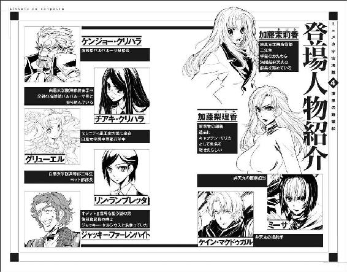
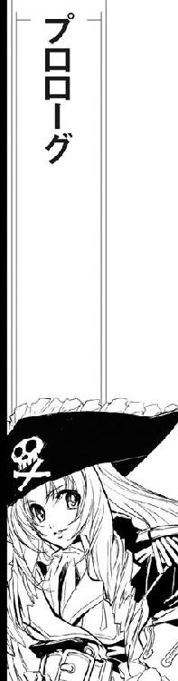
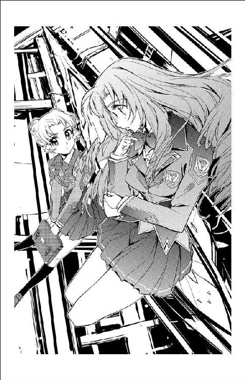
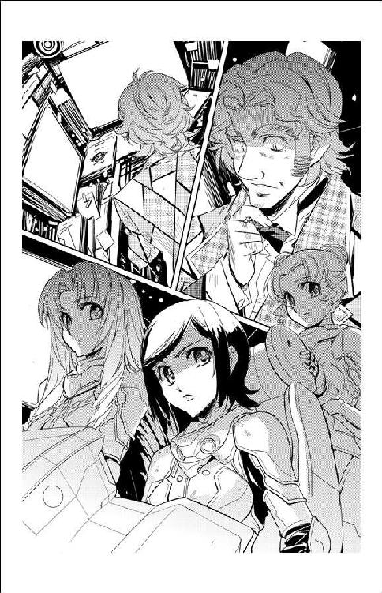

| ミニスカ宇宙海賊 04 漆黒の難破船 | |
| 笹本祐一 | |
| 朝日新聞出版 (2012) | |
イラスト／松本規之
カバーデザイン／シマダヒデアキ＋波澄智子（ローカル・サポート・デパートメント）


「黒鳥号から連絡」
通信担当のロック爺の落ち着いた声がブリッジに響いた。
「作戦開始準備、完了。敵船団も黄道面に配置完了しているそうだ」
「ありがと」
意識不明の重傷を負った父親に代わって三日前に正式に白鳥号の跡目を継いだばかりのキャプテン・スズカは、船長席のメインディスプレイに目を落とした。
もう何度見直したかわからない高精度ディスプレイは、赤色巨星ガーネットＡ及びその周囲に展開している敵味方すべての宇宙船の現在位置とそのベクトルを正確に映し出しているはずだった。
もう、待つべき事象は何もない。すべての船は配置について、作戦開始の合図を待っている。
スズカは、自分の手の中に星の運命が握られていることに気づいて、ぞくっと震えた。目を閉じ、深呼吸して、目を開く。
「では、そろそろはじめましょう」
「もう？」
ブリッジ最古参のロック爺がよく通る低い声で船長席に振り返った。
「自主参加の義勇軍がまだ配置についてないが？」
「義勇軍って言ったって、まだ作戦空域に来てない宇宙船は快速商船に貨物船、自家用クルーザー、火器管制用の電子装備もないような民間用の宇宙船よ。到着を待っても、戦力としてはどうせ期待できないもの」
スズカは、もう一度メインディスプレイに目を落とした。表示されているシンボルに、独立軍の正規艦隊所属を示すものはひとつもない。
「それに、海賊であるわたしたちは、今までに統制された艦隊戦なんか戦ったことはない。相手も正規艦隊じゃないのがせめてもの救いだけど、敵船団を動かしてるのは間違いなく軍の人間よ。だから、勝とうと思ったら勝てるだけの手を打てるだけ打たなきゃならない」
「具体的にはどんな手を打つ？」
ロック爺の質問に、スズカは、船長として初めて白鳥号のみならず、海賊船団すべての指揮を執ろうとしている自分の資質が問われていることに気づいた。
「わたしたちは艦隊戦を戦ったことがない代わり、単艦ですべての戦況を読み切って戦ってきた。索敵から会敵、どんぱちから後始末まで、正規艦隊なら役割分担された艦艇がよってたかって片付けるはずの仕事を、たった一隻でやってきたのよ。だから、わたしたち海賊船は一隻で艦隊ひとつ分の仕事ができる」
スズカは、見慣れたはずのブリッジに並ぶ馴染みの顔を見廻した。
「作戦目的さえ見失わずにやるべきことをやっていけば、いくら数が多いって言ったって寄せ集めの作業船団相手なんかに負けるはずはありません」
「昔っから、戦闘ってのはいやってほどデジタルな数勘定だ。必要な時と場所にできるだけ多くの戦力を叩き込んだ方が勝つ。実績や信念で勝てるなら、そりゃあ世の中平和だろうがね」
「もうひとつだけ、我々が彼らに勝てる理由があるわ」
スズカは、余裕のあるふりをして無理めの笑みを浮かべた。
「時間よ」
ひと呼吸おいて、スズカは続けた。
「今動き出せば、わたしたちが確実に先手を取れる。戦力の当てにならない義勇軍には、戦闘が終わってからの後始末と救助をお任せしましょう。今からはじめれば、救助船が戦闘に巻き込まれちゃう心配もないわ」
微笑んだまま、スズカはじっと通信士席のロック爺を見つめた。
ロック爺は、合格を示すように片手を上げた。
「オッケーだ。おれたち海賊の最後の大仕事がまさか艦隊戦になるとは思わなかったが、指揮官の肝がそれだけ据わってれば勝ち目もあるだろう」
「勝つに決まってるじゃない」
スズカは、拗ねたように口を尖らせてからブリッジを見廻した。
「行きましょう。白鳥号、最終段加速開始。作戦手順に変更なし、電子妨害はぎりぎりまで控えて」
スズカは、作戦参加全船につながっているチャンネルを開いた。
「さあ、海賊ども！ 最後の大仕事にかかるわよ！」
三方に展開した九本のマストに太陽光をいっぱいに拡げて、赤色巨星の太陽風を受け止めた白鳥号は、慣性制御装置を最大出力で利かせて見かけ上の質量を軽くした船体で弾かれたような加速を開始した。
独立戦争は、それから三日後に終結した。
「部品代に輸送運賃、貸しドック代に作業施設の賃料、食費に衣料費に武器弾薬燃料薬品事務用品!?」
いくらチェックしても果てしなく涌いて続くような項目に、誰もいないはずのヨット部部室で加藤茉莉香は悲鳴を上げた。
「いくら帳簿チェックが大事だからって、こんなのほんとに船長の仕事なの!? 代々の海賊船長ってほんっとーにこんな仕事までやってたの!?」
「なんの騒ぎだい」
予告もなしに背後から拡げたノートのディスプレイを覗き込まれて、凍りついた茉莉香はゆっくり振り向いた。
「......ぶちょ？」
部室のドアは確かに閉じられたままなのに、いつの間にか現われたヨット部部長のリン・ランブレッタが熱心にディスプレイの数字を読み取っている。
「弁天丸の、家計簿かい？」
「ええ、まあ、だいたいそんなようなもんです」
茉莉香は複雑な顔でディスプレイに目を戻した。本来部外者には見せてはいけない資料なのだが、事情を説明して弁天丸の運航まで手伝ってもらっている以上は、今さら隠しても無駄だろう。
「弁天丸は海賊船だけど、この宇宙で飛び廻るには宇宙船を廃船にする時までお金が必要だから、きっちり金勘定しておかないとお仕事も続けられないんです。幸いにして帳簿つけてるのは経理担当であたしじゃないけど、でも船長としてすべての金の出入りは把握して承認しないと、海賊免状出してもらってる行政局に帳簿を提出できないから」
「今どきの海賊は、監督省庁に簿記提出して営業許可もらってるのかい」
目を丸くして、リンは茉莉香の横顔とディスプレイを見比べた。
「見せてもらっても？」
「面白いもんじゃありませんよ」
茉莉香は、ノートのディスプレイをリンに向けた。
「うちのオデットII世よりちょっと変な項目が多いし、航海数なんか桁違いだからシートも分厚いけど、宇宙船の帳簿なんて基本みんな一緒ですから」
「ふうーん」
ディスプレイ上に指を滑らせて、リンは重ねられたページをめくった。
「いや、面白いよ。なるほど、保険は年間契約か。請け負う仕事ひとつごとに計算書が必要とは、いろいろ大変そうだ」
「大変です」
茉莉香はうなずいた。
「自分がやってるんじゃないからいいけど、いつかこの世の文明って必要でもない事務仕事に滅ぼされちゃうんだって思うくらい、大変です」
「ところで......」
リンは結構なペースでディスプレイの数字の列をスクロールさせている。
「海賊船は税金払ってないって聞いたことがあるんだけど、本当かい？」
「どこでそんな話聞いたんですか!?」
茉莉香は思わず声を上げた。
「嘘です！ 推進剤買ったって燃料税に付加価値税まで取られるし、うっかりステーションに入港すれば、かけられるだけの税金かけた請求書が追っかけてくるんです。誰ですか、海賊船が税金払わないなんて言ったのは！」
「いや、だからさ」
茉莉香の剣幕に笑いながら、リンは手を振った。
「宇宙船にかかる税金ってそれだけじゃないだろ。ただでさえ重量税に推力税、超光速機関積んでればさらに訳のわからない名目で税金取られるし、定期検査に合格しなきゃ運航許可が出ない上に安全証の印紙代も申請書類の手数料も馬鹿にならない。でも、海賊船は戦時中のごたごたに付け込んででっち上げられた船種で、その扱いは軍艦に準じるから、その辺り免除されてるって聞いたんだけど、ほんとじゃないの？」
「軍艦って、税金かからないんですか？」
考えたこともない質問に、茉莉香は不思議そうに訊いた。
「軍艦ってのは国の持ち物だよ。国が自分の持ち物に税金かけたって、受け取る方も一緒じゃ余分な手間かけるだけでしょーが」
「だって、国家機関の中でいちばん情け容赦がないって税務局のやることだから、自分のものだろうが他人ん所のものだろうがお構いなしに税金かけて、払えなかったら差し押さえしてたって不思議とは思えませんけど」
「軍艦だってちゃんと法に則って運用されてる宇宙船だからね、戦時中ならともかく、平時なら航行法どおりの運用を求められるし、法定どおりの定期検査も受けてるはずだ。でも、星系国家の持ち物である以上は、自分のものから税金を取ったって出るところも入るところも一緒だし、地獄の税務局だって官僚組織である以上は余分な手間を省きたいのは一緒だ。だから、運用予算は組まれてるけど、軍艦には母星にとられるような税金はかかってない。国有の宇宙船も、同じ理由で税金は取られてないと思ったけど、海賊船もそうじゃなかったっけ？」
「そうなんですか？」
そもそも、茉莉香は海明星船籍の宇宙船がどんな税金を払っているのか、すべてを把握しているわけではない。
「海賊船ってのは法に則ってると同時に法の外にある存在だからね、税金は免除されてるって、前にどっかで聞いたんだ。まあ、海賊免状なんてのが創設されたのが大昔の戦時中だからってのもあるんだろうけど、定期検査もなにも免除されてるんじゃなかったっけ？」
「さあ？」
「茉莉香が船長になってから、弁天丸が定期検査で入渠中、なんて話はなかった？」
「うちの宇宙船びんぼーで、そういうのはできるだけ省略してますから」
茉莉香は考え込んだ。
「もちろん、うちの乗組員、必要な手間を惜しむような人たちじゃないから、整備も点検もきっちりやってるはずですけど」
すべての宇宙船は、業務用、自家用などさまざまな区分に従って定期検査が義務づけられている。主に安全装備の点検と必要なアップデートを確認するために船舶局及びその委託を受けたドックや検査場で行われる定期検査に合格しない限り、宇宙船は合法的に銀河空間を飛ぶことはできない。
「検索してみても？」
リンが、ディスプレイ上で細かく動かしていた指を止めた。茉莉香はうなずいた。
「バックアップあるし、大丈夫です」
「んな、書き換えたりしないって」
リンは、無数に思える数字の項目の中から税金だけを選択してディスプレイに表示した。
「あらまー、さすがに多いわね」
「そりゃあ、いちおう一隻分の今年度分の支払い全部ですから」
「入港料、こっちは補給した推進剤や食糧、補修部品の付加価値税と、えーとこれは航路使用料か」
シート一枚分にまとめたリストを高速でスクロールさせたリンは、あっという間に最終行まで辿り着いて勝ち誇ったような笑顔を茉莉香に向けた。
「ほら、やっぱり普通の宇宙船なら払ってるはずの重量税も資産税も、機関出力応分の推力税の項目もないじゃない。税金分はこれで全部？ 別のところにまとまってたり抜けてたりしない？」
「それで全部のはずです」
何か釈然としないものを感じながら、茉莉香は答えた。
「海賊船は税金取られてないの？ ほんとかしら？ それじゃ少しは楽できるはずなのに、なんでこんなに大変なんだろ？」
「そらまー、茉莉香のところの海賊があんまり儲からない仕事ばっかりしてるからじゃないのか？」
「そりゃあ、儲け仕事ばっかりじゃないのは認めますけど」
憮然とした顔のまま、茉莉香はディスプレイの数字の列に目をやった。
「だって、海賊って言ったって義理のお仕事とか、人情絡みでとてもお金取れないとか、そんなのけっこー多いんですから」
「そこまで承知して税金免除してるなら、行政局も大したもんだわね」
「考えてるんじゃなくて気づいてないだけだと思うけれども」
茉莉香は、他に経理状況を知っている宇宙船がないかどうか考えて、ヨット部の練習帆船の存在を思い出した。
「あれ？」
茉莉香はリンに顔を上げた。
「宇宙船にかかる税金って、カテゴリーＩでもIIでも同じようなものですか？」
「超光速できないカテゴリーIIの宇宙船なら出力も桁違いに小さくなるし、飛び廻ったって空間構造への影響なんかほとんどないだろうから、税金もそりゃ多少は安くなるはずだけどね。でもまあ共通して取られる公共料金の名目も多いし、そんなには変わらないはずだ」
「うちの宇宙船、オデットII世、あれも税金払ってますよね？」
リンはちょっと考え込んだ。
「学校みたいな公的機関が教育目的で持ってる宇宙船ならいろいろ減免措置はあるはずだけど、ああ、うちの学校は私立だし、オデットII世はうちの学校の所有で海明星船籍の宇宙船で、かてて加えてあの図体となると、個人で持つにはちょっと勘定したくなくなるくらいの税金がかかってるはずだぜ」
「ですよねー」
自分のノートの横に部室の備品の中古の情報端末を立ち上げた。
「税務局に、船舶関連の税金の解説してるところがあったような......」
キーボードに関連語句を打ち込んで検索すると、税務局の広報ページは簡単に見つかった。茉莉香は、調べたい税金関連の項目を探しはじめた。
「違う、水の上に浮く船舶じゃなくて、宇宙船。えーと、うちの練習帆船ってもとたしか貨物船ですよねえ？」
「経済性優先の実験商船で、建造された当時は高速輸送船だけど、今は練習船じゃないの？」
「あ、そうだった、練習船って......」
キーボードを叩く茉莉香の手が止まった。
「そんな船舶、設定されてません」
「えーと、うちの星系で軍以外に練習専用の宇宙船持ってるところはなかったっけ？」
「たぶん、航空宇宙学校とか研究施設なら練習用宇宙船持ってるんじゃないかと」
「研究所や企業が持ってる研修船は、たぶん練習専用じゃなくてレクリエーションとか調査船兼用だったりするだろうから、練習目的それだけの宇宙船だと数が少ないだろうなあ。カテゴリーIIの貨物船なら必要経費それほど変わらないだろうから、そっちでモデルケース探してみたら？」
「はい、えーと、うちの練習帆船のサイズと出力で、似たような税金かけられそうな宇宙船だと......」
重量税とは言われるが、一般に宇宙船にかけられる税金は船体質量や寸法ではなく、その有効体積により決定される。さらに積載重量や機関出力、旅客船の場合は生命維持系の容量や客室数など細かい規程や変数があり、運用年数や償却割合などによっても変更があるから、量産された同型の宇宙船でも税金までぴったり一緒になることはほとんどない。
「船齢そろそろ二〇〇年だから、原価償却なんかとっくに終わってるどころか、登録地によったら買い換えを促すために割り増しの資産税かけられるところね」
リンが茉莉香の前の情報端末を覗き込んだ。
「ちょっといい？」
「お願いします」
こと電子機器の取り扱いに関する限りは、リンの腕前は茉莉香の数段上である。あっさりコントロール・パネルを明け渡した茉莉香は、自分とそれほど運指の速度は変わらないのに簡単に目指す画面を紡ぎ出すディスプレイを見守った。
「カテゴリーIIの貨物船、うちの船と同じようなクラスだと、だいたいこの辺りになるんじゃないかしら」
簡単に探し出したモデルケースに適当な数字を打ち込んで、リンはディスプレイ上に標準的なカテゴリーIIの貨物宇宙船の年間必要経費を打ち出した。
「わあ」
予想していたよりも一桁多い金額に、茉莉香は思わず呻き声を上げた。
「念のために言っておくが、これは貨物宇宙船をどっか金のかからない空間に浮かべてじっと一年置いておくだけでかかる金額だよ。実際に貨物宇宙船を動かそうと思ったら、これに加えて機関整備に推進剤、入港税にあと乗組員の給料とか食料とかその辺りの必要経費もかかることになる」
「そっちは、弁天丸でお目にかかってるからわかります」
茉莉香は溜息をついた。
「運送業でお仕事しようと思ったら事務所とかお仕事受ける場所も必要になるだろうし、そっちの維持とか考えると、気が遠くなります」
「宇宙ってのはなんだかんだ理由をつけて金取るところだからね」
茉莉香のうんざり顔を見て、リンは笑った。
「完全閉鎖系の世代間宇宙船でも仕立てて、銀河帝国の手も届かないような外銀河にでも出ていけば税金も追っかけてこないんだろうけど、でも、そうしたら到着地に督促状持った係官が先廻りしてるかも」
茉莉香も笑いながら、ディスプレイに表示されたオデットII世と同クラスの貨物宇宙船に標準でかかる税金のリストを見やった。
「こんな宇宙船持ってたら、白凰女学院の授業料も高いはずだわ――あれ？」
茉莉香は首を傾げた。
「どうした？」
「前に、ケインが、ケイン先生が、オデットII世が中継ステーションに専用埠頭持ってるのを見てびっくりしたことがあるんです。なんでたかが私立学校の練習帆船が閉鎖系のドックを独占使用できるんだって」
茉莉香は、ノートを操作してディスプレイ上に弁天丸の港湾関係の必要経費を映し出した。いかに海賊船といえども、連絡艇ばかりではなく船体ごと海明星中継ステーションの開放系埠頭にドッキングすることがある。
「たかだか開放系の埠頭に半日宇宙船を置いておいただけでこんなびっくりするような料金取られるんだから、ステーションの専用埠頭にオデットII世をつないでおくだけでも、そのうち宇宙船が新品で買えるような金額になるんじゃないのかしら？」
「そりゃあ......そうでしょ」
「いっくらうちの学校がお金持ちだからって、そこまで裕福なのかしら？」
茉莉香は再び情報端末を叩きはじめた。
「今度はなに？」
「中継ステーションの閉鎖系埠頭の占有料です。長期割引なら、安くなるのかしら」
しかし、海明星中継ステーションの広報ページをどれだけひっくり返しても、閉鎖系埠頭の占有料金は発見できなかった。
星系軍が閉鎖系埠頭をいくつか専用に使っている例はあるが、軍が中継ステーションに年間使用料をいくら払っているのかのデータも発見できない。
「軍も、空港や中継ステーションを管轄してる港湾局も、けっきょく海明星行政局だからなあ、軍が使用する分には無料ってことになってるのかなあ」
「ずーるーいー」
「だから、軍もステーションも税金で運用されてるんだから、その方が合理的なんだってば。しかし、閉鎖系の占有料金表、短期間でもけっこー恐ろしいことになるんだが」
巨大な宇宙船を収容する埠頭は、あたりまえのことながら宇宙船よりも大きくなければならない。全体を閉鎖して呼吸可能な大気で満たす、与圧される閉鎖系埠頭の料金表は、アップサイドのベイエリアにある共用のものでも驚くほど高額だった。
「専用区画を長期占有、ってことになったら、こりゃとっとと船処分して必要経費持ち逃げしたくなるような金額になるわね」
「長期割引があるかも知れないって言っても、専用埠頭だったら共用埠頭より高いだろうし」
与圧埠頭の使用料金表を見て、茉莉香はそこに表示されている数字をあれこれいじってみた。
「どうしたって、考えたくないことになりますよねえ。なのに、どうしてうちの学校、オデットII世維持してるのかしら」
「関連予算、公表されてるかな？」
部室のデスクにＨＡＬ坊と呼んでいる自分の専用コンピューターを取り出したリンは、さっそく操作を開始した。
白凰女学院の紋章で飾られたセキュリティを平気で突破していく表示を見た茉莉香が目を丸くする。
「何やってるんですか!?」
「うちの学校の予算執行状況、公表されてる分を見ようと思って。そーいや前にオデットII世乗り出した時も、その前の練習航海の時も、補給とか点検整備の予算がどっから出てくるか気にはなってたんだ。茉莉香ちゃん、練習航海の時に余分な部費払った？」
茉莉香は首を振った。
「払ってません。たぶん、あとから授業料に上乗せ、なんてことにもなってないと思います」
「うちもだ。ってことは、あの練習帆船を出港させるのに必要な経費は、機材の更新料まで含めてヨット部の部費から出てるってことになる」
「うちのヨット部って、そんなお金持ちだったんですか!?」
「そんなはずないのは茉莉香だって知ってるでしょ」
両手を動かしながら、リンは古来からの内装で飾られているサロンのような広い部室を見廻した。
「一見豪勢な機材が揃ってるように見えるけど、うちの学校はあるものを大事に使ってるだけなんだ。ときどきどっかから中古の機材が廻ってきたりするけど、それも後援会の払い下げや卒業生のプレゼントだったりして、見た目ほど裕福じゃないのは先刻ご承知。練習航海しても、しなかった去年度以前と今年度以降でそれほどうちの部費が変わってるわけじゃないんだから。なのに、ろくな確認もなしにオデットII世関連予算が簡単に認められたってことは、たぶんうちの学校のどこかにその記録があるはず、だと思うんだけど」
簡単にセキュリティを突破して白凰女学院のデータサーバーに入り込んだリンの手が止まった。
「......ない？」
「は？」
「オデットII世関連の項目が、予算の中に見当たらない......どうなってるんだこれ？」
「なんか他の名前になってるんでしょうか？」
「たとえば？」
「......白鳥号、とか？」
ヨット部の練習帆船がかつてその名で呼ばれていたことを思い出して、茉莉香は言ってみた。リンは素早く指を走らせる。
「出てこんなあ。だいたい、あんな大きな宇宙船まるごと一隻維持運用してるってんだから、金額だってそんなに小さいもんじゃ......」
茉莉香は、恐るおそるリン部長愛用の改造コンピューターのディスプレイを覗き込んだ。
「あの、もしオデットII世がさっきの貨物船と変わらない税金払ってて、しかも中継ステーションの専用埠頭まで維持してるとなったら、ひょっとしてうちの学校の予算規模じゃ全然足りないんじゃ......」
言われて、リンはあらためてディスプレイ上に白凰女学院の予算表を見た。
「えーと、いっくら中高一貫教育のマンモス校で生徒数が多いって言ったって、生徒一人あたりの授業料はたかが知れてるわけだし、協賛企業だの後援会だのなんだのからの寄付は資産運用会社の業績見たってびっくりするような収入にはなってない、と」
「こ、これでびっくりするような収入じゃないんですか？」
茉莉香はあらためてリン部長の横顔を見直した。
「ん？ ジェニーの手伝いしてると、これくらいの桁見慣れるよ」
「そうなんですか......海賊船の営業と、桁が違いますね」
「桁が違うってほどじゃないけど、でも、あの練習帆船一隻維持するのに海賊船より金がかかってるのは間違いない。にもかかわらず、関連予算がどこ見廻しても見当たらないってのは、これは......」
「あの、うちの学校って他の星系でも学校やってますよねえ？」
白凰女学院は、海明星のみならずいくつもの星系で学校を開いている。
「全部合わせればかなりの規模になるんじゃ？」
「うちのヨット部の練習帆船一隻のために、あんまり縁のない他星の学校が上納してるってのは、そう簡単に納得できる考え方じゃないなあ。それよりも、どっかに別勘定があるって考える方が自然だろう」
「別勘定？」
茉莉香は訊き直した。リンはうなずいた。
「これだけきれいにオデットII世関連の経費が出てこないってことは、うちの学校じゃない別のところに別勘定の予算があるって考える方が受け入れやすい」
「どこに？」
茉莉香はさらに首を傾げた。
「なんで？」
「さあ？」
リンはディスプレイを切ったＨＡＬ坊を閉じた。
「うちのヨット部の設備が不相応に充実してたりするのと、なんか関係あるのかなー」
部室のドアが開いて、笑い声とともに部員が入ってきた。
「ごきげんよー」
茉莉香は、慌てて弁天丸の帳簿を映し出したまま開けっ放しだった自分のノートに飛びついて閉じた。
「どっか調べれば、なんかわかるかもね」
とっととＨＡＬ坊を仕舞ったリン部長は、部室に入ってきた部員たちに立ち上がった。
「はいこんにちは、いいところに来たわ。下級生たちが来る前に、シミュレーターに新しいプログラム仕込むから手伝って！」
「白鳥号がなんで船長んところの学校の練習帆船になったか、だって？」
超光速航行に入って当面の仕事がなくなった弁天丸のブリッジで、営業用の船長服のままの茉莉香に質問された操舵手のケインは、スライドさせたシートごと振り向いた。
船長席の茉莉香はうなずいた。
「本職の海賊なら、そこら辺の事情知ってるかな、と思って」
「練習帆船の前歴調べたのはおれの仕事じゃない。百眼、練習帆船が海賊出の骨董品だって調べ出したのはおまえじゃなかったか？」
「はいよ、船長がまだうちの船長になる前に、二〇年も中継ステーションの埠頭におねんねしてた帆走宇宙船乗り出そうとしてるって聞いて、情報収集したのは確かにあっしだが」
操舵席の右側のレーダー／センサー手席の百眼は、リクライニングさせていたシートを起こしてコントロール・パネルの操作を開始した。
「調べりゃ出てくる程度のことを並べただけで、さて、どこにやったかな、あのレポートは確かケインに送り付けたはずだからその辺りの送付記録に、と、これだ」
百眼は、サブモニターに集めた情報をわかりやすく並べただけのレポートを映し出して内容を確認した。
「見るかい？」
船長席に転送する。
「残念ながらおそらくご期待に添えるような内容じゃありやせんな。独立戦争終結後に自主的に武装解除、海賊免許も返上して艦種も仮装巡洋艦から輸送船に戻って、しばらくは貨物船やってたらしいが、そのあとで白凰女学院に流れて練習帆船に登録された、と」
「海賊免許、返上したんだ......」
その維持に苦心惨憺している茉莉香はつぶやいた。
「当時、独立政府から海賊免許を発効されたのは、本職の海賊船ばっかりって話でもないからねえ」
レポートでは省略した資料を探して、百眼はあちこちに分散配置されているデータストレージに片っ端から検索をかけている。
「海賊免許は、独立精神溢れる宇宙船乗りが手持ちの宇宙船を持って駆けつけたなんてケースにも発効されてる。独立戦争当時の植民星戦力の貧弱なことっていまだにいろんな話のネタにされるくらい有名だが、対艦兵装どころか自衛用の小火器積んでるのが精一杯の宇宙船にいったい何を期待していたのやら」
「戦力として期待できなくても、数の足しにはなるもの」
電子戦席のクーリエが話に加わった。
「戦力にならないような調査船や輸送船でも、戦力に加わったって発表して数の足しにすることはできるし、表立って宗主星の敵に廻らなくても実際に海賊しなければ海賊免許も失効するだけだし」
「まあおかげで、独立戦争末期の植民星は、数だけなら宗主星の宇宙軍に匹敵するような戦力を揃えられて、官僚相手の交渉には立場的にそれほど不利じゃなかった、と歴史の本には書かれてるが、実のところどうだったのやら。まあ、そういうわけで数合わせや非常事態に備えて海賊免許申請したような手合いは、戦争終結と同時に海賊免許を返納したり失効するに任せたりしてる。本業の海賊どもや、海賊に目覚めちまった転職組は海賊免許を保持してたらしいが」
「海賊をやめてからの白鳥号がどうなったか、わかる？」
茉莉香の質問に、百眼はディスプレイ上に表示された資料のリストを見て答えた。
「船舶局や学園で公開されてる資料以上のことは調べてない。現物が目の前にあるんだから直接見てみたらどうだ？ 航海日誌くらいなら、船長の部室にもあるんじゃないのか？」
「ああ、そうだっけ」
部室の書庫にはまだ海明星が植民星だった時代の紙の本の形をした航海日誌もあるのを思い出した茉莉香が、のらない顔でうなずいた。
「でも、あれって古語な上に、ところどころ手書きで読みにくいのよねえ」
「勉強だと思って解読すれば？」
「古典苦手」
茉莉香はクーリエから目を逸らした。古典のみならず古語にも通じていそうな姫君の顔が思い浮かぶ。茉莉香は慌てて首を振った。
「駄目、またグリューエルに頼ったりしたら、そのうち海賊船乗っ取られちゃう」
「なんだって？」
「なんでもない」
茉莉香は、一〇〇年分にも及ぶ練習帆船になってからのオデットII世の年譜を、ざあっとスクロールさせた。年に何回かの短期の練習航海の記録があるが、他には目立った記述はない。重整備どころかその気になれば新船の建造まで行えるような閉鎖埠頭にいるからか、地道なアップデートや改造の記録も見当たらない。
「そろそろ通常空間に復帰するぜ」
操縦席に向き直ったケインが、シートを前進させて操舵姿勢をとった。オデットII世の単調な年譜をめくりながら、茉莉香は生返事した。
「了解、お任せしまーす」
年季の入ったＣ68埠頭のカクテルライトを浴びた帆走宇宙船は、最後に見た時と同じようにきれいにマストを畳んだ格納姿勢を取っていた。
「このドック、オデットII世専用に設計されて他に使いまわしが利かないから料金も安いって話だったけど」
放課後の学校から空港経由で中継ステーションに上がってきたリンは、制服のまま、無重量状態の入口から帆走宇宙船が収められた巨大な空間を見廻した。
「確かに専用だろうから別な形の宇宙船入れたら無駄も出るかも知れないけど、でも、だからって他の宇宙船入れられないってくらい特別な形してるわけでもないよなあ？」
「やっぱり部長もそう思いますよね？」
ふわりと埠頭を蹴って中央に固定されているオデットII世に浮かび上がった茉莉香は、中空で振り向いた。
「港湾設備も、さすがに最新じゃないけど充分に整備されてて不自由はない、どころか現代の宇宙船相手でも不足ないと思います。中継ステーションのこんな設備なんて、ただ置いておくだけだって経費かかるはずだから、使わない閉鎖埠頭の設備だからって遊ばせておくのはおかしいと思うんですけど」
「なんの話ですか？」
茉莉香を追うように専用埠頭の閉鎖空間に舞い上がったグリューエルが訊いた。思慮深げな姫君の顔を見て、茉莉香は目の前に船体を横たえている練習帆船に身体を向けた。
「うちの練習帆船の維持費、けっこーかかってるはずだよね、って話」
グリューエルの顔が曇った。
「部の予算が、足りないのですか？」
茉莉香は慌てて両手を振った。
「違うちがう。そーじゃなくて、超光速もできないし大出力のエンジン積んでるわけでもないけど、こんな大きな宇宙船、自家用で持ったら大変だろうな、って話」
「何か事業をしていないと、大変でしょうね」
グリューエルは、中型に分類されるとはいえ全長二〇〇メートルの帆走宇宙船の船首から船尾までを見廻した。
「さてと」
きれいに跳んで中央船体に取りついた茉莉香は、戸締まりされていたオデットII世の左舷側小型貨物搬入口横のアクセスパネルに取りついた。
「それじゃグリューエルは、中等部のヨット部員連れて宇宙船のまわり、ひと廻りしてきてくれる？」
茉莉香は、ロックを解除してカーゴドアを開くためのレバーを、アクセスパネル横に片脚をかけてぐいっと引っ張った。埠頭内では有線で外部から必要エネルギーを供給されているオデットII世の内部動力が生き返り、人の出入りのためには大きすぎるハッチがゆっくり開きはじめる。
「新入生の中には、こんな大きな無重力空間ははじめての子もいるだろうから、気をつけて」
「はあい、わかりました」
茉莉香より若干速いペースで飛び出していたグリューエルは、くるりと廻って足もとからオデットII世の舷側に着地し、再び外壁にジャンプした。
リン部長をはじめとする高等部のヨット部員たちのほとんどは、きゃっきゃ言いながらすでに閉鎖空間の中央に固定されているオデットII世めがけて跳び出していたが、高等部の新入生と中等部のヨット部員たちのほとんどは、まだ入口のそばの外壁にたまったまま頼りなげに辺りを見廻している。
完全に開ききって固定するまではカーゴ・ベイ・ドアに接近しないように、とは初心者向けによく言われる注意だが、茉莉香は人ひとりがすり抜けられる程度に開いた隙間から貨物室に入った。
「......これも何とかしなきゃなあ」
前回の航海の時には弁天丸の連絡艇を楽に収納できたはずの左舷貨物デッキには、細身の小型宇宙艇が獰猛なシルエットを格納姿勢にして固定されている。最新鋭の電子偵察機、サイレント・ウィスパーは練習帆船には過ぎた搭載艇だが、他に置き場がないことからオデットII世の格納デッキに置きっぱなしにされている。

「地上から発進して楽に軌道に乗れる最新型なんだから、空港に置いてうちの部専用の連絡艇に使ってもいいはずなんだけれども」
茉莉香は、星系軍ですら高価すぎて導入予定もない最新鋭電子偵察機が、新奥浜宇宙港の自家用機専用エリアに駐機している様子を想像して頭を振った。
「んなのに高校生が乗り込んで発進してたら、目立ってしょうがないか」
「留守中は無事？」
まだ開ききっていないカーゴドアの間から、リンが滑り込んできた。
「まだ、全部は開いてませんけど」
茉莉香は、船内に続くエアロックのコントロール・ボックスのパネルを叩いた。人力でハッチのロックを解除している間に自動で立ち上がったディスプレイが、船内の自動チェックを開始する。
「今のところは、大丈夫みたいです」
「まあ、忍び込んできたところで骨董品の練習帆船しか置いてないような専用埠頭じゃ、誰かに潜り込まれる心配もないか」
「いえ、今だと、たぶん先輩が持ってきちゃったこれがいいお金になるんじゃないかと」
細身の船体ひとつだけで格納デッキを占領しているサイレント・ウィスパーに目線を走らせてから、茉莉香は気密ハッチを開いた。閉鎖されていた船内から流れてくる空気の匂いを注意深く嗅いでみるが、異臭は感じない。
「んじゃ、先にブリッジで用事しとく」
愛用のＨＡＬ坊を入れた通学バッグを手にしたリンは、開かれたハッチからオデットII世の船内に入り込んだ。前回忘れずに消していった船内灯を点灯しながら次々に移動していく。
「はあい、こっちは機関室点検してからブリッジに行きます」
茉莉香は、開ききったカーゴ・ベイ・ドアに戻って、まわりに浮かぶ部員たちに手を振った。
「中等部は宇宙船の外一周して、外部の目視点検開始！ 高等部は外装と中味のチェック、割り振りはさっきのまんま変更なし、開始ー！」
茉莉香が中等部の頃にはそんな伝統はなかったのだが、オデットII世が練習帆船として甦ってからは中等部、高等部合同での埠頭演習が復活した。
ほとんどの宇宙船には、実際に動かなくても航行中の状況を再現できるシミュレーターとしての機能がある。これを使えば、実際に宇宙空間に出なくてもほんものの宇宙船を使っての演習ができる。
オデットII世が埠頭につながれたままの時代にも、場合によっては船内に泊まり込んでの合宿演習が行われたらしい。オデットII世が実際に航行できるようになっている今は、高等部だけでなく中等部のヨット部員を見習いとして巻き込んだ実地訓練が小規模ながら行われるようになっていた。
機関担当の二年生、三年生ともども、機関室の通常推進システムとそれが伝達する動力系のチェックを行なってから、茉莉香はオデットII世のブリッジに入った。
航行中と同様に必要なパネルのすべてに灯が入っているメインブリッジは、運用要員以上の数の部員たちでごった返していた。心得のある部員たちが寄ってたかって動かしているから、正常な運用手順からはいささかかけ離れてはいるものの、通常推進システムの点検完了を受けて開始された発進シークエンスのステップは予想外に早く進んでいる。
「なんか、みんな普通の生活には役に立たないところのスキルばっかり上がってるような......」
茉莉香は、総指揮を執っているはずのリン部長の姿を探した。
リンは、発進シークエンスの演習には必要ないはずの電子戦席について、三人分のコントロール・パネルと接続した自前のコンピューターを相手に忙しく手を動かしていた。
「部長！」
茉莉香は、あちこちに取りついている部員たちの間を電子戦席に跳んだ。
「そこの設備は今回必要ないはずです！ そんなところで何やってるんですか!?」
「部員の訓練のためにね、船長席から追い出された」
リンは、二年生のヤヨイが真っ赤な顔をしてあちこちに指示を飛ばしている中央の船長席を見やった。
「必要ならアシストしようかと思ったんだけど、邪魔者がいて大丈夫な席がここしかなかったもんでね」
「もー」
茉莉香は、旧式とはいえやり方次第では現役艦ともやり合える電子戦装備が整えられている三人分の電子戦席を見廻した。
「この宇宙船一隻で、ここのステーションくらい簡単にダウンさせられるんですよ？」
「わかってるさ。大丈夫、今は主機関が動いてないし、外部からの電力供給なら本気の電子戦する前にブレーカーが落ちるはずだ」
「ほんとに大丈夫かどうか試してみよう、とか考えてません？」
茉莉香は、電子戦席でシートベルトを締めているリンの隣の席のバックレストに手をかけて、コントロール・パネルを見廻した。
「いんや？ 試すまでもなく結果がきっちりわかってるのに、やってみたってしょうがない。女子校の練習船ってだけでも目立つのに、この上、目をつけられるような真似しても余計に動きにくくなるだけだし」
「なーんか、思考が犯罪者だなー」
「ただ、もしできるなら一部装備の改変してみたいんだけど」
手を止めたリンは、半分ほどのディスプレイやコンソールに灯が入っている電子戦席を見廻した。茉莉香は注意深く訊き直した。
「なんですって？」
「いくらソフトウェア書き換えても、小手先のパーツ入れ替えてパワーアップしても、オデットII世はしょせん骨董品だからねえ。このまんまじゃせっかくジェニーが持ってきてくれた偵察機の機能をどうやったって使いきれないんだ」
「電子戦艦でもなければ運用できないような偵察機、いったい何に使うつもりですか！」
「だって、有り余る予算全部を高価な電子兵装と部品に注ぎ込んだ偵察機だぜ。あんなサイズでこれより高出力のレーダーシステム搭載してる上に処理能力なんか戦艦並みだから、単純計算で有効範囲も精度も一〇〇倍以上だ」
弁天丸ほどではないにせよ、オデットII世は練習帆船にはもったいないような電子兵装が装備されている。船齢二〇〇年の旧式船だが、その能力は現役の民間船などよりはるかに上である。
「そんなに」
想像していたよりもはるかに上の数字に、茉莉香は嘆息した。
「そういう敵も相手にすることを考えて設計してるから当然なんだが、サイレント・ウィスパーなら、隠蔽してる敵艦相手でもだいたいの方向さえわかってれば単機でクロスサーチかけて位置特定できるんじゃないかなあ」
通常なら、電波を反射しない相手の索敵は困難である。通常の手段でレーダー波を反射しない相手を見つけ出すには、効率の悪い光学センサーによる全天走査や赤外線探知を行うしかない。
例外として、複数の方向からレーダーを照射して通常と違うわずかな反応を探すという手がある。ステルスといってもレーダー波を完全に吸収するわけではなく、照射されたレーダー波を照射方向にだけは反射しないものが大部分だから、複数方向からの照射には対応しきれずにわずかな反応を示すことがある。
レーダー波を完全吸収するタイプのステルス機の場合は、照射されたレーダー波を別周波数あるいは熱に変えて放射するから、微弱な赤外線反応を示すことになる。通常推進や反重力機関などで動けば推進プラズマや重力変移が観測できるから、かえって探知しやすい。
「単機でクロスサーチって、いったい何をどうすれば......」
ステルス機を探知するには、充分に距離を置いた複数のレーダーで特定空域を照射する必要がある。レーダーが自分のレーダー波だけでなく、味方から発振された他のレーダー波も受信解析できれば、システムは離れた距離と同じだけの開口を持つ巨大なレーダーと同じ成果を上げられる。
「わかった、無人のレーダーまわりに配置してコントロールするんじゃありません？」
「そんな手なら古くからあるよ。それに、レーダーを配置するなら単機じゃない。サイレント・ウィスパーの電子システムを完全に理解したわけじゃないから確実な説明じゃないが、どうやらあれのレーダーはアンテナを振らずに方向だけ変えるフェイズド・アレイだけじゃなくて、あらかじめ別な方向に反射するように位相やら周波数やら偏移させた、いかさまみたいなレーダー波も打てるみたいなんだ」
リンの説明を理解できずに、茉莉香は目を白黒させた。
「何ですかそれ？」
「だから、あさっての方向にレーダー波飛ばしちゃうステルス機相手に、あらかじめあさっての方向に反射するような変な波を打てるらしい。もちろん反射したレーダーがどんな方向に飛んでいっちゃうかなんてわからないから、周期的にいろんな方向に反射するようなレーダー波を打ち出すことになる。具体的にレーダーアンテナがどんなことやってるのかよくわからないし、そんなことしたら反応だっていやってほど増えるだろうに、通常波の反応と付き合わせて異常だけを拾い出すような処理をリアルタイムでやってくれるんですと」
「......ずるい」
感じたままの正直な感想を口にした茉莉香に、リンは笑った。
「だからさ、せめてこっちでもそのデータを共有できるようなシステムじゃないと、せっかくの偵察機もったいないだろ？」
「もったいないとは思いますけど、でも、もしサイレント・ウィスパーがそんなステルス機を探知できるとして、いったいどうやってそんなの相手にするつもりです？」
茉莉香は、シミュレーション上の出港手順がそろそろ埠頭を開くあたりになっているブリッジ内を見廻した。
「うちの練習帆船で、サイレント・ウィスパーじゃなきゃ見つけられないような本気のステルス機相手に何やるつもりです？」
「隠れてるつもりの相手の場所さえわかれば、あとはこっちから引っ掛かった振りして電子妨害かけるとか、軍に通報するとか罠張るとか、いくらでも手はあるじゃないか」
リンは再び手を動かしはじめた。
「戦いってのは、どんぱちはじめる前に九割方決まってるものなんだろ。だったら、確実に勝てるまで持っていくのが責任ある立場のやるべきことだと思うんだけど」
「責任ある立場だったら、まず戦闘になるような事態を回避すべきなんです！」
茉莉香は声を潜めた。
「オデットII世は軍艦でも海賊船でもないんだし、みんなは軍人でもなんでもないただの女子高生なんですから」
「あーら、そのただの女子高生にむりやり海賊やらせたのは、どこのどなただったっけー？」
「むりやりだなんて人聞きの悪い。お願いして手伝ってもらっただけじゃないですか。実戦になったらどうしようかと思って、ずっと胃が痛かったんですから」
「まあ、それが船長の仕事だからしょーがないわな。こっちだって、部長としていろいろと神経使ってるんだから」
「嘘ばっかり」
シミュレーター上で、埠頭の開放が確認された。これからドッキングアームを解除して船体を解放、自力で中継ステーションから出港するオペレーションが開始される。
ブリッジの誰も自分たちに注意を払っていないのを確認して、茉莉香はさらに声を潜めた。
「で、見つかりました？ 白鳥号がうちの練習帆船になったいきさつについての手掛かり」
「いや」
同じように両手を動かしながら、リンは小声で答えた。
「実はオデットII世のデータ管理領域には中等部の頃からときどきアタックかけてるんだが、どうにも開け方のわからないファイルや隠しデータが多くてね。なんせ保持してるストレージも年代物だから、うっかり手を出して自爆でもされたら、メーカー送りしようにもメーカーそのものがなくなってたりして、永遠に失われても不思議じゃない」
「部長の腕で開けられないデータなんかあるんですか!?」
茉莉香は思わず声を上げた。リンは軽く肩をすくめた。
「こっちが持ってる鍵の数なんて、知れてるからね。他よりは鍵の束揃えてるつもりだけど」
リンは、コンソールの上に固定してあるＨＡＬ坊に目を走らせた。有線でオデットII世に接続された現代のコンピューターは、システムに不要な刺激を与えないようなおとなしいスキャンを続けている。
「でも、作者に鍵なんて概念がないファイルだったら、どんな鍵を用意したって開きようがないし、そもそも作った奴が誰かに開いてもらうことを期待しなきゃ、永遠に封印されたままのファイルだってある。今でも使えるデータはフォーマットごとアップデートされてるからまだアクセスできるけど、単なる記録になるとアーカイブでもなきゃ残っていないような、互換性なんかとっくにあきらめたみたいな古い規格ばっかりで、それ調べるだけで一年かかったんだから」
「......それで部長、古い妙な規格に詳しいんですか」
茉莉香は、高速でファイルスキャンを続けているＨＡＬ坊のディスプレイを見た。
「幸いにして、オデットII世は昔っから容量にばかみたいに余裕のあるでっかい記憶領域確保してるから、日付で探せば建造中の記録もあったりするけど、それにしたって歴史が長いからねえ。意味のありそうなデータだけでもうんざりするほど量が多いし、意味がなさそうな雑音みたいなデータでも実はそう見せかけてるだけの暗号化された戦闘データかも知れない、なんて考え出すと......。もっとパワーのあるコンピューターなら、ちっとは余裕もって分析できるんだけれども」
リンが愛用しているＨＡＬ坊は、見てくれは頑丈一点張りの軍用コンピューターだが、その中味は重ねられた非常識な改造のおかげで、最新型よりも高速化されているはずである。全開で使うと専用バッテリーがあっという間に空になるので、実用にしようと思ったら電源をつなぐしかない。
「だって、探してるのは一〇〇年以上も昔のファイルじゃ......」
「昔のファイルだからって、鍵が単純になってたり、圧縮方式の数が今より少ないってわけでもないからねえ。そもそも鍵があるのかないのかわからない以上は、うっかりトラップ踏んで自滅しちゃわないように気をつけながら丁寧に鍵合わせてくしかないし」
「ちょっと待って下さい」
茉莉香は、非戦闘時らしくおとなしい表示しか映し出されていない電子戦闘席のコントロール・パネルを見廻した。
「オデットII世の中に、鍵付きのファイルってそんなにいっぱいあるんですか？」
リンはうなずいた。
「うんざりするほど。もちろん、普段の仕事に使うようなデータや大昔の星図、航行記録なんかは圧縮も暗号もなしにきれいに並んでるけれど、それ以外の何のデータだかわからないものがあっちこっちに目立たないようにばらまかれてる。宇宙船が生きてれば定期的にバックアップして書き換えられるようになってるから、意図的に残す必要のあるデータだとは思うんだが、何のデータかわからない上に、どんな必要があってそんなことしてるのかもわからない」
「いつ頃のデータなんですか？」
データにはタイトル以外に作成年月日とサイズが付記されるのが普通である。
「それがさ、書き換えの時に日付まで適当に付け直してるらしいんだ。本当の日付はそのための鍵を使えばまともに表示されるとは思うんだけどね。現状じゃ隠れてるファイル探し出して並べても、建造後から今日までの間の日付がランダムに付けられるらしいんで役にも立ちゃしない」
「怪しい」
「ときどき、まだ来ない未来の日付のファイルまで混じるからね、どー考えても馬鹿にしてると思うんだが」
「ドッキングアーム解除！」
「針路クリア、確認！」
「オデットII世、出港します！」
全船の最終チェック完了と安全を確認して、船長席のヤヨイが声を張り上げた。Ｃ68埠頭に固定されたままのオデットII世が、出港のシミュレーションに入る。
「ええと、船外状況は、と」
リンは電子戦席のコントロール・パネルに指を走らせた。ディスプレイに、中継ステーションの管制局から伝えられる周辺空域の船舶配置が映し出される。
茉莉香は、電子戦席のリンの隣に着いた。オデットII世の予定航路は中継ステーションの管制空域内を一周して、すぐに帰ってくる短いものである。シミュレーションだから出港許可や航路予定表などは管制局に提出されていないが、航路は現実の状況に即して設定され、他の宇宙船の航路を妨害しないように動き廻らなければならない。
「あ、わりかし運がいい」
予定されている出港、入港航路上に、迂回しなければならないような大型船や大船団がいないのを見てとった茉莉香が小声でつぶやいた。
「これなら、ほとんど予定どおりに帰ってこれるかも」
「どうせシミュレーションなんだから、いろいろと予定外のアクシデントがある方が訓練にはなるんだが」
「うちの星のまわりで、どんなアクシデント期待してるんですか」
「オデットII世、出港します」
復唱して、操舵手席のアイがシートの両サイドに装備されている旧式なコントロールスティックにわずかに力を加えた。シミュレーターの中でドッキングアームから解放されたオデットII世が、姿勢制御スラスターを使ってふわりと浮かび上がり、動き出す。
「さすがに、持ちまわりでブリッジの人員配置してると、前回の記録更新とはいかないか」
リンは、誤差の範囲で前回の埠頭訓練とさほど変わらない時間で埠頭を離れた今回の記録を見た。茉莉香は笑った。
「だから、軍艦じゃないんですから、緊急発進の訓練なんかしなくていいんですってば」
「民間船だからって非常事態がないわけじゃないんだから、いざという時のために訓練しておいたって損はないと思うぞ」
「非常事態相手の訓練なんて、いつものお仕事ができるようになってからでいいんです。そういうことは、まともに宇宙船動かせるようになってから考えればいいんですってば」
予告もなしに、鋭い警報がブリッジをつんざいた。
短い現状報告や私語が飛び交っていたブリッジの声が跡絶えた。茉莉香は部長が何か仕掛けたのかと思って、リンの顔を見た。同じことを考えたように茉莉香と顔を合わせたリンは、妙な顔で首を振ってから口を開いた。
「報告！ なんの警報？ 担当は誰!?」
「は、はい！」
目の前でモニターが赤くフラッシュしている通信手席のマリイが手を挙げた。
「担当ここです！ 外からの緊急通信、これは、ええと、ＳＯＳ......」
適合する通信パターンをサブモニターから探し出したマリイのトーンが跳ね上った。
「救難信号です！」
「そんなトラップ、シミュレーションに仕掛けてない」
これがシナリオにある訓練ではないことを知らせるように、リンは言った。
「公共の救難信号だったら、管制局に対応を任せればいい。相手の宇宙船と位置と状況は？」
「定型の救難信号だけなんで、状況まではわかりません。相手の船名は黒鳥号、位置は......があねっと!?」
「ガーネット!?」
同じ信号を電子戦席でチェックしながら、リンは思わず繰り返した。
「ここから三〇光年も先の、赤色巨星のガーネットＡか!?」
「うそ!?」
さらに細かいデータを読み取ったマリイが声を上げた。
「このＳＯＳ、通常通信です！ 超光速通信じゃありません！」
「発信位置は!?」
受信された救難信号を敵船に見立てて位置特定できるかな、と電子戦パネルをいじりながら茉莉香は声を上げた。救難信号には位置情報が含まれるが、信号の発信座標が位置情報と一致しているとは限らない。
「今計算中......出ました！ たう星系外、外からの信号です！」
「光速でしか飛ばない通常通信のＳＯＳが、星系外から届いたってのか......？」
はじまった時と同様に、突然鳴り続けていた警報が止まった。マリイは唖然としてつぶやいた。
「......消えた」
オデットII世のブリッジは、電子音とサーキュレーターのかすかな風の音だけに満たされた。ブリッジに詰め込まれたヨット部員の息遣いと通信モニターに残った受信記録だけが、今の救難信号が錯覚でないことを示している。
ブリッジの動きが止まってしまったのを見て、リンはぱんぱんと手を叩いた。
「はい、航行作業続行！ まだ埠頭を出たばっかりなのに、こんなところでぼんやり慣性航行して漂ってたら、他の船にじゃまになるだけだよ、宇宙船はまだ動いてるんだから、みんな作業続けて！」
「今の救難信号については、管制局に問い合わせておきます」
茉莉香は、部長の指示を引き取って続けた。
「どうせ練習帆船のあたしたちじゃ、星系外の救難信号には対応できないわ。何が起きたのか気になるのは一緒だから、それはこっちで確認しておく」
「実際と同じ訓練だと、救難信号まで同じように受信されるんですね」
見習いの中等部を引き連れてブリッジにいたグリューエルが、電子戦席にゆったりと飛んできた。
「救難信号だけじゃないわよ。航路情報や通常通信も同じように受信できるけど、重要度が低いし名指しの呼び出しでもないから、ベル鳴らしたり、ましてや警報なんて鳴らないだけ」
茉莉香は、目の前の電子戦席のモードを切り換えて、受信したばかりの救難信号の詳細を確認した。
ディスプレイに映し出された詳細データの何カ所もが、色反転した文字で表示されているのに気づいて首を傾げる。
「あれ、なんでこんなに注意表示が多いんだろ？」
「まともな救難信号じゃないからだ」
すでに同じ信号の分析を開始したらしいリンが小さな声で言った。その意味がわからずに、茉莉香とグリューエルは目にも止まらぬ速さで指を走らせているリンの横顔を見た。
「さっき受信されたＳＯＳは、指向性の強い超短波領域でガーネットＡ方向から発信されてる。だけど、今の航行法の規格の救難信号じゃない。これは、独立戦争以前、まだこの辺りが銀河帝国になる前の開拓星だった頃に使われていた古いフォーマットの救難信号だ」
ディスプレイに流れていく文字を読み取るリンの横顔に、茉莉香はグリューエルと顔を見合わせた。
「そんな古い救難信号が、まだ生きて使われてるんですか？」
「救助を必要とするのが新しい宇宙船ばっかりとは限らないからねえ。よっぽど特殊な規格でない限りはだいたいの救難信号なら反応するようになってるはずなんだが、でも今のＳＯＳに警報まで流れたのは、たぶんこの宇宙船が現役だった頃に使われてた古い信号だからじゃないかなあ」
リンは眉をひそめた。
「こんな古い規格だと、知らない宇宙船だったら単なる雑音として無視されかねない。管制局はなんて反応してる？」
「あ、今調べます」
茉莉香は、中継ステーションの周辺空域をコントロールする管制局の最新情報を参照してみた。通常業務続行中で、管制空域内に周知するような特別な情報は出ていない。
救難信号にまっ先に反応して対応するのは軍の仕事である。周辺空域を活動領域とする星系軍が救助船を急行させているのかと思って、茉莉香は事故遭難関連の最新情報を調べてみた。
「あれれれ？」
「どうした？」
「いえ、なんか、管制局も軍も動いてないみたいで......まだ情報が更新されてないだけかな？」
「あれだけ派手に警報鳴らしてったＳＯＳだぜ。管制局も軍も動いてないなんて、そんなはずあるかい」
「両方とも情報を生中継で公開してるわけじゃないですから、まだそれが出てないだけかなと思ったんですけど」
茉莉香は、もう一度管制局の救難信号受信状況を調べてみた。たう星系周辺空域では、半日前の高速船の故障報告以外の救難信号の受信は公表されていない。
「位置情報は他の星だわ、発信場所は星系外だわ、で遠すぎて反応してないのかな？ それとも、もう通りすがりの帝国艦隊にでも救助されちゃったのかしら？」
「ま、何もないのならそれでいいんじゃないか」
一通りの分析を完了したリンが手を止めた。
「今のわたしたちが助けに行けるわけじゃなし、他の情報が出てこないなら無事になんとかなったんだろう」
しかし、オデットII世が中継ステーションの管制空域内を一周して専用埠頭に帰る練習航海のシミュレーションを終えたあとで、管制局に参照した結果は意外なものだった。
「ＳＯＳが、記録されていない？」
参照方法を間違えたかと思って、公開データをあちこちひっくり返しながら、リンはブリッジの全員に結果を簡潔に伝えた。
「管制局の受信記録に、さっきの救難信号が記録されていない......どういうわけだ？」
埠頭に船体を固定したあとの処理に忙殺されているブリッジに、不審なざわめきが拡がる。
「何か事情があって、記録から落ちているのでしょうか？」
グリューエルは、リンが操作するディスプレイを見つめたまま注意深く言った。
「今はもう使われていない規格の救難信号だ、ということでしたね。ということは、何かのエラーで不必要な救難信号が流れてしまったのではないでしょうか？」
「ＳＯＳの信号は旧式でも、受信したこっちはきっちり船検に通してある現代の規格の通信システムだ」
リンは、もう一度救難信号の受信記録を確認した。ブリッジの全員が聞いた警報は幻ではない。
「有効な救難信号でなければ、あんなに派手に警報が鳴るはずがない」
リンは、受信した信号の他のデータを調べた。
「確かに強い信号じゃないが、埠頭に入ったまんまの練習船にも聞こえたほどのＳＯＳだぜ。もっと感度のいいアンテナを全天に展開してる管制局が、聞き逃すはずがない」
「でも、記録にはありません」
管制局の受信記録は、救難信号を含む公的通信のすべてに及ぶ。救難信号直前の中継ステーションへの入港許可申請も、そのあとの航路横断報告も並んでいるのに、まるで誰も聞いていなかったかのようにオデットII世が受信した救難信号だけが記録に残っていない。
「何が起きたのかはこっちで調べておく」
茉莉香とグリューエルに目配せして、リンは宣言した。
「救難信号の記録を持って管制局に問い合わせれば、何があったのか教えてくれるだろう。それじゃあ、本日の部活はこれで終了、後片付け開始ー！」
「ＳＯＳを送ってきたのは、なんという宇宙船ですか？」
グリューエルの質問に、茉莉香は困ったような顔でディスプレイのデータの一部分を指した。
「黒鳥号？ ご存知なのですか？」
「知らない宇宙船だけど」
茉莉香は、さらに困った顔で、部員たちの入港作業の片手間に調べ出したデータを示した。
「同じような名前の宇宙船はいっぱいあるけれど、救難信号にあった識別記号の黒鳥号は一隻だけ。オデットII世のデータバンクにも登録されてたわ」
「まあ、知り合いの宇宙船ですのね」
「知り合いというか、なんというか」
茉莉香はさらに声を潜めた。
「救難信号を送ってきた黒鳥号は、大昔の海賊船よ。オデットII世がまだ現役の海賊船だったのと同じ頃の」
「まあ。それで、今はその黒鳥号はどこにいるのです？」
「それが、独立戦争の最後の戦闘で行方不明になって、それっきり」
茉莉香の顔を見て、グリューエルはディスプレイのデータを見直した。
「......一二〇年前に？」
茉莉香は小さくうなずいた。
「それでか！」
小さく叫んだリンが、コントロール・パネルに素早く指を走らせた。
「通常通信だろうが超光速通信だろうが、飛んでくるデータには発信日時も記録されてるはずだ。さっきのデータの発信日時は......〇〇七九・一二・二八？」
そのあとに続いている時間は無視して、リンはディスプレイ上に映し出された年号を注視した。
「銀河標準暦じゃ、ない？」
「海明星の固有暦じゃありませんか？」
グリューエルがさりげなく言った。
「独立前の海明星は、宗主星の暦に縛られることを嫌って独自の暦を使っていたんじゃありませんか？」
「ああなるほど、独立前の旧暦な」
リンは再びコントロール・パネルを叩いた。茉莉香は呆れ顔でグリューエルの顔を見た。
「自分のところだけじゃなくて、他の星の歴史にまで詳しいの？」
「自分がいる場所のことを知っておくのは基本ですから」
グリューエルは不思議そうに答えた。
「そんなに驚くようなことですか？」
茉莉香は素直にうなずいた。
「うん、もう、びっくり」
「わー......なるほどー」
部長の抑揚のない声に、茉莉香とグリューエルはリンを見た。手が止まっている。
「わかったよ、さっきの救難信号に管制局が反応しなかった理由」
「なんですか？」
「発信日時が、一二〇年前......独立戦争の終結寸前だ。そんな昔の救難信号に今から駆けつけたって、そら間に合うわけないわなあ」
「一二〇年前の救難信号......？」
茉莉香は繰り返した。
「そんな、通常通信ならとっくに拡散しちゃって、オデットII世のアンテナじゃ受信できるわけがありません！ それに、発信場所はたう星系の外側だとは言っても通常通信が通るくらいの近距離のはずで......」
「規格も発信日時も大昔、発信した船は行方不明となると、どう考えてもまともな救難信号じゃないねこれは」
リンは、それ自体は小さなデータ量しかない救難信号をディスプレイ上に映し出した。
「いったいどこの誰だ、こんないたずら仕掛けてきたのは」
「いたずら......」
グリューエルは、誰に言うともなくつぶやいた。
「......なんでしょうか？」
入港シミュレーションのあと、白凰女学院ヨット部は、Ｃ68埠頭に係留されたままのオデットII世の停泊作業と掃除、戸締まりを確認して本日の埠頭演習を完了した。
新奥浜空港に帰る学校所有のシャトルの出発時間を確認した茉莉香は、ポートサイドの埠頭コントロールに一人残って、オデットII世の停泊状況を確認した。常時エネルギー供給が必要な閉鎖環境系や、外部からの通信があれば自動でも応答が必要な通信系の接続に問題がないことを確認してから、不必要なエネルギーをすべて落とす。
四方からオデットII世を照らし出していたカクテル光線が時間差で消えていく。
非常事態に備えて常時点灯の星のような小さなライトだけがぽつん、ぽつんと残るだけの埠頭を、見晴らしのいい窓から見渡して、茉莉香はディスプレイとコントロール・パネルの光だけが幻想的に光る埠頭コントロールを見渡した。
白凰女学院所有のシャトル便の出発時間までは、出発申請が遅れたのと優先申請も出していないために後廻しにされて、かなり余裕がある。
「ステーションの設備はあんまり使いたくないんだけど、しょーがないか」
つぶやいて、茉莉香は埠頭コントロールの通信システムのチャンネルを切り換えた。制服の内懐から取り出した携帯端末を開いて、超光速通信をあらかじめいくつも用意してあるダミー回線のひとつに接続する。
「えーと、今日の合い言葉は、と......」
定時連絡で送られてきたパスワードを打ち込んで、茉莉香はヘッドセットを頭にかけた。
待つほどのこともなく、応答があった。
『はいこちら弁天丸、百眼だ』
「茉莉香です」
音声だけの通信に、茉莉香はヘッドセットのマイクで答えた。
「現在位置、海明星中継ステーションＣ68埠頭のコントロール。今、大丈夫ですか？」
『ちょいと取り込み中だが、問題ない』
「取り込み中？ あれ、今日なんかお仕事ありましたっけ？」
『いや、仕事じゃない。次の星系軍の演習相手の仕込みにいろいろ廻らなきゃならないくらいで、船長の手を煩わせるような仕事はない、はず、だったんだが、えーと予定外の信号が流れてきたもんで、今ちょっと取り込んでるんだ』
「予定外の信号って」
茉莉香は、通信モニターがあれば百眼の顔が見られるのに、と思った。
「黒鳥号からの救難信号じゃない？」
『大当たり！』
即答だった。
『なんだよ、そっちでも聞こえてたのか？ よっぽど古い宇宙船じゃなきゃ、あんな信号受信しても聞こえないはずだぜ。練習帆船でシミュレーションでもしてたのかい？』
「当たり」
茉莉香は舌を出した。
「一二〇年も前の日付の救難信号だし、宇宙船は航行状態でもこっちは埠頭につながれたまんまだから、なんにもできなかったけど、なに？ そっちでも受信したの？」
茉莉香は通信パネルに目を走らせた。ダミー回線を経由させているから、通信相手の正確な現在位置など表示されていない。
「弁天丸、今、どこ？」
『現在位置、北涯星軌道のさらに外側』
「たう星系のいちばん外側じゃない!?」
八つの惑星を持つたう星系の中で、いちばん外側を廻る第八惑星が凍りついた白い惑星、北涯星である。天文学的にはその先、たう星の太陽風が届くまでは星系内空間であるが、北涯星軌道の外側には薄いオールト雲しかない。そして、茉莉香が知っている限り、弁天丸がそんなところまで出かけていく予定はないはずだった。
「ちょっと待って。星系外で取り込んでるってことは、さっきの救難信号の発信場所!?」
『おお、船長もスキル上げたねえ。話が早くて助かるぜ。そのとおりだ。今弁天丸は、黒鳥号からの救難信号が発信されたと思しき場所まで飛んできてる』
「なんかあったの？」
茉莉香は勢い込んで訊ねた。
『うんにゃ。救難信号の発信位置と思われる場所に、今三度目の念入りなセンシングをかけてるところだが、救援を求める宇宙船はもちろん、トランシーバーひとつどころか部品のかけらも見つからない』
「あら......じゃ、やっぱりほんものの救難信号じゃなくて、いたずらかなにか？」
『いたずらだって確認できりゃいいんだがね、それまではこっちはできるだけのことをするだけだ。連絡を廻したら、今ちょうどバルバルーサがガーネットＡの近所にいるってんで、そっちにも跳んでもらって調べてもらう予定だ』
「バルバルーサが!?」
茉莉香は、チアキの海賊船とその船長の顔を思い浮かべて叫んだ。
「これって、そんな他の海賊船に連絡廻すほどの大事なの!?」
『大事じゃなきゃそれがいちばんなんだが、なんせ相手は黒鳥号だ。......黒鳥号の名は、知ってるかい？』
「さっき、ＳＯＳの時に初めて見た」
呆れたような間のあと、再び百眼の声が聞こえた。
『まあ、独立戦争にも海賊にも興味がない最近の若いもんじゃ無理もないか。黒鳥号ってのは、最初に海賊免許を貰った七隻の海賊船の一隻で、独立戦争の最後の戦闘で行方不明になってる宇宙船だ』
「そこまでは、オデットII世のデータにもあった」
『んじゃ、独立単艦行動が基本の海賊船がたった一回だけ協同作戦をとったことがあって、その時の唯一の沈没船が黒鳥号だったってのは？』
「それは、初めて聞いた......何があったの？」
「ガーネットＡでな、宗主星の最終兵器を相手にしたんだ。戦闘開始は戦争終結のほんの三日前」
宇宙空間における戦闘のタイムスケールは様々である。一瞬で完結するものから、数千年も戦い続けて勝負がつかないものまである。艦隊同士の戦闘なら、数日間にわたる戦闘は珍しいものではない。
「宗主星の最終兵器って何!?」
聞いたこともない歴史に、茉莉香の声のトーンが跳ね上がった。
「海賊船が艦隊で戦ったって、その戦闘どうなったの!?」
『そりゃまあ、なんとか勝ったって言えるだけの成績は上げたんだと思うぜ。当時の植民星が銀河帝国に呑み込まれるってかたちとはいえ、立派に独立を勝ち取って、おれたちが海賊稼業続けられるだけの世の中になってるんだから』
「何があったの？ 最後の戦闘って弁天丸も参加したんでしょ、何があったのか教えて！」
『勘弁してくれよ、確かに弁天丸もガーネット戦には参加してるけど、それは一二〇年も前の話だぜ。当時から乗り込んでるような長生きの物好きが今でもいると思うか？』
茉莉香は弁天丸の乗組員の顔を思い浮かべた。年齢不詳なのも何人かいるが、独立戦争当時から乗り込んでいるような古株はさすがに思いつかない。
「今の弁天丸で、いちばん古い人って、誰？」
『勘弁してくれ』
百眼は哀れっぽい声を上げた。
『そいつをばらしたら、殺されちまう』
「......え？」
『とにかく、黒鳥号ってのは、おれたち海賊にとって最後の喪失船なんだ。もういないってわかってても、その名で救難信号なんか打たれたら、どこのどいつがどんなつもりで何をやってるのか確認しなきゃならない。それは、代々の船長の申し送りとして最優先事項に挙げられてる。船長は確認してないかい？』
「見た......っけ？」
思い出せずに、茉莉香はつぶやいた。
「なんで？ 喪失船て、いなくなっちゃった船のことでしょ？ 一二〇年も前に沈んだ宇宙船のことを、なんでそんなに寄ってたかって調べなきゃならないの？」
『黒鳥号は行方不明になっただけだ。沈没は確認されてない。だから、海賊船の船籍から黒鳥号を外すには、その沈没を確認するか、この宇宙にもう黒鳥号が存在しないことを証明する必要がある』
百眼の口調が突然柔らかくなった。
『まあ、弁天丸に乗って独立戦争を戦った御先祖さまたちには、そうしたい理由があったんだろうよ。取り込んでるのはそういう事情だ。しかし、弁天丸だけじゃなくて、かつて海賊船だったそっちの練習帆船でも同じＳＯＳを受信してるってことは、こいつは......あいよ、わかった。クーリエからの伝言だ。念のためにそっちで受信したＳＯＳ、まるごとコピーで構わないから受信記録ともども弁天丸に送っておいてくれ』
「それは、いいけど」
茉莉香は、埠頭のコントロール・ルームからオデットII世への通信回線を開いた。今日の通信記録からＳＯＳ受信前後の記録を抜き出し、受信状況も含めて生データのまま弁天丸に送る。
「つまり、黒鳥号からの救難信号って、海賊が予定を放り出すほどの一大事ってことなのね」
『そういうことだ』
百眼は答えた。
『この一件が、船長の手を煩わせるような大事にならないように祈っててくれ』
「チアキちゃんが」
口にしてから、茉莉香は言い直した。
「ガーネットＡに跳んだバルバルーサからの報告って、いつ頃、聞けるかしら？」
『さあて、向こうも正規業務の片手間の遠廻りだからねえ。できるだけ急ぐとは言ってくれたから、報告はすぐに船長にも廻すよ。定時連絡じゃなくて叩き起こすことになるかも知れないが、それでもいいかい？』
「......任せる」
自宅で寝ている時ならともかく、学校で非常呼集かけられたらちょっと大変かな、と考えながら茉莉香は答えた。
「すぐに出ていかなきゃならないような事態なら、叩き起こして。そうでないなら、定時連絡でいい」
「いたずらに決まってるでしょーが」
宇宙港から自宅に向かう夜のフリーウェイを例によって手動運転で飛ばしながら、茉莉香の母親である加藤梨理香は答えた。地上で管制業務についていた梨理香にも、記録に残されていない救難信号の話は聞こえていた。
「今のフォーマットで発信されたＳＯＳじゃなくっても、それが救難信号らしければ助けに行かなきゃならないってのが、今も昔も宇宙の決まりなんだから。迷惑なのよね、たとえ大昔に行方不明になった海賊船で、調べたってなんにも出てこないってわかってても、規程どおりに救助船差し向けなきゃならないんだから」
「わざわざ救助船出したの？」
茉莉香は目を丸くした。ハンドルを握る梨理香は肩をすくめた。
「近場に差し向けられるような宇宙船がいなければ、軍に高速艦の出動を要請するところだったわ。今回はたまたま近場に弁天丸がいたから、そっちに現場の確認をお願いしたようだけど」
宇宙空間は広大である。一刻を争う救助が必要な場合は、管制局が付近を航行中の宇宙船に針路の変更を要請する。
「黒鳥号って、梨理香さん知ってた？」
茉莉香は、母親の横顔を見た。梨理香はハンドルを握ったままライトに照らされるフリーウェイをじっと見つめている。
「そういう海賊船がいて、独立戦争の最後のかなり大きな作戦で沈んだ、くらいしか知らないねえ」
梨理香が現役の海賊として弁天丸に乗り込んでいたのは、もう二〇年以上前の話である。それでも、独立戦争から数えれば一〇〇年も経っている。
「いたずらだとしたら、誰がなんのために？ それも、わざわざ海賊だけが派手な反応示すような救難信号打ったんだろう？」
たう星より二桁大きな質量を持つ巨大恒星ガーネットＡが、その長い寿命の果てに迎えた最後の段階に入っていた。
莫大な水素をその超重力で核融合させた恒星は、大部分がヘリウムとなって鈍く赤く燃えながら、かつての内惑星軌道まで膨れあがる。記録によれば、ガーネットＡは内側の二つの惑星とひとつのガス状惑星を呑み込み、あと数千万年は続くはずの赤色巨星の最後の輝きを放っていた。
今も昔も、赤色巨星は居住に適した星ではない。かつて安定した白色恒星だった頃には生命発生空域の惑星に生命が発生したガーネット星系は、今は滅びを迎える星系として無人の観測基地が置かれているだけである。
周辺空域は小惑星帯に至るまで調査されていて、鉱物資源目当ての鉱山師が迷い込んでくることもない。
「たう星系だけじゃなくて、他の植民星からも離れてるこんな役にも立たない星がなんで最終決戦の場所になったのよ」
海賊船バルバルーサのメインブリッジのスクリーンに映し出された主星ガーネットＡの姿は、肉眼で見えるように映像処理をされてなお、赤く毒々しい光を放っている。
「独立戦争当時の敵だった宗主星が、最終兵器を使おうとしたからさ」
バルバルーサの黒髭船長として知られるケンジョー・クリハラは娘の質問に答えた。
「こんなところで？」
チアキは、オブザーバー席のディスプレイに宇宙図を映し出した。
「一番近い開拓星、ええと、リュイティンからでも一二光年も離れてるじゃない。宗主星からは八〇光年!? 銀河帝国と接触する前の原始的な超光速機関で、よくそんなところまで進出できたもんだわね」
「手間はかかるが、当時の超光速機関ってのは、銀河帝国で標準的に使われているものと比べても性能だけならそれほど遜色ないものだったらしい。超空間に跳び込んじまえば、空間的な距離なんてのは大した問題じゃなくなるのは知ってるだろう」
「はいはい、跳ぶ時にいちばん気をつけなきゃならないのは距離じゃなくて精度だって、ええ、ちゃんと習ってます」
チアキは、もう一度メインスクリーンの赤色巨星を見上げた。
「それにしたって、植民星の独立をあきらめさせるために、なんで主星からも植民星からも離れたこんなところに最終兵器が置かれてたの？ 超光速ミサイルかなんかの基地置くにしても、もう少し狙いやすいように戦略目標の近所にした方がいろいろ楽だと思うんだけど」
「そんな可愛い兵器ならいろいろ楽だったろうなあ」
脇に立つ長命種の副頭目に目配せして、ケンジョーは溜息をついた。
「ノーラ、おめえは確かこのバルバルーサで最終兵器潰しの作戦にも参加したんじゃなかったか？」
独立戦争に参加した海賊船であるバルバルーサよりもはるかに長い年月を生きており、生まれた星はとっくの昔に失われ、今は一族が銀河に散っているだけというノーラはゆっくりとうなずいた。
「ええ。あの頃はもう銀河帝国が独立戦争に干渉してくることが確実になっていたから、宗主星は植民星への脅しに使うつもりだったステラ・スレイヤーを帝国に対する実力誇示のために発動させようとしたのよ」
「ステラ・スレイヤー？」
チアキは、すらりと背の高いノーラの細面に向いた。
「星を、切り裂くもの？ それが、最終兵器の名前？」
「もとは、恒星のエネルギーを超空間経由で伝えるようなネットワークを考えてたらしい。最初のうちは恒星系みたいな固定目標へのエネルギー供給だが、将来的には宇宙船相手にも個別に補給できるようなシステムをでっち上げようとしていたらしいが」
「胡散くさー」
今の銀河帝国でさえ実現していないようなネットワークに、チアキは眉をひそめた。
「だいたい、そんなもん作るなら、こんな燃え尽きかけてる星より、もっと生きのいい主系列星の方がいいんじゃないの？」
「エネルギー取り出すだけじゃなくて、それを超空間経由で好きなところに送り届けようって都合のいいシステムなんでな、高重力の赤色巨星が実験には都合がよかったらしい。これでうまくいったら、さらにエネルギー密度の高い白色矮星や中性子星を電源代わりに使う予定だったらしいが」
「そんなもん作ってて、なんで植民星ごとき相手の独立戦争に負けるのよ」
「そんなものに無駄な資源を投入していなければ、銀河帝国が介入してくる前に植民星を打ち負かして、この辺りの星系の政治形態ももうちょっとまとまりのあるものになっていたかも知れませんね」
ノーラがお得意のアルカイックスマイルを浮かべる。
「そんなエネルギーネットワークが、宗主星の最終兵器だったの？」
「いいえ」
アルカイックスマイルのまま、ノーラはゆっくりと首を振った。
「超空間ネットワークは、もっと長くかかるはずの、成功すれば銀河すべてにエネルギーを行き渡らせるはずの息の長い計画だった。でも、実験の成功の目途もつかないうちに植民星を抑えられなくなり、銀河帝国とも接触した宗主星は、実験用のインフラを最終兵器に転用することにしたの。それが、ステラ・スレイヤー」
ノーラは、メインスクリーンの赤色巨星を見上げた。
「超新星爆弾よ」
「......え？」
チアキの頭の中を、基礎教養としての超新星に関する知識が駆け巡った。
「......赤色巨星を、超新星爆発させようとしたの？」
「そう。本来の使い方とは違うけど、それは実験用プラントと作業船の役目をちょっと変更するだけで、すぐに実現できる方法だったから」
「だって、一番近い開拓星からだって一二光年も離れたこんなところで超新星爆発させたって、その光が届くのは一二年も先の話じゃないの」
「超新星爆発の光が、惑星に届いたらどうなる？」
面白がっているような口調で、ケンジョーが質問する。
「夜空が昼間みたいに明るくなる。そりゃもちろんそうだが、超新星爆発が撒き散らすのが光だけじゃないことくらいは知ってるよな？」
「ガンマ線バーストが放出される」
知識をそのまま言葉にして再生したチアキが凍りついた。
「半径三〇光年の可住惑星は全滅、五〇光年でも大打撃......」
「そういうことだ」
ケンジョーはうなずいた。
「もちろん、目の前の赤いでぶっちょをどっかんさせたところで、光年単位で離れた星系にガンマ線バーストだのなんだのの殺人光線が届くのは、十数年後から数十年後になる。だが、そいつは確実に惑星に届いて地表を焼き尽くす。宗主星は滅亡が約束された植民星にかかずらわる理由がなくなるし、植民星は独立戦争なんてやってる場合じゃなくなる。最後の審判が下る前に大脱出するか、それとも何か別の手を考えるか、プライドを捨てて宗主星に泣きつくか。まあ、目の前の戦争をすっぱりやめさせるって点においては効果絶大だろうなあ」
「ひどい......」
つぶやいてから、チアキは喚き出した。
「惑星破壊爆弾だの恒星弾だのより性質悪いじゃない！ 爆破半径内にいる植民星だけじゃなくて、辺りの星全部焼き払うつもりだったの!?」
「植民星の独立戦争だけでも頭痛いのに、加えてはるかに強大な銀河帝国が相手だってんで、当時の宗主星もヤケになってたんだろうよ。世の中で、存在意義を失ったのに存続が自己目的化しちまった官僚組織ほど恐ろしいもんはないからなあ」
「それで、どうなったの!?」
チアキの声に、バルバルーサのブリッジに笑いが拡がった。
「まあ、結論から言えばガーネットＡを超新星化しようとした宗主星の目論見は、寸前で察知した植民星側の、主に海賊の働きによってまんまと打ち砕かれた。だから、ガーネットＡは今もこうやってのうのうと赤色巨星のまま宙天に輝いていらっしゃると、こういうわけだ」
「知らなかった」
チアキは茫然とつぶやいた。
「独立戦争の時に、そんな作戦があったなんて......なんで？ そんないくらでも映画や話のネタになりそうな作戦、なんで誰も知らないの？」
「超新星爆弾ってのは、銀河帝国のみならず反乱軍でも揃って条約まで結んで禁止してる最悪の戦略兵器だから、だよ」
ノーラの説明をケンジョーが引き取った。
「大規模破壊兵器なんてものは技術の進歩にともなっていっくらでも強力で性質の悪いもんが開発されるもんだが、目標だけじゃなくて周辺の星まで無差別に焼き尽くす戦略兵器なんてのは、もう兵器じゃなくて災厄みたいなもんだ。銀河帝国にとっても、併合しようとしてる星系がそんなものを使ったなんて実績があれば、立派に民族消去を含む最終的解決の名目が立っちまう。理想主義を掲げて、愛と慈悲に満ちた統一宇宙を演出したい銀河帝国としては、それは政治的にも心情的にも避けたい展開だろうよ」
「だから、公式には独立戦争の戦史にも、銀河帝国の歴史にも、宗主星がこの星を超新星化しようとした記録はありません」
ノーラが静かな声で言った。
「宗主星も、超新星爆弾の政治的な危険性は十分に理解していたようで、作戦は正規軍を使わずに行われています。遠く離れた独立軍がいろいろうるさいのに、戦術的にもほとんど意味がないこんな赤色巨星に戦力を割くわけにはいかなかったというのも理由のひとつでしょうけど」
「ずるい！」
チアキは短く叫んだ。
「おかげで作戦を察知するのが遅れた上に、かつかつで艦を廻してる独立軍も正規軍を向かわせてる余裕がなくてな、艦隊戦なんぞ専門外もいいところの寄せ集めの海賊船がガーネットＡを超新星化しようとする宗主星の作業船団を相手にすることになった。と、これがまあ、独立戦争における海賊どもの最後にして最大の戦闘になったわけだが、どうだいボーグス？」
ケンジョーは、バルバルーサのセンサー・観測系を一手に統轄する、剥き出しのメカニズムに覆われたロボットのようなサイボーグに声をかけた。
「黒鳥号の救難信号にあった座標はこの辺りだろう。かつての大海戦の跡以外に、なんか気をつけた方がいいものはめっかったかい？」
「いや......」
ほとんど肉声と変わらない合成音声が答えた。
「観測ステーションの記録でもガーネットＡの変動は自然範囲内に収まっているし、周辺空域にも人工的な重力変移や不自然な赤外線反応は認められない」
もし近い過去に近傍空域を宇宙船が飛んだのであれば、なんらかの航跡が残る。しかし、高感度に調整されて展開しているバルバルーサのセンサーは、ガーネットＡを中心とした広範囲の空域を対象とした探査に、確認すべき異常を見つけ出すことができなかった。
「奇妙なほど、静かだ」
ボーグスが付け加えた最後の印象に、ケンジョーは訊き直した。
「そいつはつまり、誰かが何かやったあとにわざわざ足跡を消していった、と、こういうことか？」
「まだそこまでは断定できないが、観測ステーションのデータ精査と周辺空域の走査を希望する」
「観測ステーションのデータくらいとってくるのは簡単だろーがよ」
赤色巨星であるガーネットＡには、母星を廻る惑星系まで含めて資産的な価値はほとんどない。目立つ星だから付近を航行中の宇宙船の灯台としては役に立っているが、人が住む惑星も鉱山基地もないから中継ステーションもない。
安定した赤色巨星ではあるが、観測のための無人観測ステーションが配置されて恒星としての状況変化はリアルタイムで観測され、超光速回線で各方面に送られている。
「観測データが書き換えられている可能性を否定できない」
ボーグスの持ってまわった言い方に、ケンジョーは顔を上げた。
「なんだって？」
「ここの観測ステーションは、複数の座標に置いた観測プローブからの情報をステーションで一括受信、整理して外に配信している」
それは、超光速通信で送るデータ量を減らすために使われる手法である。
「ここの観測プローブなら、外惑星軌道から迷い込んできた小惑星やカテゴリーIIの低速船でも識別できるだけの精度がある。にもかかわらず、最近一年分ほどは外部からの遊星や彗星、宇宙船の記録がない。これだけの大重力源をこれだけ広範囲にわたって観測しているにしては、これは不自然だ」
「なるほどね」
ケンジョーは、豊かな顎鬚に指を潜り込ませた。
「自然のかけらが飛んでこないだけならまだ偶然で済むかも知れないが、きれいさっぱりないってことは飛んできた宇宙船の記録も消されてる可能性があるってことか」
「観測ステーションで記録されている原データへの照会許可を」
「ちょいと待ちな。黒鳥号のＳＯＳとの関係はまだわからんが、もしどこかの誰かが何かの意図を持ってガーネットＡの観測データをまるごと書き換えてるんだとすれば、そいつはこっちのことも見えているはずだ。観測ステーションがすでに乗っ取られているとして、そいつに気づかれずに原データに当たれるかい？」
「不可能ではない」
ボーグスの声に慎重さが加わった。
「だが、観測ステーションが誰かに乗っ取られている可能性があるのなら、今ここでバルバルーサからステーションにデータ照会をかけるのは不自然だ。船長の言う可能性を重視するなら、我々は何も気づかなかったふりをしてこの星域を出ていくのが望ましい」
「そういうことだ。何も気づかないふりをして、何もせずにここから飛び立つ。だが、もし必要な情報がこの辺りに落ちてるんなら、そいつは、どうやってでもかっさらっていかなきゃならない。できるか？」
「やってみよう」
ボーグスは、観測系コントロールに直接有線でつながれている指先のインジケーターを激しく明滅させはじめた。
「あと何分、ここにいたら不自然に思われるだろう？」
「通り一遍のスキャンかけて、分析は後廻しにして次の場所に跳ぶ、なんて飛行パターンなら、まあ数分てところだな」
「充分だ」
ボーグスは、すでに展開されていたバルバルーサの全観測系を動員してガーネットＡ及び周辺空域に関する精査を開始した。
異常はすぐに発見された。
「重力異常だと!?」
「光学観測で背景の星が歪んで見えるほどの歪みをいくつも確認した」
ボーグスはいつもどおりの落ち着いた口調で報告した。
「局部的な歪曲はブラックホールや中性子星など高重力の連星なら珍しくないが、大きいとはいってもガーネットＡ程度の赤色巨星では起きるはずがない。現に、観測ステーションの過去のデータにはこんな重力異常はない」
「てえことは、自然現象である可能性は低いってことだな」
ケンジョーは、ディスプレイ上に表示された赤色巨星周辺空域の重力異常をぐるりと廻して配置を確認した。バルバルーサの受動観測データを視覚化しただけだから精度は低いが、ガーネットＡの赤道面を六方から囲むような重力異常が見て取れる。
「考えられる要因は？」
「複数の高出力反重力機関による相互作用」
両手と頭部のインジケーターを高速で点滅させながら、ボーグスが答えた。
「それが一番早い」
「高出力反重力機関!?」
訊き直したノーラが、めったに着くことのない副長専門のサブコントロールに飛んだ。一瞬の動作ですべてのコントロール・パネルとディスプレイを生き返らせ、いつものゆったりした動作が嘘のような速さで指が走る。
「ガーネットＡを囲む赤道面上に、六角形の頂点の形での重力異常？」
「そうだ」
ボーグスは、観測系に割り込まれる前にノーラの席にデータを送る。
「局地的な高重力源がガーネットＡの赤道上に配置されている。並みの反重力機関じゃない。人工ブラックホールのプラント船みたいな出力だ」
「レーダーを頂戴！」
ボーグスの返事を待たずに、ノーラはバルバルーサのレーダー系のメインコントロールを奪い取った。
「あと、エネルギー、廻せるだけ！」
「おいおい、せっかく受動観測に限定して迷い込んだ用なしのふりしてるのに、いきなり戦闘態勢でレーダーぶちかましか？」
主機関の出力まで上げてレーダーに注ぎ込んでいるノーラに、船長としての立場上、ケンジョーが声をかけた。
「もしこの空域によからぬことを企んでる悪者でもいたら、おれたちの船の場所も型式もだだ漏れになるぜえ？」
「ステラ・スレイヤーは、充分な質量を持つ赤色巨星を超新星化するの」
船体の上下に最大展開したレーダーアンテナをガーネットＡの両極に向け、力任せの走査をかけながらノーラは言った。
「安定しているはずの赤色巨星を強引に超新星化するのに必要なのは、自分の重力で核が崩壊するほどの大質量。そして、この宇宙には質量なしに重力を操る技術が存在する」
「この異常重力が、ガーネットＡを超新星化するためのものだと？」
相変わらずの平静な口調で、ボーグスはセンサーの目標空域をノーラと同じ赤色巨星の両極上空に調整し直した。
「何者かが、ガーネットＡを超新星化しようとしていると言うのか？」
「赤道上にプラント並みの強力な反重力機関を搭載した作業船をずらりと並べて制御しながら、どちらかの極から点火栓となるブラックホール爆弾を赤色巨星の中心に突入させる」
レーダーのセッティングを終えたノーラは、メインスクリーンに映し出されている赤色巨星に複雑なカーソルに彩られた立体ゲージを重ねた。
「最終兵器、ステラ・スレイヤーの発動手順よ。わたしは、あの時、ここにいたの」
超光速で放たれたレーダー波が、ガーネットＡの北極上空に何者かの影をあぶり出した。
「見つけた！」
レーダーの開口が最大になる船首方向を目標空域に向ける姿勢変更までかけて、ノーラは超光速レーダーを絞り込んだ。赤色巨星化したとはいえ恒星の名に相応しい熱放射を受けながら、強力なエネルギー反応とともに船影が浮かび上がる。
「ほんとにいた......」
ケンジョーは、メインスクリーンに映し出された最大望遠の画像を目の前につぶやいた。
「遠いおかげで船影はぼけぼけだな。船名型式は取れるか」
「取れる。観測データにノイズを残すことを嫌って電子妨害は行われていない」
ボーグスは超光速レーダーが確認した空域にセンサーを集中させた。
「恒星近傍空間でもこれだけクリアなら、過去の光像を追いかけての観測もできるはずだ」
ボーグスは、次々に得られる観測データを解析して遠距離に離れた宇宙船の型式を判別していく。
「エネルギー反応が低い......慣性飛行中、それほど大きくない。このサイズでは、赤色巨星を囲むように重力場を配置するような高出力の反重力機関を搭載することは不可能と思われる」
人工重力を発生する反重力機関は、高出力化すると幾何級数的に巨大化する。現在観測されているような異常重力場を発生させるためには、宇宙船というよりも小天体と呼ぶべき大きさの作業船が必要になるはずだが、バルバルーサはいまだにそんな巨船は捉えていない。
赤色巨星の極方向で発見されたのは、質量、寸法ともにバルバルーサよりも大きい宇宙船だった。得られたデータを解析したボーグスは、粗い要目とともに推測される宇宙船の外形をディスプレイ上に描き出した。
「エネルギー反応に解析できるほどのデータが揃っていないから機関は推測するしかないが、旧式の軍艦か高速輸送船と思われる」
「極方向には、大規模な作業船なんか必要ないのよ。置いておかなきゃならないのは、すべての反重力プラントを一手に制御する指揮船だけ。通信設備さえ充実しているのなら大きさは問題じゃない」
ノーラは、得られた宇宙船の型式データをそのままデータベースにあるカタログとマッチングさせた。結果はすぐに出た。
「そんな......そんな！」
悲鳴のような声を上げて、ノーラはコントロール・パネルに走らせていた手を止めた。
「トランスポンダーはない。少なくとも、確認できない」
「トランスポンダーなんかなくてもわかるわ。これは黒鳥号よ」
ディスプレイに映し出されたデータとメインスクリーンの船影に忙しく目を配りながら、ノーラは両手で自分の口もとを押さえた。
「データにある外形とパターン一致、七〇パーセント、質量寸法ともに誤差範囲内。そんな、黒鳥号は敵の指揮船を道連れに、ガーネットＡに沈んだのよ。たとえ引き揚げられたにしたって、まともな船の形をしてるわけがない」
「目標を極点上の未確認船に固定」
ケンジョーが指令を下した。
「接近して正体を確認する。最初の七隻の一隻となれば、かつての僚艦だ。どんないきさつか知らねえが、こんなところで行き会って挨拶もなしってわけにはいかないだろうぜ」
「飛ばします」
操舵手のモーガンが、宣言すると同時に機関出力を最大に上げた。慣性制御を最大限に効かせた弾かれたような加速で、かつての軽戦艦である海賊船バルバルーサは赤色巨星の極方向に針路を向けた。
「やってくれ」
通常の営業なら行わないような大加速で跳ね上がるディスプレイの表示を見ながら、ケンジョーは言った。
「観測ステーションのデータまでいじくるような準備万端な連中のやってることにしちゃ、どうもおかしい。ボーグス、今のうちにできるだけのデータを取っておけ」
「了解」
慣性制御を効かせっぱなしの大加速中は、静止状態にくらべて観測精度が大幅に悪化する。距離が短くなっても船が動いている限りは、自分でまわりの空間をかきまぜているようなものだから、ろくなデータは取れない。
「早速だが、赤道面の重力異常の数値が急速低下中だ。こっちの動きに気づいた何者かが、あわてて逃げ仕度はじめたか」
「重力異常を起こしてる本体は、まだどこにも見つかってねえんだろう」
船長席に沈み込んだままのケンジョーが唸る。
「これだけ大規模な重力異常を起こそうと思ったら、それなりの仕掛けが必要なはずなのに、どこにも見当たらねえ。たった一隻見つけた大昔の海賊船だけでも、しっかり捕まえとけ」
「減速前に、一〇秒でいいから慣性制御を含む全推進機関をカットしてくれ」
大加速のおかげで精度ががたがたに落ちているセンサーの情報を取りまとめながら、ボーグスが操舵手のモーガンに伝えた。
「減速なんぞ考えずに最接近時のみカット、って手もあるぜ」
予想軌道を修正しながらモーガンが答える。
「時間最優先なら、あっという間に通りすぎるにせよぎりぎりまで加速した方が早い」
「相対速度がえらく高くなるが、大丈夫か？」
ケンジョーの質問に、ボーグスの答えがわずかに遅れた。
「行ける。問題ない」
「時間最優先で行け」
ケンジョーが命令した。
「加速停止は最接近五秒前！ 通過後に一八〇度ターンをかけて速度を同期させる。最接近時の相対距離は任せるが」
ケンジョーは、バルバルーサの予測軌道に重なる黒鳥号のシルエットにちらりと目を走らせた。
「モーガン？ いいところ見せようと思って、ぶつけるなよ」
「アイ・アイ・サー！」
コントロール・パネルに手を置いたモーガンは、最接近時の相対距離を設定し直した。赤色巨星の熱圏をかすめるような最短軌道で、ガーネットＡの極点上空に浮かぶ宇宙船にバルバルーサが突撃する。
通常推進の大加速に加えて慣性制御に反重力機関まで動員して到達速度を稼ぎながら赤色巨星表面に接近する軌道のおかげで、直線距離が短縮されても得られるデータはろくに増えない。しかし、恒星としては表面温度が低い赤色巨星から船体を守るバルバルーサの熱防御スクリーンが最大出力での運転を終えてからは、バルバルーサのセンシングシステムは大加速中という悪条件にしては充分に満足できる観測データを蓄えはじめた。
「この距離からでも有意なエネルギー反応が見えない」
ボーグスは、最も重要と思われるデータを簡潔に口頭で報告した。
「完全にエネルギーを切っているのでなければ、死んでいると判断するところだ」
「一二〇年前に沈んだ宇宙船なら、とっくに死んでいてもおかしくない」
メインスクリーンの黒鳥号は、度重なる画像補整にさらにデータが加わっていることもあって鮮明度を増している。バルバルーサのデータサーバーに残されていた宇宙船カタログから探し出された黒鳥号現役時代の画像と、目の前のスクリーンを見比べるケンジョーの顔が険しい。
「電池さえ生きていれば自動の救難信号くらいは消え残ってるかも知れねえが、整備なしでエネルギー系が保つはずがない。だが、沈没船だとしたらどこから流れてきやがった？」
「黒鳥号はガーネットＡの極軌道に乗っている」
ボーグスは赤道面を直角に貫いて両極を巡る仮想軌道をガーネットＡ上に描き出した。
「安定軌道だ。隠れられる軌道じゃない。そして、もちろんこの一世紀ばかり、周辺空域で黒鳥号あるいはそれに似た宇宙船は一切確認されていない。観測記録を完全に信用するならば、黒鳥号は今日突然、あそこに現われたことになる」
「そして、遠く離れた母星に救難信号を発信した」
ケンジョーがにやりと笑った。
「上等じゃねえか。駆けつけてみたら消えてる、なんて無駄足踏まされるよりはるかにマシだ。なんかのはずみで現世に戻ってきたかつての僚船が、最後に残ったエネルギーで救難信号を発したならそれでよし、そうでないなら、これからじっくり正体暴いてやる」
「......歪んでるわ」
ノーラが、ぽつりと消え入りそうな声で言った。
「船体が歪んで、機関部に大穴が空いてる。船の形はしてるけど、合致しない残りの三〇パーセントは壊れて原形を失ってるからだわ」
さらに鮮明に映し出された船体は、その名のとおり漆黒に染められていた。背景の宇宙空間から浮かび上がるように補正をかけられた映像の中で、星空を白く反転させた黒鳥号は海賊船の乗組員全員が見慣れた断末魔の姿を晒していた。
「大破、沈没ってところか」
どこからか数珠を取り出したケンジョーは、メインスクリーンの大昔の海賊船に両手を合わせた。大型巡洋戦艦の船体を使った宇宙船の外部可動砲塔は、てんでばらばらな方向を向いたまま浮かび上がったり接合部だけ残っていたり、幾何紋様に展開されるはずのアンテナも、ぐずぐずにもつれ合って船体の後ろ半分にまとわりついている。船体軸線が歪んでいるように見えるのは気のせいではなく、どうやってか加えられた力で竜骨が曲がるほどのダメージを受けたらしい。
たったひとつの明かりも点けずに、黒鳥号と呼ばれた宇宙船は赤色巨星の輻射を受けたまま宇宙空間を漂っていた。
「どうするね？」
船体の加速はそのままに、予定軌道にさらに細かい修正を加えながらモーガンが言った。
「このまま接近するか？ 今から減速してもちょいと行き過ぎるが、ランデブーするならそっちは早くできるぜ」
「動いた！」
ボーグスが鋭い声を上げた。ブリッジの全員がメインスクリーンの黒い難破船を見上げた。
「違う、そっちじゃない！ 重力異常が動き出した。光速をはるかに上回る速度で、重力異常空域が動き出している」
「なんだとお!?」
自然現象では有り得ない観測結果に、ケンジョーが声を上げた。
「てことは、もう確実に、これはどこぞの誰かが仕組んでる異常現象だってことじゃねえか！」
「複数の反重力機関を特定空域に干渉するように作動させれば、空間異常は簡単に起こせる。反重力機関の出力と制御精度が充分に高ければ、干渉空域を移動させるだけで空間異常も動かせる。反重力機関の照準角を変化させるだけならば、見かけ上の空間異常の伝播は簡単に光速を超す」
ボーグスの手許のインジケーターが激しく点滅している。
「モーガン、加速停止！ 重力異常は、黒鳥号の存在する空間を目指して一点に収縮しようとしている！」
「了解！」
理由は聞かずに、モーガンは即座にボーグスの指示に従ってバルバルーサの加速と慣性制御を停止した。慣性飛行に入った宇宙船のレーダー、センサー系を総動員して、ボーグスはクリアになった空間で最後の観測を行う。
極点上空の難破船は、恒星表面に沿って一点に集まるように移動してくる六つの空間異常を知らぬように、ぴくりとも動かない。
「衝撃波が来るぞ」
移動する空間異常がバルバルーサを含む周辺空域と交叉しないのを確認して、ケンジョーが言った。
「高速移動する重力波が重なり合って局部的な高重力を発生させてやがる。巻き込まれないようにこっちの反重力機関の作動準備、本船の保全を最優先！ どうしたボーグス、まだデータは揃わねえか！」
「揃っている」
ボーグスは答えた。
「だが、重力異常は黒鳥号を目指すように移動している。あの一点で重なり合った時に何が起きるのか、見てみたい」
ガーネットＡの直径は一・一二天文単位、かつての第三惑星の軌道すら呑み込んだ巨星の差し渡しは、光速ですら二〇分を越すほどにまで膨れあがっている。
赤色巨星の赤道面を囲むように存在していた重力異常点は、そのすべてが意思あるもののように北極点上の一点めがけて高速移動していた。
ボーグスは、センサーを黒鳥号と移動する異常重力のみに振り分けて集中していた。できればさらに広い空間を探査して異常重力を操るものを探したいところだが、バルバルーサのセンサー系にそれほどの余裕はない。
「この星系内に異常重力を操作するものがいるはずだ」
観測を続けながら、ボーグスは粗い予測をサブモニターに打ち出した。
「高重力を制御できるような大規模プラント船が最低三隻あれば、赤道軌道上の六点に重力異常を発生し、なおかつそれを自由自在に移動できる」
「この難破船の正体を暴くのが先だ」
ケンジョーは、メインスクリーンに修正を重ねながら刻一刻とそのディテールを増していく黒い宇宙船を睨みつけている。
「どうした、そろそろ異常重力が一点に集まる頃じゃねえのか」
背景の星を凝縮された高重力で歪めながら、大加速を停止して慣性飛行中のバルバルーサをはるかに上回る速度で、異常重力が六方向から黒鳥号に襲いかかった。
接近したとはいえまだ光秒で計るような距離ほども離れているから、肉眼でも光学センサーでもバルバルーサの現在位置からは何が起きているのか見ることはできない。しかし、超光速レーダーで捉えられた情報は解析、再構成されて、メインスクリーン上に視覚情報として映し出される。
背後の星空を歪めながら、紡錘状に凝集した異常重力が狙い澄ましたように黒い難破船に重なった。慣性制御や反重力機関を作動させていればかわせても、ただの金属塊と化した宇宙船なら簡単に一点に圧縮されて原型を失うような異常重力が、黒鳥号を呑み込む。
ブリッジの誰もが、かつて宇宙船だったものが一点に圧壊する状況を予想した。しかし、メインスクリーン上の黒い難破船はゆらりと船影を揺らしてから、置き換えたようにその姿を消した。
「......何？」「何だ今のは!?」「何が起きたの！」
「消えた」
ブリッジに渦巻いた怒声と喚声に、ボーグスはただ一言答えた。
「黒鳥号だけじゃない、六つの重力異常も重なると同時にぱったり消え失せた。狙ってやったのならば、見事な制御技術だ」
「何を狙って、宇宙船が消えたんだ？ それとも消したのか？」
重力異常の痕跡すら拡散していく空間状況がデータ表示されるメインスクリーンを見上げたまま、ケンジョーが訊いた。
「そもそも、あそこにいたのはほんとうの黒鳥号なのか？」
「データは残されている」
ボーグスは、消え失せる寸前の黒鳥号のデータを映し出した。バルバルーサが慣性航行に移行したおかげで、ほとんどノイズのないクリアな画像で動力を失った宇宙船がメインスクリーンに描き出される。
「少なくとも、この形をした宇宙船があそこにいたことは間違いない。レーダーを解放してくれ。センサーと合わせて周辺空間を走査し直す」
「......あ、ごめんなさい」
我に返ったノーラがコントロール・パネルに指を走らせた。
「重力異常はどうなった？ どっか他に宇宙船でもなんでも見えるか？」
「反応はない」
ボーグスは大きく有効範囲を拡げたレーダーで星系内を走査している。
「重力異常だけではなく、作業船も難破船も何も見えない。この空間で生きて動いているのは、観測ステーションの無人プローブを除けば我々だけだ」
「逃げられたか、な？」
ケンジョーは、船長席のバックレストにどっかりともたれかかった。
「観測ステーションの原データでも取りに行くか。それから、今見たものをまとめて弁天丸に流してやれ」
「今の？」
ノーラがゆっくりと副長席から立ち上がった。
「黒鳥号そっくりの難破船が目の前で消えたって、他の船に知らせるの？」
「黒鳥号そっくりのＳＯＳを受信したのは弁天丸だ。同じ旗を戴く海賊として、奴らにはここで何が起きたのか知る権利がある」
バックレストに沈み込んだまま、ケンジョーは成果のない走査を続けるディスプレイを見廻した。
「うちでだけ解析しても通り一遍の結果しか出ねえだろうが、目の前であれを見たのでなければ何か役に立つような斬新な解釈を思いついてくれるかも知れねえじゃねえか」
茉莉香が緊急通信で呼び出されたのは、パジャマを着てすっかり寝支度を整えてあとはベッドに潜り込むだけというタイミングだった。
どう控えめに見ても一般家庭のリビングには似つかわしくない無骨な情報端末兼用の通信システムに、茉莉香はこちらからの画像はカットして座った。
「ごめんなさいね、今パジャマだからカメラは勘弁して」
『声紋でも場所でも本人確認はとれてるから問題ない』
通信モニターの向こうの百眼が、他との会話の片手間に答えた。茉莉香は、コントロール・パネルに表示されている銀河標準時を見た。
「で、こんな時間に定時じゃない連絡ってことは、非常事態？」
『非常ってほど緊急じゃないが、とりあえず情報の共有は一刻も早い方がいいだろうと思ってね』
百眼は、こちらの顔は映っていないはずの通信モニターで正面から茉莉香を見た。
『バルバルーサからの緊急報告だ。黒鳥号が出た』
「黒鳥号が、出た？」
茉莉香は通信システムのディスプレイの中の百眼の顔を見ながら繰り返した。
「それじゃ、あの救難信号、ほんもののＳＯＳだったの？」
『いやそれが、こっちもちょうど今近所まで戻ってきたバルバルーサの報告が届いたばっかりで、何が起きたのか、あるいは進行中なのか、いろいろ考えてる状況だ』
他と何かやりとりした百眼が、茉莉香に目を戻した。
『バルバルーサのクルーが、直接船長と話したいと言っている。このまんまつないでもいいかい？』
「ええ!? だってあたし今パジャマで、顔出しで話せるような状況じゃないって」
『向こうは今さら気にするような相手じゃない。クラスIIの暗号通信だから盗み聞きされる心配もないよ。んじゃよろしく』
「ちょっと待ってったら！」
他の船と話をするのに音声だけというのは失礼だから、せめて着替えてくる時間だけでも待ってもらおうと思った茉莉香の目の前で、通信ステータスが入れ替わった。バルバルーサからの通信が弁天丸で中継されて茉莉香の家の通信システムに直結される。
『え？ もう大丈夫なの？ 話していいの？』
「チアキちゃん!?」
ヘッドセットから聞こえてきた声に、茉莉香は思わず耳を押さえた。
「バルバルーサのクルーってチアキちゃんなの!?」
『あ、つながってる。ええ、わたしがバルバルーサの乗組員だって、茉莉香に言ってなかったっけ？』
タイミング遅れで、通信モニターにヘッドセットを着けているチアキが映し出された。
「あれ？ 音声だけ？」
『あ、ごめん、今ちょうど寝ようと思ってたところだったから』
茉莉香はこちらのカメラを入れた。通信モニターの中で目を見開いたチアキが、眉をひそめて頭を抱える。バックに、何かどよめく声が聞こえた。チアキは、通信モニターから目を逸らしたまま言った。
「......言ってなかったけど、今わたしがいるのはバルバルーサのメインブリッジだから。今、あなたの顔、うちのメインブリッジのスクリーンに大映しになってるから」
「え......？」
茉莉香が、パジャマ姿の自分がバルバルーサのメインブリッジに映し出されているという事態を理解するのに、わずかな時間がかかった。
「ええええ!!?」
叫んでから、茉莉香はあわてて通信モニターと同軸で映し出されるはずの向こうのスクリーンに向かって顔を引き締めた。
「失礼しました。バルバルーサの皆さんがいらっしゃるとは知らずに、見苦しい格好をお見せして申し訳ありません」
『......カメラ、切らないの？』
「今さら遅いでしょ」
茉莉香は照れ隠しに通信モニターのチアキの顔を睨みつけた。
「できれば画像記録だけはあとで破棄してくれればありがたいけど、もういいわよ。ええと、黒鳥号のＳＯＳってそっちでも聞こえたの？」
会話をさっさと業務用に切り換える。
『ううん、バルバルーサには救難信号は届いてない』
こちらも仕事用の顔に戻ったチアキが首を振った。
『詳しいデータは弁天丸経由でそっちに届くはずだけど、時代遅れの救難信号にあった位置データに一番近い場所にいたのがたまたまバルバルーサだったから、弁天丸の依頼で現場に跳んだだけ。そしたら、出たのよ、一二〇年前に沈んだはずの海賊船が』
芝居めかした口調で茉莉香を見返したチアキは口もとに笑みを浮かべた。
「出たって......そんな、同じ海賊船を幽霊船か何かみたいに......」
茉莉香は、最初に聞いた報告を思い出した。
「そんな顔してるってことは、もういなくなっちゃったの？」
チアキは、え？ という顔をしてからつまらなさそうに答えた。
『なんでわかった？』
「だって......正体が判明したのなら、黒鳥号が出たじゃなくて、正体は何だったって話が廻ってくると思ったから」
『もちろんうちの船長は正体暴く気満々だったんだけどね。ここにいたのは、ぼろぼろに大破漂流中の大昔の巡洋戦艦だけじゃなかったの。赤色巨星の周囲に重力異常も観測されたのよ、海賊船ともども消えちゃったけど』
「重力異常？」
複数の中性子星やブラックホールの連星の高重力が複雑に絡まり合う空域でなくても、重力異常が観測されることは珍しくはない。しかし、自然現象ならば突然現われたり消えたりすることは滅多にない。
『ガーネットＡなんて使い道のない赤色巨星だから、無人の観測ステーションくらいしかなくて立ち寄る物好きも滅多にいないけど、どうやらその無人ステーションの観測データを書き換えてまで誰かが何かやってるらしいってこと』
茉莉香は首を傾げた。
「誰かが何かって、ええと、そんなところで大昔の海賊船と重力異常を最大限使ったとして、いったい何ができるの？」
『それがわかってれば、こんなあいまいで不確定な連絡しないわよ』
怒ったように、チアキは言った。
『とにかく、見たものと調べたものに関するデータは評価分析が済んでない状況で悪いんだけど生のまま弁天丸にも送ったから、そっちでも解析してみて』
「......わかんないけど、わかった」
茉莉香はうなずいた。
「あのさ、黒鳥号って、なんで沈んだの？」
『ああ、その話ね』
通信モニターの中のチアキが茉莉香を見た。
『独立戦争の末期に、宗主星連合が使おうとした最終兵器を阻止したって、そう聞いたわ。最終兵器の名前は、ステラ・スレイヤー、超新星爆弾だって』
三時間目の休み時間に売店に走って確保したランチボックスを抱えてヨット部部室を開けようとした茉莉香は、代々ヨット部員に受け継がれている古式ゆかしい銀の鍵を鍵穴に差し込もうとドアノブに手をかけた。
「あら？」
鍵と同じように骨董イメージで作られて、今はほんものの骨董品になりつつあるドアは開いていた。部長が先に来ているのかと思って、茉莉香は挨拶しながら部室のドアを開けた。
「ごきげんよー......お!?」
待ち構えていたように、テーブル脇の椅子から赤い影が立ち上がった。
「やあ、どうも、お待ちしておりました」
山高帽をとった赤毛の男が、すらりと高い背を折って、ヨット部のドアを開けたまま凍りついた茉莉香に挨拶した。
派手に跳ねている鮮やかな赤毛に山高帽を押し込んだ男は、にやにや笑いを張りつけたまま両手を拡げた。
「さあどうぞ、あなた方の部室ですよ」
片眉だけ上げた男が、極彩色をパッチワークにしたようなすさまじい趣味のスーツを身につけたひょろりと長い腕を背にしたテーブルについた。
「白凰女学院ヨット部の方、ですよね？」
「ええと......」
茉莉香は愛想笑いも凍りついている。
「どちら様でしょう？」
「おお、これは申し遅れました」
ぽんと白手袋をはめたままの手を打ち合わせた男は、パッチワークのスーツの内懐からＩＤを取り出した。カードをスライド式に開いて、中空にたう星系行政局の立体紋章を浮かび上がらせる。
「わたくし、税務局宇宙動産部から参りました。ジャッキー・セルシウスと申します」
「税務局？」
国家公務員が身分証明に使うＩＤの立体表示など、映画やドラマでしか見たことがない。満面の笑みを浮かべたまま、ジャッキーは茉莉香が立体表示の細部を確認する間もなくＩＤを閉じた。
「ごきげんよ」
突っ立ったままの茉莉香の肩を叩いたリンが、部室の中を覗き込んだ。
「どしたの？」
「あ、あの、お客さん......」
「え？」
慌てて部室の中に入った茉莉香に続いて、部室のドアのところに立ったリンは、にやにや笑いのままテーブルに手をついているパッチワークのスーツの男を見た。
「やあどうも、もう一度自己紹介させていただきます」
先ほどと同じように内懐からＩＤを取り出したジャッキーは、空中に投影した立体紋章をすぐに消して一礼した。
「税務局宇宙動産部、宇宙船二課のジャッキー・セルシウスです」
「白凰女学院ヨット部部長の、リン・ランブレッタです」
つかつかと茉莉香を追い越してジャッキーの前に立ったリンが、軽く腰を折る挨拶をしてから、極彩色のパッチワークに彩られたスーツ姿をしげしげと見廻す。
「税務局員の方が、よくこんなところまで入れましたね。この学校、部外者の侵入にはかなり神経質なんですけれど」
「ああ、ご心配なく」
ジャッキーはにこにことうなずく。
「公務ですからね、ちゃんと正式なルートで用件を明かして、白凰女学院高等部教頭であるグリーンベル先生に案内していただきました。残念ながらグリーンベル先生は他の用事があるとかでしばらく席を外すそうですけれど、すぐに戻ってくるとおっしゃってましたよ」
「ああ、そうでしたか」
リンはこちらもまた屈託のない笑顔で応じた。まだ自分と茉莉香しか来ていない部室内を見廻し、茉莉香に合図する。
「ドア閉めといて。税務局からこんな時間にいらしたってことは、たぶん急ぎの用事だと思うから」
リンのくちもとが楽しそうに引き上げられているのを見た茉莉香は、反射的にドアに走った。勢いよくドアを閉めようとして、陰に隠れるように立っていた小さな人影に気づく。
「......グリューエル!?」
「ごきげんよう」
かなり略式の挨拶とともに、中等部の制服のグリューエルはこっそり部室の中を覗き込んだ。
「お客様ですか？」
「お客様、ってーかあからさまに怪しいのだけど、なんでグリューエルこんなところにいるのよ!?」
ヨット部部室はあたりまえのことながら高等部にある。放課後ならともかく、授業時間帯には中等部の生徒が高等部の校舎に出入りすることはあまりない。
「昨日の救難信号について、なにか新しい情報を聞けるのではないかと思いまして」
部室の中を覗き込んだグリューエルの目が、部長の前のぶっ飛んだパッチワークのスーツに吸いつけられた。口は止まらない。
「ほんとうは今朝のうちにお話しできるとよかったのですけれど、茉莉香さん、お忙しかったようですから」
「どうしたの？」
税務局員に適当に話を合わせるリンに言われて、茉莉香は廊下に人影がないのを見廻してグリューエルを部室に引っ張り込んだ。ドアを閉め、鍵をかける前に思い出してドアの外に立ち入り禁止の札を下げる。
「今はお昼休みなので、部員全員でお相手するわけにはいきませんけれど」
戻ってきた茉莉香とくっついてきたグリューエルに顔色も変えずにテーブルに着くように目配せして、リンはジャッキーに、本人が座っていた椅子を勧めた。
「先ほども申しましたとおり、わたしが白凰女学院ヨット部の部長を務めています。お話を聞くくらいならできると思いますけれど？」
「充分です」
にやにや笑いのまま、ジャッキーは制服姿の三人の顔を見渡した。
「今日は、ご挨拶に上がったまでですから、部長さんから部員の皆さんに話が伝われば充分です。失礼ですが、そちらのお二人は？」
ジャッキーが、リンの後ろの茉莉香とグリューエルに目をやった。
「すいませんね、昼休みって本来のヨット部の活動時間帯ではありませんので、役付はいないことの方が多いんです。放課後まで待っていただければ、部員みんなでお相手して差し上げられるんですけど」
「いえいえ、そんな歓待は必要ありません」
ジャッキーは白手袋の両手を振った。
「残念ながら放課後まで待つ時間もありませんので」
ジャッキーはパッチワークのスーツのポケットから懐中時計を取り出して時間を見た。
「グリーンベル先生が戻っていらっしゃる前に用件を済ませましょう。なに、すぐに済みます」
蓋を閉じた懐中時計をポケットに戻したジャッキーは、にこやかにリンに顔を上げた。
「たう星の中継ステーションに係留されているオデットII世は、船舶税及び重量税、推力税の滞納という事由によりその所有権が税務局に凍結されました」
「はい？」
ことさらゆっくり首を傾げて、リンは訊き直した。ジャッキーは、よくわかっていない顔の茉莉香、グリューエルを見廻した。
「Ｃ68埠頭に係留されている練習帆船オデットII世は、白凰女学院ヨット部が所有者として税務局に登録されております」
ジャッキーは、リンに顔を戻した。
「間違いありませんね？」
「ええ、オデットII世は、間違いなくうちの宇宙船です」
「所有者は、宇宙船にかかる税金を税務局に納める義務があります」
畳み掛けるように言ったジャッキーは、パッチワークのスーツの内懐からリボンで結ばれた巻紙を取り出した。
「ところが、オデットII世が払うべき税金は、時効とならない最近七年間だけでもただの一クレジットも税務局に納められておりません。白凰女学院宛に督促状が送付されたはずですが、ご覧になっていますか？」
「残念ながら、見ておりません」
リンは芝居がかった動作で骨董品に囲まれたヨット部部室を見廻した。
「正直に言いますと、ヨット部はオデットII世の金銭関係の収受についてはあまり正確なデータを持っておりませんの。経理とか、細かいことは全部学校に任せっぱなしですのよ」
「だとすれば、督促状も白凰女学院の事務室までは届いても、その先このヨット部までは来ていない可能性もありますな」
ジャッキーも訳知り顔で古風なインテリアで揃えられたヨット部部室を見廻した。
「まあ、心配することはないでしょう。滞納されている税金が支払われるまで、一時的にオデットII世の所有権が凍結されるだけのことです。税務局の管理下にある限りは白凰女学院の生徒さんが自由に帆船を宇宙に乗り出すことはできませんが、指定された埠頭に係留されたままならば船内の備品を持ち出したりしない限りは出入りも自由ですし、シミュレーションに制限はありません。まあ、税務局の局員が監督役として同席する必要がありますので、年頃の娘さんたちには少しばかり不安だったり不便だったりするかも知れませんが、大した問題にはならないと思います」
「まあ、たいへん」
普段のリンとは似ても似つかない女性らしい仕草で、リンは開いた口の前に両手を重ねた。
「うちのオデットII世が、税務局に没収されてしまうんでしょうか？」
「ご心配なく、ほんの形式的なものです」
にやにや笑いを張りつけたまま、ジャッキーは首を振った。
「税務局としても、輝かしい独立戦争の記念艦であるオデットII世を白凰女学院から取り上げるのは本意ではありません。ただ、こちらも役所ですから、定められている規程に関しては杓子定規な対応をしなければならないんですよ」
きれいに結ばれたリボンをほどいたジャッキーは、部室の広大なラウンドテーブルの上に封蝋の印鑑やら押し紙のレリーフやらリボン付きのシールなどで飾られた長い巻紙をばさあっと流した。
「時効になっている分は免除されますし、おそらく事務手続き上の単なるミスですから未払いの税金に関しても追徴課税の心配はないでしょう。さすがに延滞分の利子までは免除できませんが、督促状にある合計金額を一括で納められないのであれば分割しての納入も可能です」
リンは、同席している茉莉香とグリューエルにテーブルの上に長々と拡げられた巻紙に目を通すように左手の指先で合図した。
「見せていただいても」
「ええ、もちろん、あなた方にはこれを見る資格があります」
テーブルに長い巻紙をきっちり拡げて、ジャッキーはテーブルから離れた。巻紙の検分は茉莉香とグリューエルに任せて、リンはジャッキーに向き直った。
「それで、我々としてはいったいどうすればよろしいんでしょうか？ どうやら滞納税額は結構な金額になるようですから、すぐにお支払いするのは難しいと思いますが」
「いやいやご心配なく」
笑顔とともに、ジャッキーは白手袋の両手を大げさに振った。
「我々としては、滞納されている税金さえ納められればよいのです。この件については、ヨット部の皆さんではなく白凰女学院と直接交渉することに決まっておりますので、ヨット部の皆さんにご挨拶したあとであらためて白凰女学院の然るべき部署に督促状をお渡しすることになります。ヨット部の皆さんには、滞納されている税金が支払われるまで帆船の所有権がヨット部にはないと、そのことさえ承知していただいて、軌道ではしばらくオデットII世を出航できなくなるということを理解していただければ、それで充分です」
「まあ」
リンは大げさに驚いてみせた。
「それは困りましたわ。だって、すぐに練習航海の予定が入っているんですもの」
普段の言動からは想像もできないようなおしとやかな口調のリンに噴き出すのをこらえながら、茉莉香はグリューエルと手分けして長大な巻紙の読み取りに集中した。横書きの前半部分は課税の根拠となる税法の当該部分の引用と説明、後半は納税すべき税金の種類と金額が最近七年間分の表になって続いている。
「ですから、白凰女学院が滞納されている税額を速やかに納めていただければ、埠頭の宇宙船の所有権はその瞬間に税務当局からあなた方ヨット部の手に戻ります。我々としても、白凰女学院ほどの名門校が堂々とステーションに係留している練習帆船に関して脱税を企んでいるなどとは考えてはおりません。おそらく何か手続き上の齟齬があっただけでしょう」
「そう願いたいものですわね」
リンは、調子のいい赤毛の男の表情を注意深く見つめた。
「では、わたくしたちヨット部部員として、何か協力できることはありますか？」
「いえいえ、状況を理解していただいて、何か必要があった時に我々の指示に従ってくれればそれで充分です」
ジャッキーはにこにこと、リンの後ろで巻紙を読んでいる二人の部員を見やった。
「わかりました。状況は、部長であるわたくしから部員のみんなに説明しておきましょう」
リンは、テーブルに拡げられた巻紙を見た。
「これは、うちでお預かりしてもいいのでしょうか？」
「ああ、いえ、これが原本になるので残念ながら置いていくわけにはいかないのですよ」
さっとテーブルに手を伸ばしたジャッキーは、置かれていた巻紙を手際良く捌いたかと思うと、動画を逆再生したような指使いでもとのように巻いてしまった。
「本当だったら納税の根拠となる原本を納税者に見せる必要もないのですが、督促状だけではあまりにもなんですから、こうして見ていただいた次第です。そうですね、もしお願いできれば」
巻き取った巻紙をもとのように器用にリボンで結びながら、ジャッキーは声を潜めた。
「部長と部員の皆さんにこれを見せたことは、本局には内密に願います」
リンは、訳知り顔でうなずいてみせた。
「承知しました。ご期待に添えるよう、努力しますわ」
「お願いついでにもうひとつ」
きれいにリボンを結んだ巻紙をスーツの内懐に戻したジャッキーは、リンと茉莉香、グリューエルを見廻した。
「もしあれば、でいいんですが、オデットII世に関する資料をお見せ願えますか？ もし、あの帆船についての航行実績などがあれば、ひょっとしたら税金の減免措置などがとれるかも知れませんけれど」
「あらあー」
残念そうに声を上げて、リンは飾り戸棚の中の帆装状態のオデットII世の模型に目を走らせた。
「申し訳ありません、うちの練習帆船古いもので、ここにはろくな資料が揃ってないんですの。うちとしても、もう少し資料が揃ってればここにいてももっとましな地上演習ができると思っているんですけれど、残念ながら現物と当たりながらいろいろ試してみるしかなくて。それでせっかくの練習帆船があってもそう簡単に乗り出せなくてもったいないったらありゃしない」
「ああ、そうなんですか」
にやにや笑いのまま、ジャッキーはリンの視線を追うように部室の中を見廻した。思い出したように、リンは胸の前で両手を合わせた。
「そうだ、うちの顧問の先生のところになら、ひょっとしたらオデットII世の資料やマニュアルがあるかも知れません。今なら先生方も食堂でお食事中のはずですから、よかったら一緒に行ってみませんこと？」
「いえいえ、それには及びません」
ジャッキーは笑いながら白手袋の両手を振った。
「どうせこのあと、再びグリーンベル先生にお会いして、今度は管理オフィスにお邪魔して担当の方に督促状を手渡さなければならないんです。顧問の先生にご紹介願って、資料を見せてもらうのはグリーンベル先生に直接お願いしますよ」
ジャッキーは話を打ち切るように両手を拡げて挨拶した。
「ではどうも、お邪魔いたしました。ご協力感謝いたします」
「何もできませんけれど」
くちもとに薄笑いを浮かべたまま、リンはうなずいた。
「また、お会いすることになるのかしら？」
「いや、そうはならないと思いますよ」
ジャッキーは、巻紙が収められているスーツの胸元を叩いてみせた。
「税務局員といっても、今日のぼくの仕事はこれをあなた方に見せにきただけで、まあ使いっ走りみたいなものです。この件が長引くことはないと思いますから、たぶんもう皆さんの手を煩わせることにはならないと思います」
「そう願いたいですわね。それじゃ、皆さん、ジャッキー・セルシウスさんをお送りして」
部室のドアを鋭く一瞥したリンの目の動きで、茉莉香は自分が部室の鍵を閉めたことを思い出した。慌ててドアに先回りして、気づかれないようにドアを開く。
「どうも、わざわざご丁寧に」
スーツと揃いの極彩色のパッチワークの山高帽をあげたジャッキーは、グリューエルと茉莉香にもそれぞれ一礼して部室を出ていった。
極彩色の訪問者を見送った三人は、静かになった部室で顔を見合わせた。
「警備室に連絡しましょうか？」
壁の情報システムに歩を向けたグリューエルを、リンは呼び止めた。
「いらない。少なくともこんなところまで堂々と入り込んで挨拶していくくらいの準備はしてるんだから、今さら警備に連絡したところで捕まるようなタマじゃないだろ」
「え？」
茉莉香の視線がグリューエルとリンを忙しく往復する。
「どういうことです？ グリーンベル先生戻ってこなかったから、警備員の人に道案内お願いするんですか？」
「あん？」
リンは呆れたように茉莉香の顔を見直した。
「気づいてなかったの、あの偽税務局員」
「に、にせー!?」
茉莉香は声を上げた。
「気づいてなかったのなら、なんで部室の鍵閉めたの？ 閉じ込めるつもりじゃなかったの？」
「いえ、なんかやばそうな状況だったから、せめて他の部員が入ってこないようにって......」
リンは、グリューエルと顔を見合わせた。茉莉香は言い訳を重ねる。
「あの、だったらせめて今からでも警備室に連絡して」
「非常ベルでも鳴らした方が早いけど、でもそんなことしたら、せっかく挨拶しにきたあのいかれぽんちがほんものの税務局員じゃないってこっちが気づいたって教えることになるじゃない」
「今はまだ、騙されているってことにしておくべきだと思います」
口を揃えてうなずき合う部長とグリューエルを、茉莉香はびっくり目で見つめる。
「あ、あの、なんで偽物だってわかったんです？」
「部外者が校内に許可証も付き添いもなしにいれば、おかしいと思うのが普通でしょ？」
リンは制服のポケットを探って、代々先輩から伝えられてきている部室の鍵を取り出した。
「あの派手な赤毛、部外者が校内に入る時に警備室で渡されるバッジもしていなかったし、付き添いの教頭先生もいなかった。もうひとつ、部室を開けられる鍵を持っているのは誰？」
リンは、指先から鎖でつながれた古びた鍵を提げた。
「部長と、あたしと、あとは......」
ヨット部に代々受け継がれている部室の鍵は、数えるほどしかない。部員の誰もが部室の鍵を持っているわけではない。
「先生で、部室の鍵持っているのは？」
「......顧問の先生だけ」
口にして、茉莉香ははっと気づいたように部長に顔を上げた。
「そう。そりゃあ強硬手段使えばこんなドアくらい誰だって破れるだろうけど、穏やかに鍵を開けて入ってこようと思ったら、捕まえなきゃならないのは教頭のグリーンベル先生じゃなくてうちの顧問。つまり、グリーンベル先生と一緒に来て、そのあと先生が所用で出ていったってのは、たぶんあらかじめ用意しておいた言い訳でしかなくて、それが証拠にあの赤毛ったら迎えも待たずに一人で出ていっちゃった」
リンは、部室の鍵をポケットに戻した。
「まあどうせ簡単な機械構造のウォード錠だから、慣れてればピンか何かで簡単に開けて入り込める。あとは、もっともらしい言い訳並べ立てて、こっちがあれこれ考える前に用件をとっとと済まして出ていく、と」
「部室にどうやって入ったかより、あんな目立つ格好でどうやってこの学校の中に入り込めたか、そっちの方が気になります」
茉莉香は、グリューエルに顔を向けた。
「グリューエルも、そうやって気づいたの？」
「いいえ、わたくしは部長がわたくしたちの名前をあの方に伝えなかった時に、部長があの人を信用していない、って思っただけです」
微笑みとともにグリューエルは答えた。
「それと、部長の口調です。あんな対応をしている時の部長なら、あれは絶対信用しちゃいけない相手なんだろうと思って」
「作ってるなーとは思ったけど」
「あの服装と髪の色を見て、どう見てもこの星の公務員じゃないと判断はしましたけど」
「そりゃまあ、まさか税務局員には見えなかったけどさ」
茉莉香はぶつぶつと言い訳した。
「本当に怪しい人なら、あんな怪しい格好のまんま警戒厳重な女学院の中に乗り込んでくることなんかないって思ったし」
「確信したのは、督促状の原本だというあの巻紙を見て、です」
リンはいかにもという顔でうなずいた。
「ああ、やっぱり変だった？」
「ええ。書式もでたらめ、もっともらしく条文とリストを並べただけですけれど、課税の根拠となるオデットII世の登録表記にいくつかおかしなところがありました。課税根拠の条文はたぶん税法のその文を持ってきてそれらしく見せただけだと思います。たう星の税務関係はよく存じ上げませんが、あんな書式の巻紙なんてどこでも使われたことはないんじゃないでしょうか？」
「......そんなとこまで見てたの......」
同じ巻紙を見たのに、文面に目を通すだけで精一杯だった茉莉香ががっくり肩を落とした。
「なんか、海賊船の船長やってる自信なくなってきた」
「もとより、自信満々でやってるんじゃないのは知っていますよ」
「大丈夫、慰めてくれなくても、自分で立ち直れるから」
「それで、茉莉香は通信機使いにきたんだろ？」
リンは、自分のランチボックスを茉莉香に上げてみせた。
「聞こえないふりしてしてやっから、早く済ませないとお昼ご飯食べる時間なくなるぜ？」
「は、はあ......」
気休めに部室のドアに内側から鍵をかけて、茉莉香は壁の通信システムの立ち上げを開始した。
「で、あの人はいったい何をしにきたんでしょう？」
グリューエルが、テーブルでランチボックスを開いたリンに訊いた。
「オデットII世が欲しいんでしょ」
リンは、テーブルに置かれたままの茉莉香のランチボックスも開きはじめた。
「先に開けとくよ。多めに買ってきたから、グリューエルもどうぞ」
「あ、ありがとうございます。じゃ、お茶淹れますね」
グリューエルは部室の一画に用意されているティーセットを取りに立ち上がった。
「オデットII世が目当て、ということは、税務当局にももう手は廻っているのでしょうか？」
「あとでばれるの承知でも、税務局にハッキングして宇宙船一隻の所有権を一時的に凍結するくらいなら、そう難しいことじゃない」
「難しくないんですか!?」
弁天丸への暗号回線を設定しながら、通信システムの前の茉莉香が悲鳴を上げた。
「それなりの手順は必要だけど、よくある詐欺の手口だからねえ。実際にデータを書き換えなくても、今みたいに書類さえ偽造すればいいケースもあるし」
リンは、茉莉香のランチボックスを通信システムに持ってきた。
「そっちで食べる？」
白凰女学院の生徒として、食事を摂りながら通信を行うというエチケット違反はどうだろうと一瞬だけ考えた茉莉香は、部室の機材の無断使用をしている自分に気づいてサンドイッチを取った。
「頂きます」
茉莉香はいつもの暗号回線を設定して弁天丸への通信回線を開いた。すっかり慣れてしまった認証作業のあと、通信モニターにミーサが現われた。
『はいこちら弁天丸、そろそろ定時連絡が来る頃だと思ってたわ』
「どうも、ええと......」
茉莉香は、コントロール・パネルに目を走らせて弁天丸との暗号回線が正常に接続されているのを確認した。
「何か、進展はありましたか？」
『ガーネットＡでのバルバルーサの観測データをこっちでも精査かけて何が起きたのか分析してるけど、記録されてる現象から逆算すると、とんでもない大出力のプラント船が複数配置されてなければあんな芸当できないはずなのよ。黒鳥号のデータにしても、光学観測データだけなら形だけ似たようなもの持ってくるのはそれほど難しいことじゃないし、もう一度ガーネットＡに観測隊送っていろいろと測量し直せばなんか出てくるかも知れないけれども、すでにバルバルーサが動き廻ってるのを見られてるから、たぶんいろいろ対策されて役に立つデータなんか取れるかどうかわからないし』
ブリッジのあちこちを見廻しながら現状を報告したミーサは、通信モニターの中で茉莉香に目を戻した。
『そちらでは、何か変わったことはあった？』
「いえ、こちらは別にいつもと変わったことは......」
「まりかー！」
いつもの癖でほぼ条件反射で答えると同時に、テーブルに戻ったはずのリンの鋭い声を聞いて、茉莉香ははっと我に返った。
「じゃなくて、ありました！ たった今、部室に、なんか怪しい人が税務局員だって名乗って、うちのオデットII世を差し押さえにきました」
『怪しい人？ 税務局員て触れ込みだって？ よく授業時間中の白凰女学院の部室の中なんかに入り込めたわね。カメラの記録かなにか、残ってる？』
「ちょっと待って下さい、ええと、部長、監視カメラのデータあります？」
ヨット部部室には、防犯その他いろいろな名目のために二四時間体制でセキュリティがかけられている。部員側の都合で一方的に解除されたり偽装されたりすることもあるが、その中には監視カメラのデータもある。
「駄目、やられた」
茉莉香は部長に振り向いた。テーブルの上に情報端末を拡げたリンは、タッチパネルに滑らせていた指を止めた。
「三〇分前、たぶんあの彼がこの部室に姿を現わす直前から、監視カメラの画像が静止画に差し替えられちゃってる。職員室のメインフレームから警備室のセキュリティ回線経由したんだろうけど、定期点検名目で一時的にエラーを無視するような設定までしてあるわ。警備会社のパスコードなんて、いったいどこから持ってきたんだろ」
誰もいない部室の静止画だけが映し出されるモニターを見て、茉莉香は通信システムに向き直った。
「消されちゃったみたいです。てことは、たぶん最初っからそのつもりでここに忍び込んできたんでしょうか？」
『白凰女学院の中に入ってくるくらいなら、その程度の準備はしてるでしょうね。口頭でいいわ、どんな相手だった？』
「ええと、赤毛でひょろっとした感じの怪しい人で、パッチワークみたいなスーツ着てて、税務局員のＩＤは持ってたけれどもよくは見せてくれませんでした」
『赤毛のパッチワークねえ。怪しい人なら弁天丸にだっていくらでもいるけど、名乗った？』
「偽名だとは思いますけど、ジャッキー・セルシウスだって自己紹介しました」
「あった！」
リンが再び声を上げた。
「名前で検索したら一発で出てきたわよ、ジャッキー・セルシウス！ たう星系行政局税務局宇宙動産部、宇宙船二課課長代理？」
そこまで読み上げて、リンは舌打ちした。
「やろーめ、やっぱり税務局のデータまで改変してやがったか！」
『ジャッキー・セルシウスね......』
通信モニターの向こうのミーサはその名前を繰り返した。
「知ってますか？」
『知らない。世の中には名前が売れない方が商売になる業界がいくらでもあるからね、本名でも通り名でも知られてる名前で仕事するような度胸のいい奴はそうはいないわよ。覚えているだけでいいから、どんな話をしたのか教えてくれるかしら？』
茉莉香は、覚えている限りの情報をミーサに伝えた。
『なるほど、だいたいの状況はわかったわ。オデットII世の何を欲しがってるのかわからないけれど、黒鳥号のＳＯＳを受信した海賊船に当たってるのだとすれば、こっちに何か来る可能性もあるわね』
「で？」
設定した暗号回線を復活できないようにきれいに消去してからテーブルに向き直った茉莉香は、リンとグリューエルの視線が自分に集中しているのに気づいた。
「え？」
「オデットII世でガーネットＡからの救難信号を受信しただけなら、そのあとは与り知らぬことにしといてあげてもよかったけどね。うちの部室にまで怪しいのが現われて、わたしたちの宇宙船まで差し押さえしようとしたんだから話は別よ。こっちの情報を弁天丸に流すのなら、茉莉香が知ってることも教えてくれないとバランスが取れないと思わない？」
にっこりとリンに詰め寄られて、茉莉香は声を上げた。
「えええー!?」
テーブルの向こうのグリューエルは素知らぬ顔でサンドイッチを摘んでいる。
「いえ、でも、あの、大昔の海賊の幽霊船とか、今さらこんなところで聞いても、興味ありませんよね？」
「あんなのが出てこなきゃね」
リンは、パッチワークのスーツが座っていた椅子に目をやった。
「だけども、なんか訳のわからないのがオデットII世目当てに出てきちゃったんだから、茉莉香には悪いけれども、残念ながらもう白凰女学院ヨット部も当事者にされてる。部員みんなが救難信号聞いちゃってるんだから、部長としては可能な限りの情報を集める必要があるわけだ」
リンはにっこり笑ってみせた。
「さあ、話してみんさい」
茉莉香はすがるような気持ちでグリューエルを見た。ティーカップを置いたグリューエルは、茉莉香にうなずいてみせた。
「もし近い将来に何か危機的状況があるのだとすれば、今のうちに情報を共有しておくべきだと思います」
茉莉香は深く首を折って溜息をついた。
「ガーネットＡで、一二〇年前の海賊の難破船、ねえ」
茉莉香から話を聞いたリンは、腕を組んだ。
「独立戦争の最終兵器、ですか」
グリューエルはテーブルの上に合わせた両手を組んだ。
「知ってる情報はそれで全部？」
「あたしも全部の状況を把握してるわけじゃありませんから」
リンとグリューエルの巧みな誘導尋問に、聞いたことを忘れていた情報まで洗いざらい吐き出さされた茉莉香はぼんやりと首を振った。
「ガーネットＡの調査に跳んだバルバルーサにはチアキちゃんが乗ってたそうですから、あっちからならもっといろいろ情報があるかも知れませんけど、でも、今までの定時連絡で聞いた話はこれで全部です」
「オデットII世が白鳥号だった頃の戦闘記録なら、データサーバーに残されてても不思議はないけど、いろいろと鍵かかってたり隠されてたりしたファイルってのはその辺りの記録か、な？」
テーブルに拡げた備品の情報端末のキーボードを叩いて、リンは独立戦争時の海賊の戦闘記録を検索してみた。たう星系自衛艦隊の公式記録やら、個人の研究サイトやら、通り一遍の結果しか出てこない。
「どこから罠でどこまで悪巧みかわかりゃしないけど、とにかくガーネットＡでなんか悪さしてるのがいて、次に白凰女学院まで乗り込んでわたしたちの船に触るなって奴が出てきたと。だとすれば、わたしたちがやるべきことはたぶん、オデットII世を悪の手に渡さないことだろうなあ」
「え？」
不穏な気配を感じて、茉莉香は部長の顔を見直した。リンは、携帯端末の操作を続けている。
「現時点で、中継ステーションのうちの埠頭に侵入者なし、と。念のために戸締まりし直しておいた方がいいかしら」
「埠頭をロックしても、税務局権限で攻めてきたらステーションに解放されちゃいませんか？」
質問したグリューエルに、リンは手を動かしながら答えた。
「そしたら、その時はその時よ。こちらとしては、うっかり部外者に入り込まれたりしないように厳重に締めておきましたってだけなんだから。茉莉香、オデットII世をできるだけ早く出航させるとしたら、どうすればいい？」
「出航させる気ですか!?」
「質問に答えて。食料だのなんだのの準備は後廻し、とにかくオデットII世をわたしたちの手で中継ステーションから可能な限り早く引っ張り出すのに、いちばん早い手は？」
冷静極まりない口調で言われて、仕方なく茉莉香は答えた。
「出航させるだけなら、操舵手と機関に二人、あと通信と航法に一人ずついればなんとかなります。あ、あと、できれば埠頭側のコントロールにもう一人必要かしら？」
リンは、あらためて部室内を見廻した。
「足りないわね」
「え、えええ!?」
「茉莉香は、アイとヤヨイ呼び出して。わたしはこれからみんなの早退届出しておくから」
リンは、グリューエルに顔を上げた。口を開く前に、グリューエルはクリスタルのクレジットカードを取り出した。
「時間最優先なら、空港からステーションへのいちばん早いシャトル便を予約しておく必要がありますわね」
「えええええー!!?」
「だから、最低限の人数で行くはずだっていうのに、どうしてこんなに人数増えちゃうんですか！」
「おかげで団体割引になりました」
茉莉香の隣の窓際に席を占めたグリューエルがにっこり笑う。
「待ち時間もなしに席も取れましたし、今度の航海は幸先よさそうです」
「セレニティ王家にうちのヨット部員のシャトル代、それも正規料金出させちゃったのかー」
茉莉香は、新奥浜宇宙港と中継ステーションを結ぶ定期シャトルのキャビンを埋めた十数名のヨット部員たちを見廻した。事前に予約しておけばそれほどでもないが、出発当日になってから空港で買うチケットは定価販売だから目の玉が飛び出るほど高額になる。
「どーすんです部長！」
「ああ、大丈夫。使えるカードと、あとジェニーの株主優待券に団体割引まで併用したから大した金額にはなってない」
通路際の席を取ったリンは、学校から宇宙港に向かうバスの車内から愛用のコンピューターＨＡＬ坊を拡げっぱなしで忙しく指を動かしている。
「今回のステーション行きも、正当な行動だったって証明できれば、あとからでも必要経費は学校から出てくるはずだ。借りだのなんだのはあとで考えるから、しばらく話しかけないで」
「はあ」
エコノミークラスの最前列で左右をグリューエルとリンに挟まれた茉莉香は、仕方なくシートベルトを締め直した。アナウンスが間もなく離陸滑走に入ることを告げる。
「でも、さすがに茉莉香さんの人望ですね」
グリューエルは、いつもならがらがらのはずのエコノミークラスのキャビンのシートを半分近く埋めた女子高生たちをヘッドレスト越しに見廻した。
「ひと声かけただけで、こんなに集まるんですから」
「あたしじゃなくて部長の舌先のおかげだと思う」
これから先のことを考えるとどんどん訳がわからなくなってくるような気がして、茉莉香はシートに深くもたれ込んだ。
「早退届はこっちで出すからって言えば、そりゃあ授業放り出して部活に来たがる部員は多いわよ。これだけいれば、船を出すだけじゃなくて短期なら惑星間航行だってできるだろうし」
茉莉香は、無意識のうちにオデットII世の保存食料の備蓄を勘定している自分に気づいた。最初の練習航海の時に保存食を揃えたあと、生命維持の環境系も大丈夫だし水も定量準備されているはずだから、生鮮食料品にさえ目をつぶれば宇宙空間に出てもしばらくは補給の必要はない。
「まあ、どうしても必要なものはあとからいろいろ配達してもらえばなんとかなるか」
「リン部長は、いったい何をしているのでしょうか？」
コンピューターのキーボードに速いタッチで指を走らせ続けるリンを見て、グリューエルは声を潜めた。
「たぶん、ステーションからオデットII世持ち出す仕掛けしてるんだと思う」
茉莉香は、偏光ディスプレイに遮られて横からでは何をしているのか見えないＨＡＬ坊を見た。
「あの偽税務局員の人が言ったとおりなら、ほんとうに税金の滞納してるのかどうかはともかく、中継ステーションに到着してもまともな方法じゃオデットII世を出港させるなんてできないはずだから、管制局騙くらかすのか、非常事態でっち上げるのか、なんとかしてうちの宇宙船をステーションから引っ張り出す準備してるんだと思う」
要所要所に淡い緑の非常灯だけが点灯しているＣ68埠頭は、ほとんど闇に閉ざされていた。狭苦しい点検用通路の中なら充分すぎるほどの光量を放出していたフラッシュライトが、輝度を最大に上げても広い空間では埠頭の宇宙船のほんの一部しか照らし出せない。
「こんな点検用通路があったんですねえ」
茉莉香に続いて暗い埠頭に出てきたグリューエルが、宇宙服でもかろうじて抜けられるだけの大きさしか確保されていない狭苦しいハッチから漂い出てきた。
「自分のところの埠頭に入るのに、堂々と表玄関使えないなんて！」
続いて埠頭に出てきたヤヨイは、持っていたフラッシュライトの光をいっぱいに拡げた。あちこち振り廻してみても、埠頭に固定されたオデットII世の白い船体はぼんやりとした光しか返さない。
「わたしたちのものとはいえ、とりあえず宇宙船一隻盗み出そうってんだから」
どこから持ち出してきたのか暗視ヴィジョン付きのサングラスを掛けたリンが、開け放たれた点検用通路のハッチから大荷物を抱えて浮かび出た。
「今の段階でここには誰もいないように見せかけたいのさ。だから、ステーションの動力引っ張ってくるわけにもいかないし、もちろん埠頭のロックを開くわけにもいかない。この点検用通路なら、急減圧だの高エネルギー体の暴走だのなければステーションのセキュリティも反応しないし、ハッチの開閉程度なら簡単な仕掛けで反応しないようにできる」
「もうステーションのセキュリティに侵入したんですか？」
あとから出てくる部員たちに手を貸しながら、茉莉香は訊いた。
「大丈夫、跡は残してない」
「だからそーゆー問題じゃなくてー」
「手筈は説明したとおりだ」
一気圧ながら無重量状態の閉鎖埠頭の床のベアトラップに爪先を引っかけて、リンは頭上にその巨体を固定している帆装宇宙船を見上げた。
「戸締まりまでして係留してる宇宙船のエネルギー供給が急に跳ね上がったら何やってるのか怪しまれるから、開く入口はひとつだけ、メインシステムの立ち上げも動力系の切り替えまで待って、船内の明かりも必要最小限に留めてくれ」
「それはわかりましたけど」
茉莉香は、フラッシュライトの光束を細く絞って、収納状態のマストに覆われたオデットII世の船体を照らし出した。ライトが当たっているところ以外は真っ暗で目測では距離を掴みにくいが、いつもの左舷側ハッチめがけて軽くジャンプする。浮かび上がってしまえば、目標地点を照らしていようと照らしていまいと、船体にぶつかるまでは浮遊しているしかない。
空中の茉莉香は、まだヨット部全員が出てきていないハッチまわりに自分のライトを向けた。
「そのあとはどうするんですか？ 主機関の出力を上げれば、どうしたって管制局にここで何かやってるのばれますよ」
「主機関の出力は上げない」
茉莉香を追うように、リンは点検ハッチからジャンプした。
「アイドリングで廻ってれば、航法電子系と推進系には充分なパワーを供給できる。港を出るまで、他にはパワーは廻さない」
「生命維持系も？ 船内空気浄化しないんですか？」
「あれだけの船内容積で、この人数だ。港を出て、主機の出力を上げるまでは空気漏れしないように気をつけてれば、空気が汚れる心配もしなくて済むはず」
「そんな定型外な......」
宇宙船を動かす時には、マニュアルどおりにきっちり手順を踏んで、すべてのステップをこなすのが基本である。宇宙船の運用は長年にわたって練り上げられたものであり、従わなければならない法律も安全第一に定められている。
すべては、宇宙という危険極まりない空間で、宇宙船という人が使うもっとも複雑な機械構造体をもっとも安全に動かすための決まりである。
「反対か？」
訊いた部長の表情は、ライトを当てていないから読み取れない。茉莉香は、迫ってくるオデットII世の船体に身体を向けた。
「ルール違反していいのは、戦争の時だけです。だから、これが戦争なら、ありだと思います」
「戦争かあ」
部長のつぶやきが聞こえた。
「だったら、うまくやって勝たないとねえ。この船を動かしていた御先祖様みたいに」
埠頭のコントロール・ルームで、フラッシュライトが二回点滅した。間を置いて、もう二回。
コントロール・ルームに廻ったリンがＣ68埠頭のセキュリティの乗っ取りに成功した合図を確認して、茉莉香はオデットII世の人員乗降用ハッチの開放を開始した。
キーロックさえ解除すれば通常ならオートで開くはずのドアをわざわざマニュアルに設定、気密ハンドルを数人がかりで廻してハッチの圧着を解放、長いレバーを引いてハッチを開く。
船内には、通路の交差点に申し訳程度の非常灯が点灯しているだけである。匂いや温度で船内の空調が正常に稼動していることを感じながら、茉莉香は明かりが消えたままの船内にフラッシュライトを頼りに入り込んだ。
「明かりが消えたままだと、知らない船みたいですね」
続いて船内に入ったグリューエルの声が聞こえた。
「前に、茉莉香さんと一緒に幽霊船に乗り込んだ時のことを思い出します」
「どこに何があるかわかってるだけ、あの時よりだいぶましだけどね」
茉莉香は、フラッシュライトを頼りにすいすいと先に進んでいく。
「でも、今度は衆人環視の中で宇宙船一隻盗み出さなきゃならないなんて、ほんとに大丈夫なのかしら」
「埠頭のコントロールはこっちで乗っ取った」
最低限のコントロール・パネルに明かりが点いているだけの薄暗いままのブリッジで、リンは集まっている部員の顔を見廻した。
「まだまだ好き勝手できるわけじゃないけど、港湾局にも管制局にも、あとここのセキュリティ担当の港湾警察の警備室にも、しばらくの間はダミーデータが流れて、ここは異常なしって出るようになってる。わたしたちは、誰にも気づかれないようにオデットII世の出港準備を整えて、誰にも気づかれないように埠頭を開いて、誰にも気づかれないように中継ステーションを出ていかなければならない」
「あのー」
おずおずと手を上げたアイが、乗り込んでいる部員の誰もが抱いている疑問を口にした。
「ほんとうに、そんなこと、できるんですか？」
「不可能じゃ、ない」
わざわざ自分の顔にライトを当てて、リンは凄みのある笑顔を見せた。
「まず、第一段階の出港準備。こいつに関しては、外部動力を使わなくても、主機の出力を上げなくても、非常用バッテリーだけでできる。まあその場合、動力を使いたくないからいくつも省略しなきゃならない手順やごまかさなきゃならないところが出てくるけれども、それに関してもここに来るまでの間に説明したようにうまくやれば誰の目も引かずにできるはずだ」
リンは、右手を曲げて力こぶを作ってみせた。
「まあ、その辺りはこのリン様の仕掛けがうまくいくかどうか、楽しみにしててくれ」
緊張するブリッジの中に笑いがさざめく。
「で、出港準備と並行して埠頭にダミーを設置する。知ってのとおり、オデットII世は生きている宇宙船だから係留中でも港湾局に主機の運転状況やら生命維持系の循環状況がモニターされてる。船が埠頭から離れると同時に係留中の船のデータが流れなくなったら台無しだからな、オデットII世がいなくなってもいる時と同じようにモニターデータを流すようなダミーを置いていかなきゃならない」
ブリッジの中を見廻したリンは、その一画を指した。
「そこのサブシステムをそっくり取り外して外に持ち出し、埠頭のデータ中継システムに接続、ダミーのデータを流してもらう」
「大仕事ですね」
グリューエルの感想に、リンは笑った。
「まだまだこれからだ。ダミーのデータが港湾局や管制局にうまく流れるようになったら、こんどは埠頭のコントロールを港湾局から乗っ取って気密埠頭をこっそり開かなきゃならない」
「できるんですか、そんなこと!?」
アイが声を上げた。リンは力強くうなずいた。
「幸いにして、港湾局も管制局もステーションの奥深くにあって、ガラス張りのコントロール・ルームから全景を見てるわけじゃない。そもそも中継ステーションの担当空域なんて肉眼で見渡せる規模のものじゃないからね。もちろんモニターカメラは内側にも外側にもあるからそっちに偽の画像を流す必要はあるけれど、それさえしておけば実際にその場に来てその目で見ない限りは、埠頭が開いたかどうかなんてわからない」
「ほんとですか？」
「うっかりそのまま開くと気密埠頭の与圧大気が全部放出されてステーションも揺れるだろうから、その辺りもなんとかしなきゃならないけどね。で、今回の最大の大仕事は埠頭を開いてからの出航だ」
リンは、もう一度部員たちの顔を見廻した。
「管制局の管制なしで、中継ステーションを出航する」
「ずっと考えてたんですけれど、その方法だけがわかりません」
茉莉香は手を上げた。
「網の目みたいな細かい観測網を拡げてる管制局相手に、黙って出航してばれないなんて可能なんですか？」
「タイミングさえ合わせれば、不可能じゃない」
リンは、拡げたＨＡＬ坊のキーボードを叩いてディスプレイを裏返してみんなに向けた。
「こちらが管制局のコントロール下にあるようなふりをしておとなしく出航していけるような、空いている空間状況と、他の船とすれ違ったりしてうちの宇宙船に関する質問が管制局に飛ばないようなタイミングさえ選べば、他の船の進入や出航を邪魔せずに港から出ていける」
「だって、ステーションのレーダーとかセンサーとかは、いくら無動力で帆走してもごまかせないと思うんですけど」
「そんな時のための電子戦装備だろ」
リンは、茉莉香とグリューエルが着いていたブリッジの電子戦オペレーター席を出した。
目の前の明かりが消えたままの電子戦パネルとフラッシュライトを持っている部長の顔を見比べて、茉莉香は声を上げた。
「えええー!? 管制局に電子妨害仕掛けて出ていくつもりですか!?」
「違う違う、その逆」
リンは大げさに手を振った。
「幸いにして海明星中継ステーションは平和な民間の中継ステーションだからね、管制局も戦闘用みたいな強力なレーダーを常時照射してるわけじゃない。それに、無差別電子妨害なんかかけたら、管制ステーションだけじゃなくって他の船にまで迷惑かけちゃう。そんな派手な手使わないよ。もっと地味だけど、手間のかかるエレガントな手を使う」
リンはみんなの顔を見廻した。
「中継ステーションのレーダー波を解析し、うちの宇宙船で反射する分を計算して反応が出る前に同出力、同周波数でサイトにレーダーを返す。アクティブステルスって方法だ」
静まり返ってしまったブリッジの中で、茉莉香はほとんど部長の説明を理解していない部員たちの顔を見廻してから手を上げた。
「あの、できれば、もう少しわかりやすい説明をお願いします」
「えーとつまり、電子戦の高級なやつ。普通ならこんな近距離で電子戦なんか行わないから、どっちかってーとハッキングとかの騙くらかしの手法だし、あるものは使わないともったいないからオデットII世の電子兵装全開で使うけど、よーするに埠頭を出てから管制空域離れるまで管制局と港湾局にハッキング仕掛けて、こっちを見えないようにするんだと思って」
「なあーんだ」「部長のいつもの手じゃないですか」
リンは、ほっとした部員たちの顔を不満そうに見廻す。
「なんで電子戦って言ったら不安そうな顔して、ハッキングだと安心するのよ」
「それだけ部長の腕が信用されてるってことですよ」
取りなしつつ、茉莉香は声を潜めた。
「で、ほんとにそんなことできるんですか？」
「普通の宇宙船じゃ無理無理。だけど、この船くらいの電子装備とセンサーと通信系と、あと特定の目標に精密なデータ狙撃行えるハイゲインアンテナまで揃ってれば、軍艦じゃなくても行けるはず」
「普通の宇宙船はそんな設備持ってません」
茉莉香はさらに声を潜めた。
「出航の時にそんな電子戦してるなんて聞いたことないんですけど、今までに実戦で成功したケースあるんですか？」
「それがさあ、思いついたはいいんだけど、どれだけ調べてもこんなケースでこっそり出航なんて出てこないのよねえ。だから考えられるケースはこの場合二つ。今までに誰もそんなことは試してない」
「もうひとつはなんですか」
「すべてのケースでこっそり出航が成功してるから、記録に残ってない！」
茉莉香は溜息をついた。
「ときどき、その部長の無意味な自信がうらやましくなります」
「セッティングはここに来るまでにあらかた済ませてきたから、あとは用意して仕掛けるだけ」
リンは、ブリッジのコントロール・パネルにＨＡＬ坊を置いた。
「さっきチェックした今日の中継ステーションのスケジュールだと、午後の定期便のあと夜の入港ラッシュが開始するまでの間に三〇分だけ出港も入港もなくなる時間帯があった。外宇宙から臨時の特急便でも飛び込んでこない限りは、この時間帯ねらって出港すれば、少なくとも次に船が入港する時間まではステーションから離れられる。この時間狙って埠頭開くよ！」
「えーっと」
腕時計を見て、ＨＡＬ坊のディスプレイに表示された海明星中継ステーションの出入港スケジュールを見た茉莉香が声を上げた。
「ろくに時間ないじゃないですか！」
「だから急がなきゃならない」
リンは、サングラスの暗視ヴィジョンをオンにしたままブリッジに浮かび上がった。壁のアクセスパネルを開いて搭載工具セットを取り出す。
「動力系の接続さえ変更すれば、非常用バッテリーで船内動力が復帰する。そっちはヤヨイが、船内システムの立ち上げはグリューエルが中心になってやってくれ」
リンは、大型トランクほどもある工具ケースをアクセスパネルから引っ張り出した。
「こっちは、サブシステムを埠頭に持ち出してオデットII世がいるように見せかける仕掛けを作る。まずは、このブロックのコンピューターを基部から取り外して、外に運び出しだ！」
通常航行している分にはあまり気にならないが、老朽船であるオデットII世のシステムはアクセスパネルを開いて一時変更しようとしたらとんでもないことになっていた。
建造当時は規格統一されたユニット構造だったのだろうが、長い年月の間に改装に改造を重ねられたブリッジの制御系機構は複雑怪奇に変化している。各ユニットをつなぐコネクターが怪しげな応急処置だったり、むりやり圧着してあったりするのはまだマシなほうで、同じブロック内のボルトやビスの規格までばらばらになっていると一本ごとに工具を交換しなければならなくなる。
搭載工具もすっかり動力が切れているものばかりで、交換用電池もないし充電しようにも船内動力が使えない。
機関部にまで人員を廻して接続を切り換えて、非常用バッテリーを主動力に使えるようになってからはやっとメインブリッジに通常照明が入り、制御系も使えるようになった。しかし、主機関を運転している平常時に比べれば供給されるパワーは限られるし、船舶検査に合格しているとはいえ年代ものの非常用バッテリーの容量も信用できないから、船内通路の照明もブリッジの空調も切ったままの作業が続く。
なんとかブリッジから切り離した四台のサブコンピューターを船外に運び出した茉莉香他数名は、リンの指示のもとに機械を埠頭に仮固定してダミーデータを流すための接続作業を続けていた。
なんとか当初設定された出港予定時刻までにオデットII世に接続されているデータ通信系統をサブコンピューターに接続し直せる目途が立った頃、船内から飛び出してきたグリューエルによって新たな問題が報告された。
「護衛艦隊の緊急出港!?」
「です！」
フラッシュライト片手に明かりが消えたままの埠頭に飛んできたグリューエルは、手際よく把握している事実だけを並べ立てた。
「現在、中継ステーションに入港している星系軍の護衛艦三隻のステータスが先ほど出港準備中に変わりました。カラーは緊急、出港予定時刻は夜のラッシュがはじまる前、ちょうどオデットII世での出港を狙っていた時間です！」
光を当てられると、暗視ヴィジョンでの作業が難しくなる。リンはサングラスを額に上げた。
「緊急出撃なら錨泊空域の艦でも差し向ければいいのに、適当なのがなかったか......緊急出港の理由はわかる？」
「いいえ」
グリューエルは首を振った。
「星系軍司令部に問い合わせればわかるかも知れませんけれど、それはこちらの正体を明かすことにもなりますからやっていません」
「いいや。理由がわかったからって星系軍の出撃を止められるとも思えないし」
リンは、サングラスを目に落として作業に戻った。
「軍艦なら出港直後からレーダーもセンサーも常時作動です」
茉莉香は、並べられたコンピューターシステムから流れ出している何本ものデータケーブルを捌いている。
「管制局の許可もなし、もちろんトランスポンダーも消して出港したら、一発で見つかっちゃいますよ」
「管制空域なら予告なしの発砲食らう心配がないだけまし、ってとこね。まずいなあ、先に出港したら追いつかれて見つかっちゃうし、足の速い自衛艦が緊急出撃していったあとだと夜のラッシュに被ることになるか」
「どうします？」
束の間手を止めただけで、リンはすぐにグリューエルに答えた。
「準備は続けて。こっちの仕掛けが終わったら、ブリッジに戻ってステーションの入出港スケジュール見直すから。だけど、夜のラッシュが終わるまで待ってると順調に行って午前様、下手すりゃ朝帰りだもんなあ。早退届だけならともかく外泊許可も必要か」
茉莉香はサングラスを掛けているリンの顔を見直した。
「......外泊許可って、部長、ひょっとしてオデットII世引っ張り出したあとうちに帰るつもりだったんですか？」
「あたりまえだ。合宿組んであるならまだしも、うちの部員は茉莉香みたいに海賊船長やってるわけじゃないんだから、部活終わったらきっちり家に帰さなきゃならないだろ」
「そんな......」
茉莉香は、グリューエルの楽しそうな視線に気がついた。
「あの、今、宇宙船ごと窃盗って犯罪行為に荷担してる自覚、ある？」
「ええ、もちろん」
グリューエルはにっこりとうなずいた。
「だから、なんとか逃げおおせないと、あとが大変ですわ」
「......笑顔で言わないでよ」
「出港準備は進んでる？」
接続したＨＡＬ坊を使ってサブコンピューターをテストしながら、リンが訊いた。
「あとのことはともかく、とにかくオデットII世を埠頭から引っ張り出して管制空域から出ればいいんだからね」
「ちょっと遅れ気味ですけど、たぶん部長の最初のスケジュールどおりになんとかなると思います。だけど、今のままだと護衛艦三隻と一緒に出港することになりますから」
「作業続けて。こっちが一段落したら、ブリッジに戻るから」
あいかわらず照明が消えたままの通路を抜けて船内に戻ると、ブリッジでは通常態勢で出港準備が続いていた。
「埠頭へのサブコンピューターの設置終了！」
電子戦席に跳びながら、ＨＡＬ坊片手のリンが宣言する。
「あとこっちで微調整かます必要はあるけど、もうすぐ港湾局と管制局向けのこの船のデータをダミーに置き換えられるから、そしたらもっといろいろパワー使えるようになるからね」
出港準備の指揮を執っていたグリューエルがリンのところに来た。
「こちらも、予定どおりに出港準備完了できそうです。でも、やっぱり星系軍の護衛艦がラッシュ開始前に出港タイミング合わせてきそうです」
「ふうん？」
リンは、サブモニターに遠慮がちに映し出されている中継ステーションの出入港スケジュールに目を走らせた。
「星系軍も、民間船で管制空域が混み出す前に逃げ出したいのは一緒ってことか。だけど、空き時間の前半狙ってこっちが抜け出したらあとから出てきた護衛艦に簡単に見つかるし、護衛艦が出るの待ってたらラッシュにぶつかる」
「そのとおりです」
グリューエルはうなずいた。
「だから、このタイミングでの出港は捨てて、他のタイミングを狙うべきだと思います」
「だけどねー」
リンは、サブモニターに指を当ててスケジュールをスクロールさせた。
「次に出港がなくなる時間って真夜中過ぎだぜ。あんまり時間かけすぎると、偽でも本物でも税務局御一行様が今度はこっちに来てもっと厄介なことになりそうでなー」
「それで、考えたんですけど」
リンの横から出港スケジュールを見ていた茉莉香は、反射的に背筋を震わせた。気づかないふりで、グリューエルは続けた。
「逆にラッシュ時狙って出港したら、他の船もあんまり気にしないんじゃないでしょうか？」
「混んでる時に管制なしで出港したらいろいろ大変だと思うけど」
リンは、グリューエルの顔を見た。
「続けて」
「午後のラッシュ時の入出港スケジュールを調べてみました。ちょうど今、アップサイドベイに入港中の豪華客船、プリンセス・アプリコット号が一時間半後に出港します。埠頭はＡ60、うちのすぐ近所です」
グリューエルは、茉莉香に目を向けた。
「ご存知ですよね？ プリンセス・アプリコット号」
さらに不吉な予感を覚えつつ、茉莉香はしぶしぶうなずいた。
「弁天丸で、何度も営業させてもらってるから」
「全長はオデットII世の三倍以上、容積も二桁多い定期便の豪華客船です。寸法で考えても、オデットII世がその影に入ってまだ余裕があります」
「影って、グリューエルあなた！」
「プリンセス・アプリコット号の影に隠れて出港するのであれば、部長の言うアクティブステルスと合わせて、ラッシュ時にもうまく管制空域を抜けられるのではないでしょうか？」
「そりゃ確かにもう一隻分の航路管制してもらわなくても、プリンセス・アプリコット号と同じ航路を抜けることになるから航路の交叉とか異常接近の問題はないだろうけど、そんな、他の船にぴったりくっついていくなんて向こうの船になんて言い訳するの!?」
「それはもちろん」
グリューエルは、茉莉香に笑顔を向けた。
「事前にプリンセス・アプリコット号に弁天丸船長、キャプテン・マリカとしてご挨拶に伺い、事情を話していろいろ了承してもらう必要があります」
「了承してもらえば済む問題じゃない！ 中継ステーションのレーダーごまかすくらい接近した上に同期しての航行だなんて、異常接近と安全距離違反と、いったいいくつ航行法無視すると思ってるの!?」
「航行法と、港湾法、あわせて九つの安全航行義務違反に問われる可能性があります。あと二つくらいは追加されるかも知れませんが、もし何かあった場合には、すべてこちらの責任で、プリンセス・アプリコット号を一方的な被害者にすることは可能です」
「プリンセス・アプリコット号には、気づかないふりさえしてもらえばいい、ってことか？」
「そうです」
部長にうなずいて、グリューエルは茉莉香に向き直った。
「ご心配なく。プリンセス・アプリコット号へのご挨拶には、このわたくしもご一緒させていただきます」
「えええええー!?」
「信じられない」
豪華客船や定期便が多く入港するＡ埠頭に上がるエスカレーターで、茉莉香はもう何度めかになる台詞を繰り返して首を振った。
「絶対、騙されてる」
つい三〇分前に、茉莉香は前も来たことがある中継ステーションの高級ファッション街に拉致同然に連れ込まれた。今、赤いビジネススーツに身を包んでうっすら化粧まで施された茉莉香は、金髪をきつめに結い上げたグリューエルともども、アップサイドのベイエリアに向かっている。
「時間さえあれば新しいスーツをお仕立てできたのに、残念ですわ」
隣のステップに立つグリューエルが、表情隠しのビジネスグラスをちょっと上げて目を見せた。茉莉香は、前回は黒だったはずなのに今回は水色のビジネススーツのグリューエルを、ハイヒールの爪先から結い上げた髪までずーっと視線を走らせた。
「だいたい、なんで前の時のスーツをあたしのまで取ってあるわけ？」
「サイズの微調整と仕上げが必要だとのことでしたので、クリーニングともども預けておいたのです。こんなに早く、また茉莉香さんに着ていただくミッションがあるなんて考えもしませんでした」
「なんか、最近素直に聞けないんだけど、グリューエルの言葉って」
「王族の言葉など、素直に聞くものではありませんよ。前回と比べて着心地はいかがですか？」
「そりゃまあ、あつらえたようにぴったりで」
自分のスーツの袖なんか触ってみて、茉莉香ははっと我に返った。
「ブティックをロッカー代わりに使ってるの!? それに、そっちだって着替えだけじゃなくてメイクまでしてるのに、いつの間にどうやればプリンセス・アプリコット号の船長相手にアポ取って面談のスケジュールまで調整できるのよ！」
「手早く身支度を調えるのも仕事のうちです」
ビジネスグラスを戻したグリューエルがしれっと答えた。
「ましてや、着替えもメイクも手伝っていただけるのであれば、その間に口を動かすのは簡単です」
「ただの女子校生が口先だけで出港寸前の豪華客船の船長とアポとれるわけないでしょー？」
胡乱な目つきで睨みつける茉莉香に、グリューエルはくちもとだけで微笑んだ。
「大丈夫です、セレニティ星王家の名前は出していません」
「出す気あったの!?」
「専用回線は使いましたが、それをどう解釈するかは受信側の自由です」
「実質使ったよーなもんじゃない」
うつむいた茉莉香は額に手を当てた。
「人のところの王家だからいいけどさあ、グリューエルのところの外交って大丈夫なの？」
「セレニティは、昔から外交上手で有名ですよ」
エスカレーターのステップが、埠頭のフロアに上がった。グリューエルはまっすぐに前を向いて歩き出す。
「コツは、一方の利益だけを押しつけずに、双方に少しずつ得になる方法を提案することです。こちらの欲しい提案を向こうからしてくれるように仕向けられればもっといいんですけれど」
「そんな高等戦術」
グリューエルのあとについてエスカレーターを降りた茉莉香は、中継ステーションのアップサイドの大埠頭を見廻した。
天空に星空が拡がる大埠頭は、数年前に最終改装工事を終了したばかりの最新型の解放埠頭である。埠頭内と船内は一Ｇの通常重力、一気圧の大気で与圧されており、高密度のエアシールドが宇宙船の出入りを自由にしつつ有害光線と放射線は完全にシャットアウトする。
大埠頭の上空に拡がる星空は、エアシールドを通した本物の宇宙空間である。天井と床を構造材で支え、壁をエアシールドにして宇宙船の通過を可能にしつつ大気圧を保つ旧型と違って、港湾地区をまるごとドーム状のエアシールドで覆うタイプの宇宙港は、開発されたばかりということもあって核恒星系でもまだ使用例は少ない。
有害放射線だけでなくデブリや隕石、ダストもシャットアウトするエアシールドに守られた星空の下に、色とりどりの大型宇宙船が停泊している。
それぞれの専用埠頭に係留された宇宙船は固有の人工重力場に固定されており、旧式なガントリーアームやロボットアームで固定されている宇宙船はいない。
茉莉香は、乗降デッキと埠頭の高さを合わせているために船体の下半分はベイエリアの下に隠れているプリンセス・アプリコット号を簡単に見つけ出した。優雅な曲線に彩られた白い大型客船は、中央区画から放射状に配置されている可動埠頭の二つに挟まれるようにその巨体を横たえていた。
「まさかあんな豪華客船に、停泊中とはいえ海賊じゃなくて乗ることになるなんて」
「あ、申し訳ありません」
まるっきり悪いと思っていない声で、グリューエルは、プリンセス・アプリコット号を両側から支えるように延びている二本の可動埠頭の根元にあるガラス張りのハーバーライト・カフェを指した。
「出港間際にチケットもなしにプリンセス・アプリコット号に乗ったり降りたりして記録に残るのはよくなかろうと判断しましたので、船長さんに出てきてもらいました」
グリューエルは、鼻の先にビジネスグラスを落として恨めしげに睨みつける茉莉香を見た。
「乗りたかったですか？」
「いいわよ、どうせ時間ないから乗れたってすぐに降りなきゃならないし、記録に残らない方がいいのもそのとおりだもん。気にしないで」
「では、気にしません」
茉莉香の視線も無視して、グリューエルはハーバーライト・カフェのガーデンテラスに足を向けた。
海明星中継ステーションでのプリンセス・アプリコット号の停泊時間は、ほんの半日ほど。乗り降りする客よりも、中継ステーションの高級商店街やレストラン、海明星での半日観光を楽しむ客が圧倒的に多い。
出港時間が迫っても、二つの可動桟橋に挟まれたプリンセス・アプリコット号のまわりには急ぐような雰囲気はない。専用コミューターで船内に戻る客やカーゴコンテナは動いているが、白い豪華客船は港のライトにその巨体をゆったりと照らし出されていた。
細く絞られた船首を先に入港しているプリンセス・アプリコット号のちょうど鼻先に、ベイエリア中央区画から張り出す形でハーバーライト・カフェがある。店内ではなく、ライトを灯した大きなシェードをいくつものテーブルの上に連ねたオープンテラスで、茉莉香は船長に会った。
弁天丸船長として跡目を継いだ直後、茉莉香は一通りの営業先に挨拶に廻っていた。海賊としての営業中はゆっくり挨拶している時間はないが、それでもプリンセス・アプリコット号は茉莉香が船長になってからも何度も営業している船だから主要スタッフとは顔馴染みである。
プリンセス・アプリコット号船長、ロナルド・ハーレイは、傘のように拡げられたシェードの下のテーブルにティーセットを置いて自分の船を見ていた。
「お待たせしました」
さりげなくハーレイ船長の視界に入ったグリューエルが、まわりの客の人目を引かないような控えめの挨拶をした。
「お忙しいところわざわざこんなところまでご足労願って、感謝の言葉もありません」
テーブルに着いたまま、ハーレイ船長は制帽のひさしに軽く指を当てて略式の敬礼をした。向かいに二つ空いている椅子を指す。
「どうぞ。お互いに目立たない方がいいでしょう」
茉莉香は、かけていたビジネスグラスを、これもグリューエルに押しつけられて中に何が入っているのかよくわかっていないクラッチバッグの中に押し込んだ。
「加藤茉莉香です。お目にかかれて、光栄です」
「いやいや」
ハーレイ船長の目がまぶしそうに細められた。
「正直、本当に弁天丸船長が出てくるかどうか危ぶんでいたのですが、これは本物ですな。その姿だと、とても海賊には見えない」
「どうも、ろくでもない格好ばっかりお見せしまして」
茉莉香は、弁天丸のブリッジ要員よりもはるかに年上に見えるベテランの船長の前に腰を下ろした。呼吸を整え、真正面から視線を合わせる。
「今日は、お願いがあって伺いました。厄介事の部類に入る話だと思いますけれど、聞いていただけますか？」
グリューエルは少し驚いたような顔をした。ハーレイ船長は、両手をテーブルに置いて組んだ。
「たとえ相手があなたのような淑女でも、海賊に呼び出されたとなれば愉快な話だけで終わるとは思っていませんよ。さて、どんな話を聞かせてくれるのですか？」
「ありがとうございます」
茉莉香は、初対面の時のハーレイ船長の印象を思い出した。たとえ相手が戦闘能力のない船に乗っていたとしても、この人を敵にしたくない。
「時間がないので、かいつまんだ説明になります。説明不足のところについては、もし可能であれば、すべてが終わってから納得できる説明が可能になるように努力します」
「ほお？ そこまで譲歩した条件を先にそちらから示されるとは、よほどの厄介事のようですな」
くちもとは緩んでいるが、ハーレイの目は笑っていない。
茉莉香は、オデットII世で受信した一二〇年前に沈んだ海賊船の救難信号、赤色巨星ガーネットＡで観測された重力異常と沈んだはずの難破船、そして白凰女学院に現われた自称税務局員によって練習帆船が差し押さえられたことを手短に説明した。
最低限の説明を聞いてから、ハーレイは口を開いた。
「つまりそれは、海賊船弁天丸の船長としての業務ではない、ということですか？」
「そうです」
茉莉香はうなずいた。
「これは、ええと」
言葉を選ぶ間だけ、茉莉香の台詞に間が空いた。
「危険を察知した我々の独断での行動です。何が起きているのかまだわかりませんが、一二〇年前に沈んだはずの友軍の海賊船からの救難信号が受信されたこと、今日になって偽の税務局員が白凰女学院に現われて一二〇年前は海賊船だった我が校の練習帆船の差し押さえを宣言したことの関係はまだわかっていません。しかし、税務局内部に入り込んで公式書類を発行している以上は、当局へ通報しても時間がかかるばっかりで益は少ないと考え、まずは自分たちでできることをやろうと思っています」
「白凰女学院のヨット部には、勇ましい人材が揃っているようだ」
ハーレイ船長は、茉莉香の隣のグリューエルを見た。
「さて、ご存知のとおりわたしの仕事は、宇宙船を安全に動かして乗客と乗員を無事に次の目的地に運ぶことです。もしあなた方が、航行法その他すべての法律を無視して危険運航を決行しようとするならば、わたしはありとあらゆる手段を講じてプリンセス・アプリコット号を守らなければならない。プリンセス・アプリコット号の安全は、どうやって保証されますか？」
「危険な操船を行う気はありません」
茉莉香は答えた。
「プリンセス・アプリコット号の出航軌道は、快適な乗り心地のためにも最大限に軌道変更しなくて済むようなコースが毎回指示されています。プリンセス・アプリコット号は、ただ管制局からの指示に従って飛んで下されば、危険は最小限度に抑えられます」
「オデットII世が海明星中継ステーションの管制空域を離れるまでに犯す航行法違反は、実はそれほど多くありません」
グリューエルが話に加わった。茉莉香は何を言い出すのかと思って、自信たっぷりなグリューエルの横顔を見直した。
「管制局の指示に従わずに出航するのはもちろん航行法違反になりますけれども、あとは速度も運行体制も通常と同じです。ただひとつ、安全距離だけは大幅に割り込むことになりますけど」
茉莉香ははらはらしながらグリューエルの説明を聞いている。
宇宙空間を航行する宇宙船は、衝突事故防止のために空域と速度によって安全距離が決められている。編隊飛行を行う軍艦やドッキング時には適用されないが、安全距離を割り込んで接近すると通常航行中なら警報が鳴り響き、軌道変更がなければ自動回避軌道に強制コントロールされる。
「でも、プリンセス・アプリコット号なら、いつもの航海でも自分の責任によらずに安全距離を無視した航行が強いられることがありますよね」
「ほお？」
ハーレイ船長は興味深げに先を促した。グリューエルは続けた。
「今回のオデットII世の運用スタッフは、前にプリンセス・アプリコット号でお仕事させていただいた時の弁天丸のスタッフと同様です」
「あー」
茉莉香は小さな悲鳴を上げた。
「今までの海賊行為で、プリンセス・アプリコット号の船体に傷ひとつでも付けたことはあったでしょうか。今回、オデットII世を動かすのは抜群の技術を持つ操舵手です。オデットII世は旧式ですが、電子戦に関しては帝国の最新鋭艦にも勝るとも劣らないだけの兵装を整えております。アクティブステルスで管制局及び他の艦船に対しても充分な隠蔽対策を行いますから、おそらく通常航行体制を取っている限りはプリンセス・アプリコット号にも見つからないはずです」
「なるほど」
なおも続けようとするグリューエルの説明を先回りするように、ハーレイが話を引き取った。
「そちらが安全面も含めて充分な対策を講じていることは理解しましょう。しかし、海賊なら海賊らしく黙ってプリンセス・アプリコット号の影に隠れてもよかったのではないのですか？」
グリューエルが、茉莉香の出番を告げるように小さく目配せした。はっとして、茉莉香は口を開いた。
「我々は、これからもプリンセス・アプリコット号と良好な関係を続けることを望んでいます。先ほども申し上げたとおり、これは海賊船弁天丸としての行動ではありません。ええと、いろいろと事態が複雑で、オデットII世の現在の乗組員が以前プリンセス・アプリコット号で営業させていただいた時の人員と被るのは事実ですが、プリンセス・アプリコット号への海賊行動を意図しているわけじゃないんです。それと、もうひとつ」
茉莉香は、自分の歳より数倍の年月を宇宙空間で過ごしているはずの船長の目を、まっすぐに見つめた。
「我々は、これが正しいことだと思って行動しています。プリンセス・アプリコット号のロナルド・ハーレイ船長が相手なら、黙ってこそこそ船の影に隠れるよりも最初にご挨拶申し上げるべきだと考えました」
ハーレイ船長は、それまで手もつけていなかったティーカップに手を伸ばして口をつけた。
「年寄りを乗せるのが、お上手ですな」
「そんな」
「この職業に就く時に、恩師に言われた言葉があります。海賊の前に立つな、と」
「......はい？」
言葉の意味を理解できずに、茉莉香は訊き返してしまった。ハーレイはティーカップをソーサーに置いた。
「海賊という職業は、目的のためにもっとも手っ取り早い道を突っ走るから、合法、非合法にかかわらず邪魔するな、という意味のようです」
ハーレイは、茉莉香にうなずいてみせた。
「よろしい。我々は通常どおりの航行で出航します。異常接近しているようなノイズがレーダーやセンサーに出るかも知れないが、見えないふりをしましょう」
「あ、もしできれば船底のドームは閉じておいていただけないでしょうか？」
最新鋭の豪華客船であるプリンセス・アプリコット号は、航行中も船内に人工重力を発生させて惑星地表と同様の環境を再現している。平面階層構造の宇宙船は重力により宇宙空間でも上下が規定され、船内構造もかつての大洋を征く船を模している。
「わかりました」
ティーカップをソーサーに置いた船長は、楽しそうに茉莉香とグリューエルの顔を見廻した。
「もとより、船客は足もとの宇宙には興味を持たないものですよ。ところで、恩師の忠告に背くことになるが、あなた方の言うとおりにする代わり、こちらからもひとつ条件を出してよろしいでしょうか？」
「なんでしょう」
ほっとして、茉莉香は訊いた。
「我々にできることであれば、なんでも」
「オデットII世に乗っているのは、前にプリンセス・アプリコット号を海賊してもらった時の乗組員なんですな？」
茉莉香は不吉な予感を覚えつつうなずいた。
「実は、あの時の娘海賊は乗客のみならず乗員にもいつになく好評だったのです。もしできるのであれば、またあの時のメンバーで海賊をしていただけないだろうか？」
「どーすんのよ！」
着替えている時間はないからビジネススーツのままセントラルシャフトのモノレールに駆け込んで、茉莉香は叫んだ。
「ハーレイ船長の依頼に二つ返事でおっけーするなんて、あの時のメンバーってヨット部でもう一度海賊やれってことなのに！」
「あら、茉莉香さんだって断らなかったじゃありませんか」
モノレールのグリップで身体を支えたグリューエルは、ちょっと上目遣いの視線を茉莉香に向けた。
「もし何か不都合なことがあるのなら、あの場で止めるなり条件付けを緩めるなり、いくらでも口は挟めたはずです」
「口挟む余裕なんかくれなかったくせに」
茉莉香はグリューエルから目を逸らした。
「それに、あんな簡単にこっちの話に乗ってくれた船長さんの期待裏切るのも悪いかなと思ってるうちに、話まとめちゃうんだから！」
「よかったですね。これで、みんなに海賊をやってもらう理由ができましたよ」
「誰がそれをみんなに話すと思ってるの」
頭を抱えて、茉莉香ははっと気づいてグリューエルに顔を上げた。
「外交のコツ、双方に少しずつ得になる提案を相手からさせるって、まさか、グリューエル、あなた......」
「さあ、もうすぐＣブロックですよ」
アップサイドベイのＡ埠頭から、オデットII世が入っているＣ埠頭群まではセントラルシャフトのモノレールならほんの短時間で到着する。ドアの上のライトが点滅を開始したのを見て、グリューエルは茉莉香にくるりと背を向けた。
「今回の交渉は成功です。我々は、プリンセス・アプリコット号の船長の了解を取りつけました。今はそれで充分だと思いますけれど？」
「んもお！」
「戻りました！」
Ｃ68埠頭のオデットII世に戻る前にコントロール・ルームに駆け込んだ茉莉香は、コントロール・パネルだけの明かりの中で作業をしていたリンに報告した。
「はいご苦労さん。で、首尾は？」
飛び込んできた茉莉香とグリューエルに向き直ったリンは、そのまま静止した。
「......えーと、飾り窓だったらダウンサイドブロック」
「誰が風俗営業ですかー！」
「あら、そんなに大人に見えます？」
しなを作ってみせたグリューエルに、リンは噴き出した。
「いや、やっぱり無理だ。面接で落とされる。冗談かましてる余裕があるってことは、成功したな？」
「プリンセス・アプリコット号船長の了解は取りつけました。あたしたちがミスしない限り、ハーレイ船長はオデットII世を見て見ぬふりしてくれます」
「上出来だ！」
コントロール・パネルに戻ったリンは、最後のフレーズをキーボードに走らせた。グリューエルは、銀河標準時と海明星の地方時間を表示しているコントロール・ルームのクロノメーターを見た。
「プリンセス・アプリコット号の出港時間は三〇分後、予定どおりです！」
「わかってる。今、埠頭が三〇分後に開いてオデットII世を解放するようにタイマーを掛けた」
コントロール・パネルが入力完了を示すように軽やかなベルの音を鳴らした。ディスプレイの表示が三〇分間のタイマー表示に切り替わり、カウントダウンを開始する。
「さあ、船に戻って！ ハッチ閉めて気密確保したら、埠頭の空気抜きはじめるよ。それからアクティブステルスの準備して、テストなしの本番！」
「埠頭内気圧、五パーセントに低下」
「埠頭コントロール・ルームからのデータ、埠頭内気圧一〇〇パーセントを維持」
港湾局に送られる偽装データと、オデットII世のセンサーによる船外データが別個に報告される。リンのハッキングによる出港準備シークエンスを続けているＣ68埠頭内の与圧大気は、限られた時間の中でそろそろ開放可能値を下回りつつあった。
電子戦席のリンは、腕を組んだままブリッジ各部のモニターとメインスクリーンに忙しく目を走らせている。管制局による最新の海明星出入港スケジュールにも、プリンセス・アプリコット号の出港スケジュールにも変更は出ていない。
「主機の出力上昇準備、すべて完了しています」
機関士席のヤヨイが告げた。
「出力はいつでも上げられます」
サイズに比して軽量なオデットII世を埠頭から出港させ、管制空域内を法定速度に従って航行するだけなら、主機の出力を上げる必要はない。しかし、アクティブステルスなどという複雑なオペレーションを行うのに充分なエネルギーを電子兵装に供給するには、アイドリング状態の主機が供給する出力ではあっという間に足りなくなる。
「まだだ。仕掛けしてあるとはいえ閉じてる埠頭の中でうっかり機関出力を上げたら、そのエネルギー反応だけで火災報知器鳴らしちまう。非常用バッテリーの容量は？」
「あと一五パーセント」
ヤヨイが答える。
「っと待て！ さっき残り三〇パーセントって聞いたばっかりだぞ！」
「残量半分切れるまでは余裕があったんですけど、そのあとは加速度的に減ってます。この勢いだと、出港までにゼロになるかも......」
「生命維持装置もなにも動かしてなくてもその減りかよ」
リンは舌打ちした。
「やっぱかなりへたってやがるな。こんなんじゃ、船検通ったって本番の役には立たないぞ」
「大丈夫、供給電圧は安定してます。バッテリー残量は辛めの数字が出るのが普通ですから、たぶん保ってくれるんじゃないかなーと思います」
「出港と同時に停電なんてことになったら目も当てられないな」
「プリンセス・アプリコット号、乗降ブリッジを外してすべてのドアハッチを閉鎖しました」
オブザーバー席のグリューエルの静かな声が流れた。
「間もなく、動き出します」
エアシールドに囲まれているＡ埠頭では、宇宙船の動き出しとステーションからの出港には微妙なタイムラグが生じる。
「埠頭内気圧、四・九パーセント」
「どうせあとは効率が悪くなるばっかりだ。埠頭を開放する」
リンは、埠頭のコントロール・ルームにコマンドを打った。非常事態ならば一気圧下の埠頭をいきなり開くこともできるが、セッティングしておいた手順どおりにコントロール・ルームはＣ68埠頭の与圧大気の予備開放を開始した。
細身のシリンダー状の埠頭各部に、同時噴射すればステーションにも余計な推進圧を与えないように設置角度を計算して配置されている大型バルブが開いた。埠頭内部にわずかに残っていた大気がステーション外に排気され、埠頭内が断熱膨張で真っ白になる。
「予備開放確認」
航法士席のマリイが告げた。
「船外気圧、ゼロ」
「あとの手順は全部自動だ。もう、止まらないよ」
「埠頭自動開放、開始します」
コントロール・ルームに仕掛けられている手順に従って埠頭開放が開始された。ステーション側の基部を中心に、Ｃ68埠頭の外壁が六つに分かれた花びらのように開きはじめる。
「バッテリー残量、一〇パーセント」
減りが加速しているのを知りつつ、できるだけ落ち着いた声でヤヨイが告げた。続けて、グリューエルの声が聞こえる。
「プリンセス・アプリコット号、埠頭を離れました。間もなくエアシールドを出て自力航行に入ります」
「バッテリー残量の報告はもういいわ」
船長席の茉莉香が告げた。
「停電してから切り換えたって再立ち上げになるから時間がかかるし、センサーに引っ掛かるタイミングで主機を立ち上げてもやっぱり見つかっちゃうもの。オデットII世のガントリーアームが解除されると同時に微速前進開始。船体が埠頭から出たら主機を出力上昇、アクティブステルス開始、それから微速機動でプリンセス・アプリコット号の船腹に張り付きます。手順は変更なし、リハーサルどおりやればいいんだし、管制局の指示に従う必要もないんだからいつもより簡単でしょ」
茉莉香は埠頭側の状況を示すモニターに目を走らせた。もう間もなく、オデットII世を埠頭に固定しているガントリーアームが解除される。
「埠頭開放完了。ガントリーアーム解除」
グリューエルのアナウンスを聞くまでもなかった。ガントリーアームが船体から外れる鈍い衝撃がブリッジに伝わってきた。
「解除確認」
船体の前部、中部、後部、左右合わせて六カ所で固定されているガントリーアームがすべて埠頭側に引き込まれたことをグリューエルが告げた。茉莉香は、静まり返っているブリッジに宣言した。
「オデットII世、発進」
「オデットII世、発進します」
復唱すると同時に、操舵席のアイは開かれたＣ68埠頭の中に浮いたオデットII世を微速で前進させた。乗っ取ってあるとはいえ埠頭側のセンサーに余計な反応を起こさせないように、軽くキックするようにスラスターを噴かし、すぐに止める。
溜息のような噴射光を一瞬だけ明滅させて、帆を畳んだままの細身の練習帆船が六方に開いた閉鎖埠頭の中心からゆっくりと動き出した。
「主機、出力上昇準備」
「開放できるアンテナ、全部開くよ」
オデットII世はまだ非常用バッテリーの動力だけで維持され、機動スラスターのわずかな推力で慣性航行しているだけである。ほとんど漂うようなブリッジで、機関担当のヤヨイと電子戦担当のリンが今や遅しと出番を待って構えている。
「主機、立ち上げます」
「まだ早い」
リンの声に、ヤヨイの悲鳴が重なる。
「でも非常用バッテリーがもうありません！」
ブリッジのすべてのモニターが一瞬点滅した。茉莉香は指示した。
「エネルギー系切り換え、主機立ち上げ！ 部長、アクティブステルス開始して下さい！」
「了解、ぶちかませ！」
さらにもう一度、ブリッジの電装品すべてが一瞬消えたように見えた。永遠に続くかと思われた闇は、しかしすぐに何事もなかったかのように復活して正常稼動の表示を映し出した。
「エネルギー系切り換え完了！ 主機出力一〇パーセント、まだ要ります？」
「いや、充分だ。全レーダー、センサー系正常、レーダーは中継ステーションの管制系パターンどおりの反応制御に成功してる。アクティブステルス成功！ 少なくとも、まわりの船とステーションにはわたしたちは見えてない」
「プリンセス・アプリコット号の現在位置確認」
グリューエルが落ち着き払った声で告げた。茉莉香は自分の指示すべきことを思い出した。
「アイちゃん、アプリコット号、見える？」
「見えます」
操舵席のコントロール・パネルを見廻して、アイは旧式の操舵輪を握り直した。
「接近開始します」
「あいよ、やっとくれ」
電子戦席からレーダー／センサー席に跳んだリンが、コントロール・パネルに指を走らせた。
「こっちでも確認した。オデットII世を置くポジションは、現時点でプリンセス・アプリコット号の下方斜め前二〇度」
他船の作り出す影で中継ステーションから隠れようとするには、プリンセス・アプリコット号の現在位置を基準にしなければならない。
リンは、オデットII世の現在位置から、エアシールドから出てきたプリンセス・アプリコット号への最短軌道及び占めるべきポジションを図示して操舵席に送る。
「この位置に船をつけて。ステーションから離れるにつれて、前方角はあげなきゃならないし距離も詰めなきゃならないけど、とにかく今はここだ！」
「最接近距離、一〇〇メートル......」
確認するようにデータを復唱したアイの唾を呑み込む音までがブリッジに聞こえたようだった。プリンセス・アプリコット号の巨体の作り出す影を最大限に利用しようと思ったら、オデットII世はその全長の半分ほどの距離まで接近しなければならない。
「行きます！」
意を決したように、アイはオデットII世の機動スラスターをキックした。全方位からの電磁波を浴びながら自らを欺瞞するための信号を放射しつつ、オデットII世は自分よりはるかに大きな豪華客船に寄り添うような接近を開始した。
「出港する船が、Ａ埠頭の水平面よりも海明星に近い軌道を取ってくれるような軌道設定で助かったぜ」
たう星からの直射光を避けるようにプリンセス・アプリコット号が作り出す影の中に入り込むオデットII世のブリッジで、リンは全方位アクティブステルスを続ける電子兵装に細かい調整を続けている。
「これがエアシールドから丸見えになるような高軌道への出港なら、アプリコット号の影に入る前に埠頭の全員に目撃されちまう」
たう星中継ステーションは、おおむねアップサイドベイを高軌道側に、ダウンサイドベイを低軌道側に向けた姿勢を保っている。
アップサイドベイ最上部に位置するＡ埠頭に入港する宇宙船はさらなる高軌道からエアシールドに進入、逆に出港していく船は中継ステーションより低い軌道でステーションから離脱する。
出港する船がＡ埠頭を避けるのは、超高速の噴射で埠頭を覆うエアシールドを直撃しないようにするためである。
「たぶん、窓からは見えてますよ」
最短噴射時間と最短距離のバランスをうまく取って上空を微速進行中のプリンセス・アプリコット号に接近していくアイの繰船を見守りながら、茉莉香が言った。
「中継ステーションの外が見える場所はいくらでもあるし、モニターカメラだっていっぱいあります」
「見られるだけなら問題はない」
オデットII世がステーションから離れるにつれて、ステーションに対するアクティブステルス、具体的には偽データの精密狙撃角を細かく調整しなければならない。オデットII世のすべてのアンテナと、そこから送り出される信号をすべてマニュアルで制御していたら時間がいくらあっても足りないから、リンはすべての操作を自動化していたが、いつどんな不具合がどこで起きるかはわからない。
「出港する船が多くなる夜のラッシュ時間帯だ。いっぱいある船の一隻だと思ってくれればよし、マストを畳んでればそれほど目立つ船でもないから、直接管制局に問い合わせでもかけない限りは、この船が管制を受けずに出港してるなんてばれないはずだ」
「もし、管制局に問い合わせがあったら？」
「大丈夫、管制局にはこの船は見えない」
セッティングした電子兵装がすべて予定どおりに動いているのを見ながら、リンは凄みのある笑みを浮かべた。
「それに、もうすぐプリンセス・アプリコット号の影に入る。そうすれば、火器管制用の精密レーダーでも浴びない限りは、オデットII世はどこからも見えなくなる。そしたら、管制空域外までは客船の腹にこっそりくっついていけばいい」
「プリンセス・アプリコット号との現在距離、二〇〇メートル」
息を詰めているアイのひっくり返りそうな声が聞こえた。
「最終減速、入ります」
機動巡洋艦を原型に改造を繰り返してスラスターを増設している弁天丸と違って、オデットII世のスラスターは強化されているといっても民間宇宙船レベルのものでしかない。戦闘機動するにはほど遠い、か細い推力しか持たない機体各部のスラスターを集中運用して、アイは上空を進むプリンセス・アプリコット号にオデットII世のベクトルをぴたりと合わせた。
「最終減速完了。あとは、プリンセス・アプリコット号の微加速で向こうから接近してもらいます」
管制空域の制限速度は、ステーションに近いほど低く、離れれば離れただけ高く設定されている。出港した宇宙船は定められた離脱軌道に従って速度を上げていく。
「ポジション確認。お疲れさま」
茉莉香は、やっと肩の力を抜いた操舵席のアイに話しかけた。
「戦闘機動できるような弁天丸と比べると、この船で精密機動するのは大変でしょう」
「ええ、でも推力が低いからミスしてもカバーする時間はいっぱいありますし、海賊する時みたいに相手の船に手が届くまで接近するわけでもありませんから」
「さすが、余裕ね」
「まだまだ」
リンの声がブリッジに響いた。
「プリンセス・アプリコット号が管制空域を抜けるまで、あと三〇分はかかる。主機出力は現在で固定しつつ、生命維持系やら航法系やらいろいろ立ち上げないと、その先自分で動けないぞ！」
「忘れてた！」
とにかくオデットII世を埠頭から引っ張り出すことを最優先に、通常なら行なっておくべき手順をあらかたすっ飛ばしていることを茉莉香は思い出した。
「ええと、アイちゃんは操舵席から動かないで、プリンセス・アプリコット号にぴったり張り付いて。部長も、電子兵装見ててもらってた方がいいですよね？」
「ああ、普段ならやらないような厄介な操作してるから、できればアクティブステルスが完了するまではここから動きたくない」
「それじゃ残り、えーとヤヨイは機関出力調整お願い。現状と同じ必要最低限でいいけれど、他のシステム立ち上げるのに合わせて出力上げないと。うっかり供給バランス崩して船停めちゃったりしたら、管制局に見つかって未確認船扱いになるから気をつけて」
「非常用バッテリー充電開始していい？ 余分な出力の受け皿にできるから」
「任せる。残りは通常航行体制に、全システム立ち上げ準備開始！」
「たう星系行政局、税務局宇宙動産部、宇宙船二課課長代理、ジャッキー・セルシウス、と」
キャリアの途中で現場勤務に廻されたらしい若手の港湾職員は、中継ステーションではあまり見る機会のないＩＤの立体表示と、手渡された税務局発行の資産差し押さえ命令書と、にやにや笑いを張り付けた極彩色のパッチワークのビジネススーツの赤毛の男を見比べた。
「宇宙船の差し押さえ、ですか？」
「あー、別に未払いの税金のカタに持っていこうってわけじゃありませんよ」
ジャッキーは親しげに手を振る。
「せっかくドックに収まってる宇宙船をどっかに持っていこうとしたら、税務署で乗組員の手配とか出港準備とかしなきゃならなくなりますからね。税金払っていただくのに、頂く税金以上の必要経費かけるわけにはいきませんので」
「では、わざわざ中継ステーションにまで上がってきたのはどういうわけですか？」
公官庁専用の特殊紙にプリントされた命令書をジャッキーに返して、突然の訪問者を押しつけられたＣ埠頭担当の港湾職員は、面倒くさそうにオフィスのデスクから立ち上がった。
「他の仕事のついでですよ」
パッチワークの山高帽から赤毛をはみ出させているジャッキーは、受け取った命令書を畳み直して合成布の封筒に戻した。
「本日入管する荷物の中に立ち会いと付き添いが必要なものがありまして、そのついでです。なにせ有名な船ですからね、滞納分の税金の支払いが行われるまで名義上の管理人になる税務局の下っ端としては、せっかくだからこの目で管理すべき船を見ておこうってわけですよ」
胡散くさそうな目で、鮮やかな赤毛の税務局員の山高帽から尖った靴まで視線を巡らせてから、港湾職員はひとけの少ない小さなオフィスを見廻した。
かつてアップサイドの正面玄関だったＣ埠頭は、その上層部に新型の港湾地区が新造されるごとにランクが下げられてきた。最新式のエアドームを持つＡ埠頭が稼動開始した今、使い勝手がよくない割に使用料金が高いＣ埠頭は空きが多く、Ｃ埠頭担当の港湾局オフィスは閑職になっている。
職員たちもそれを承知しているから、平気でオフィスを空けているものが多い。小さなオフィスに、余分な仕事を押しつけられそうな職員は見当たらなかった。
仕方なさそうな顔で、港湾職員はジャケットのポケットを探った。
「では、ご案内しましょう。女学院の練習帆船は、Ｃ68埠頭にいます」
「ああ、管理用のマスターキーさえお貸し願えれば、わたしゃ、自分一人でも大丈夫ですよ」
不在状態の個人、あるいは組織所有の専用埠頭への立ち入りはマスターキーの使用が前提になるから、港湾職員が立ち会う規則になっている。
「大丈夫ですか？」
ほっとした顔をしながら、港湾職員は念のためにカウンターの情報端末でＣ68埠頭の現在の状況を確認した。閉鎖されている白凰女学院所有の専用埠頭は、数日前に部活動の女子高生たちが使ったあと戸締まりした状態のまま、係留されている船にも埠頭にも異常は感知されていない。
「旧式な宇宙船が入っていますから、Ｃ68埠頭は無重力です。ここのように人工重力が働いて立ち歩けるわけではありませんよ？」
「どうぞご心配なく」
無重力状態で動き廻ることなど考えていないようなビジネススーツと靴の男は、大げさに両手を拡げた。
「これでも宇宙動産部、宇宙船担当ですからね。こう見えても無重力には慣れてます。なあに、ちょいと埠頭の中に入って明かり点けて、有名な練習帆船をこの目で見てくるだけです。閉鎖系の埠頭だから、与圧はしてあるんでしょ？」
「ええ、もちろん」
職員は、情報端末のモニターでＣ68埠頭の大気が中継ステーション内の正常な与圧を保っていることを確認した。
「エアロックの向こうが真空になってるわけじゃありませんから、宇宙服に着替える必要も埠頭内に大気が満ちるのを待つ必要もありません」
「なら、お手を煩わせるまでもないでしょう。ちょいと埠頭の中を覗いて船を見るだけ。中に入るだの外観を点検するだのそんなことやってるほどこっちも暇じゃありませんから、すぐに帰ってきますよ」
「他言無用に願います」
港湾職員は、個人用のマスターキーではなく、予備に置いてある非常用のマスターキーをカウンターの下から取り出した。海明星をバックに中継ステーションが浮かぶ写真が焼きつけられている公式カードをジャッキーに手渡す。
「カードキーにはチップが入っていて、現在位置もわかるし、ステーションから持ち出せば使えなくなります」
「わかってますって、おんなじ官公庁勤めですからねえ」
白手袋でカードを受け取ったジャッキーは、拝むように職員に手を上げてそれをジャケットのポケットに仕舞った。
「んじゃ失礼して、えーもし戻りが遅れるようなら連絡しますよ」
照明を全灯したＣ68埠頭は、もぬけの殻だった。ジャッキーは、宇宙船につながっているはずの高容量データケーブルが埠頭に設置された急拵えのコンピューターシステムに接続されているのを発見して、派手に笑い出した。
「こりゃ大したもんだ。えーと、笑ってる場合じゃない」
「はいどうも、用は済みました」
あっという間に帰ってきたジャッキーに、職員は不審そうな目を向けた。
「もう見てきたんですか？」
「ええ、もう用は済みました。また何かで来るかも知れませんが、その時はよろしく。ああ、カードキー、ばっちり役に立ちました。感謝します」
ジャッキーはカウンターにマスターキーを置いた。
「んじゃ、次の仕事も詰まってるんで、これで。どうもお邪魔しましたあ」
「誰だ、最低四人いれば出港できるなんて言ったのは！」
リンは電子戦席で微調整を続けている。
「アクティブステルスなんて高等な電子戦やりながらこっそり船盗み出すなんて、あの時は聞いてませんでした！ んなことするってわかってたら、ヨット部全員揃ってたって足りたかどうか」
船長席で指揮を執っているだけでは手が足りないから、茉莉香は航法士席に廻って航行の手助けをしていた。管制空域内の航行はすぐそばにいるプリンセス・アプリコット号に付いていけば済むが、そこから先は自力で現在位置を確認し、針路を定めなければならない。
「ほんとだったらこんなセッティング、中継ステーション内で済ませているはずなのに、動きながら初期校正とセッティングやるなんて！」
「中継ステーションだって軌道上を動いてるんだし、海明星もたう星だって銀河の中じゃ高速移動してるんだ、条件はそんなに変わらないだろうが！」
「中継ステーションの埠頭に入ってれば、現在位置なんか観測しなくたって有線で確認できます。ステーションのどこにいるかによって修整値まで送ってくれるのに、外だと全部自分で観測してやらなきゃいけないんです！」
「ヨット部の練習でさんざんやってるだろーが！」
「オデットII世のシステムって、うちのシミュレーターよりずっと旧式なんです！ 前の航海の時は飛びながらの調整なんかしなかったし」
自動化と省力化が進んでいる最新型の宇宙船ならともかく、旧型宇宙船であり練習帆船として運用されているオデットII世の搭載機器は、そのほとんどが人の手で操り、動かさなければならない。スケジュールどおりの練習航海ならばヨット部員が総がかりになるはずの出港準備は、今回は非常事態ということで可能な限り省略して行われた。
どんな形であれ宇宙空間に引き出した以上、宇宙船は宇宙船として運航しなければならない。省略してしまった手順を同時並行でやり直すために、定数の半分も満たされていないブリッジのクルーは業務に忙殺されていた。
航法装置を使うためには現在位置を初期化、再設定しなければならないし、生命維持系を稼動させるためには全システムをチェックして、タンクに必要量の水が確保されているか、成分に問題はないか、各種カートリッジが正常かなど、自動システムの手を借りてすら手間のかかる手順を踏まなければならない。
出港前の飛行計画の作成や提出と並行して行われるはずの作業をほとんどすべて無視して出港したから、オデットII世を宇宙船として運航しようと思ったら、宇宙船としてのすべてのシステムを稼動状態に置く必要がある。
そのため、省略した手順をものによっては最初から、そうでないものに関しては途中の必要なプロセスだけ踏んで、できるだけ手間をかけずにオデットII世を運航状態に持っていくという、今までに部員の誰もやったことのない起動手順が必要になった。
前回の練習航海の時に弁天丸のみならずオデットII世の構造とシステムまで覚え込んでいたグリューエルが、マニュアルにない航行準備の虎の巻代わりに司令塔にされていた。推進主機、姿勢制御システム、最低限の操縦システムと電子兵装しか稼動させていないオデットII世を、まっとうな宇宙船として航行させるための優先順位の設定と必要な手順の指示が、グリューエルを中心にリン、茉莉香の実地指揮で行われたのである。
余分なエネルギーを放出しないように、推進主機の出力調整はできる限り繊細に行われた。また、離脱軌道を取るプリンセス・アプリコット号の影にオデットII世の現在位置を維持するために、アイは操舵に集中しなければならない。
オデットII世のシステムを起動させながら、アクティブステルスは続行しなければならない。中継ステーションから離れれば離れるだけ、管制空域の中でもステーションからの観測密度は落ちるし、プリンセス・アプリコット号にぴったりくっついて同じ航路を進んでいる限りは他の船に発見される可能性も低いが、安心はできない。
茉莉香は、もし何かまずい事態が起きるとすれば、出港前のスケジュールにない軍の緊急発進だろうと予想していた。出港直後から民間船舶とはくらべものにならない密度でレーダーとセンサーを展開する軍の戦闘艦なら、オデットII世のアクティブステルスも簡単に破られてしまうだろう。
アクティブステルス航行中の外部情報収集は、自分からレーダー波を発振しない受動観測に限られる。ステーションの入出港状況は公共情報としてアナウンスされるから、モニターしていれば宇宙船の現在位置もスケジュール変更も知ることができる。
次から次へと航行に必要なシステムを立ち上げながら、茉莉香は中継ステーションの出入港状況、及び、取れる限りの周辺空間の宇宙船の状況を横目で見ていた。
幸運なことに緊急出動する軍艦もスケジュールにない緊急入港を行う宇宙船もなく、オデットII世はプリンセス・アプリコット号の影に隠れたまま無事に管制空域を抜けつつあった。
「管制空域外です」
グリューエルが、今までと変わらない声で告げた。
「第三宇宙速度到達。座標系を海明星から、たう星系に切り換えて下さい」
次の寄港地に向かうプリンセス・アプリコット号が、超光速跳躍可能な外宇宙に向けて大出力加速を開始する。置いていかれる形になるオデットII世は、プリンセス・アプリコット号の推力軸線から離れて船体を守る。
「中継ステーションのレーダー反応急速低下。たう星系内とはいえ、あとはよっぽど無茶しない限りは管制局に目を付けられる心配はありません」
「通常航行体制に移行」
茉莉香は、やっといつもの宇宙船らしく動き出しているブリッジの機械を見廻して、また電子戦席に戻っているリンに訊いた。
「ええと、電子戦は継続ですか？」
「見つからない方がいいのは確かだからね、ノイズに見える程度の目眩ましはやっておく」
リンは、新しいコマンドを電子戦パネルに打ち込んでいる。茉莉香は、おずおずと訊いた。
「てことは、トランスポンダーもまだ入れちゃまずいですよねえ？」
「あたりまえだ。仕掛けがうまく動いていれば、オデットII世はまだステーションの中に係留中ってことになってるんだ。いないはずの宇宙船のトランスポンダー流すわけにいかないだろう」
「なんか、毎回いろいろ航行法違反してるよーな気が......」
暗い顔で、茉莉香は船長席に沈み込んだ。
「うっかりばれたら、海賊船の船長以外のライセンスなんか一生取れないだろうなあ」
「おくつろぎのところ申し訳ありませんが、未確認船の反応です」
口調にまったく変化がなかったから、グリューエルの言葉の意味をクルーが理解するのに少し時間がかかった。
「なんだってー!?」
グリューエルの報告に、リンはレーダー・センサー席に飛んだ。オブザーバー席のグリューエルが報告を続ける。
「管制空域出たって言ったって、まだたう星系内惑星系だぞ!? まっとうに飛んでる船なら、未確認船なんて反応が出てくるわけがない！」
「確認して下さい。外惑星系方向、まだ離れてますけど、なんか嫌な反応がレーダーに出てます」
パッシブセンサーの解像度を最大まで上げて、リンは眉をひそめた。
「トランスポンダーの反応のみ確認した。金属反応、速度、質量、得られるデータの全部が自然天体じゃないって主張してる。光学センサーじゃまだ位置しか取れないが、これは......黒い、宇宙船？」
茉莉香は、弁天丸の報告にあった、ガーネットＡでバルバルーサが観測した黒い難破船の記録を思い出した。船長席の横に突っ込んであった学生鞄を引っ張り出し、開いて引っかき廻してデータカードを取り出す。
「部長！ バルバルーサが観測した難破船のデータがあります！」
「数値だけ読み出して、こっちに廻してくれ！」
茉莉香は、船長席のリーダーにデータカードを読ませた。山のようなデータの中から最新の通信ログを特定、弁天丸との定時通信で送られてきた観測データをむりやり開く。
「全長三〇〇メートル越え、質量三万トン級！」
「一致！」
センサーが捉えたデータは、誤差の範囲内でバルバルーサの観測データと合致した。
リンは、レーダーパネルを見廻した。オデットII世のレーダーをもってすれば相手の船種どころか装備まで特定できるが、それは同時に、たう星系すべてにオデットII世の現在位置を主張することにもなる。他の船のレーダー波など民間船舶なら気にもしないだろうが、軍艦の警報装置まで鳴らすことはない。
鋭い警報がブリッジを切り裂いた。通信モニターが非常事態を告げて赤くフラッシュする。
今度は、何が起きたかブリッジの全員が理解した。
「またＳＯＳ!?」
「黒鳥号からです！」
ブリッジの通信士席には誰も着いていない。どこかと通信する予定がないから、通信士を張り付けておく必要も余裕もない。
オブザーバー席で救難信号を受信したグリューエルが、ブリッジに鳴り響く警報をカットした。
「前回と同じパターン、ただし今回は超短波じゃなくてレーザーです！」
超短波よりさらに指向性が強いレーザー通信は、目標に対するきわめて正確な照射が要求される代わりに、傍受される心配はほとんどなくなる。長距離を飛べばレーザーも拡散するが、その照射には艦砲射撃並みの精度が必要になる。
「うちの宇宙船狙い撃ちかい！」
リンが、電子戦席から空席だった通信士席に飛び込んだ。
「救難信号相手の現在位置はレーダーの反応と一致、発信日時は、おー、ちゃんと今日の日付になってるじゃないか！」
「トランスポンダーも来てます、あの......」
グリューエルが、言いにくそうに通信士席のリンに顔を上げた
「そっちならもっと詳しいデータが出ていると思いますが、えー、ご覧のとおりトランスポンダーは宇宙船の名前を黒鳥号だと主張しています」
「敵味方識別、未確認！」
通り一遍の情報しか映し出さないモニターから、リンは最も重要と思われる情報を拾いとった。
「識別信号は、時期ごと、あるいはミッションごとに乱数で割り振られ、必要がなくなれば解除されます」
茉莉香は、海賊船で習った敵味方識別のＡＢＣを思い出した。
「ずっと同じ識別信号使ってたら、そのうちに解析されて敵のはずなのに味方になりすまされたりされちゃいますから、戦争中ならそれこそミッションごとに変更されるのが普通です」
茉莉香は、船長席のコントロール・パネルでオデットII世に現在登録されている自分自身の識別信号を確認した。案の定、未登録である。
「でも、オデットII世は民間船で軍艦でも海賊船でもないから、敵味方識別信号は作動するはずがありません！」
「少なくとも近隣星系の軍と警備隊、それにかつての独立星系連合から免状受けてる海賊の識別信号くらいは更新済みだよ」
コントロール・パネルを叩いているリンに、茉莉香は目を剥いた。
「どうやって!? 識別信号って、そんなに簡単に手に入るものじゃありません！」
「軍のならそれほど難しくない。ミッションごとにさらに細かい符丁をやりとりする帝国艦隊の識別信号なんぞ、公式サイトにも載ってるぜ」
リンは、たん、とキーボードを叩いた。瞬時に返ってきた結果に、笑みを浮かべる。
「今の黒鳥号の識別信号は、過去のどれとも一致しない。独立戦争当時の識別信号全パターンと照合して、どれとも違う」
「そんなものどっから持ってきたんです！」
「歴史書に載ってるし、それにこの宇宙船は独立戦争当時は現役の海賊船だぜ。海賊と独立軍相手の識別信号なら、全部自前で記録を持ってる」
「......つまり？」
グリューエルが、部長が得ているらしい結論を促した。
「トランスポンダーはうまく偽装してるが、こいつは黒鳥号じゃない。どれだけ当時の姿と似ていようが、同じＳＯＳを叫ぼうが、こいつは黒鳥号の姿形と声まで真似しているだけの偽物だ！」
「偽物かも知れませんけど、黒鳥号だって主張してるこの船は、アクティブステルスしてるはずのオデットII世の現在位置を把握して、しかも非破壊性ビームとはいえ正確に救難信号をオデットII世のアンテナに命中させるだけの設備も持ってます」
グリューエルが、正確な現在の状況を付け加えた。
「何者でしょう？」
「敵よ」
救難信号に載せられている現在位置と、オデットII世が把握している黒鳥号の現在位置を何度も確認した茉莉香がブリッジを見廻した。
「微妙だけど、救難信号の現在位置とうちのセンサーに出てる黒鳥号のポジションが一致してない。識別信号も一致しない、トランスポンダーも一致しない黒鳥号の偽物で、しかもこっそり出てきたはずのあたしたちを狙い撃ちしてきたんだから、これは敵と判断します」
「賛成だ」
リンは、通信士席から電子戦席に戻った。
「茉莉香船長、今のオデットII世で戦えるか？」
茉莉香は、絶望的な顔でリンを見て、半分以下のシートしか埋まっていないブリッジを見廻した。あと、機関室で直接主機に当たっているのが二人。
「船を出す時に戦争だって言っちゃったんだから、出た先で戦争になることくらい予測しておくべきでした。やるつもりなら、部長、どうしてもっといっぱい部員のいる時にしなかったんですか」
「相手がこんなに早く動くとは思ってなかったんだよ」
リンはショートカットの頭を掻いた。
「自称税務局員のいかれぽんちが通達しに来てから、オデットII世に直接手を出してくるまで、まあ二日は余裕があると思ってた。だから、今日のうちに船を引っ張り出しておけば、明日には部員みんなで乗り込んでいろいろ準備できるつもりだったんだけど、ねえ」
「ねえ、じゃありません！ 部長もわかってると思いますけど、あたしの海賊船船長としてのほんのわずかな経験から言わせていただくならば、こんな人数で正体もわからない相手と対艦戦闘やるなんて、もちろん無理です！ だいたい、オデットII世には使えるような兵装積んでないじゃないですか！」
「そりゃまあ、民間船だからなあ」
「だから、ヨット部員が全員乗ってたって対艦戦闘なんか無理です！ それがわかってない部長じゃないでしょ？」
「武器もクルーも揃ってない練習帆船で本番の対艦戦闘やる気なんかないから、安心しなさい」
「じゃあどうしますか？」
ブリッジの乗員の気持ちを代弁するようにグリューエルが訊いた。
「いざとなればステルス解除してＳＯＳ発信すれば、軍でもなんでも助けにきてくれると思いますけど」
「できればそれは避けたいんだよなあ」
リンは、難しい顔でメインスクリーンに映し出している彼我の位置関係を見やった。
「大昔の海賊船、しかも難破船なんかに偽装してくるくらいだから向こうも後ろめたいのは確かだけど、こっちも税務署の差し押さえ無視してこっそり宇宙船持ち出してきちゃったんだから立場弱いのよねえ。今の状態で軍なんぞに泣きついたって、まだ取り引き材料揃ってないし」
「取り引き材料ってなんの話です」
悲鳴を上げた茉莉香に、リンはメインスクリーン上で現在位置を主張する黒鳥号のシンボルを指してみせた。
「状況証拠さえ揃ってれば、一介の女子高生にだって偽装してるってわかるような海賊船だよ」
「......誰ですか、一介の女子高生って」
「税務所員に化けるのも、大昔の海賊船に偽装するのも、向こうになんか後ろめたいことがあって、悪いこと考えてるからでしょ。だから、何が起きたか説明できるだけの材料さえ揃えてからなら、軍だろうが税務局だろうが堂々と事情を説明できるようになる」
ざわつくブリッジで、グリューエルが口を開いた。
「当局を説得できるだけの材料――それが、勝利条件ですか？」
「そうだ」
リンは電子戦席のコントロール・パネルを見廻した。
「あの難破船の現物を押さえられれば最高だが、まああれが敵だって証明できる程度の戦闘記録と、できれば部品のかけらでも手に入れば、トランスポンダーのスイッチ入れて内惑星系の軍艦全部が飛んでくるような強力なＳＯＳ発信しても大丈夫だろう」
「目標は撃沈じゃなくて拿捕ですか......」
船長席の茉莉香は大げさな溜息をついた。リンは陽気に笑った。
「どうせ撃沈できるような武器は持ってないんだ。妥当な戦闘目標だと思うが？」
「相手の戦術目標が今のところ不明です」
茉莉香は少し考えてから口を開いた。
「オデットII世をどうにかしたいのは間違いないんじゃないかと思いますけれど、でも、どうしたいのかはまだわかりません」
「相手してれば、そのうち向こうからどうしたいのか教えてくれるさ」
「つまり、我々がやらなければならないのは、相手を目の前に引きずり出すまでの時間稼ぎですね？」
グリューエルが、状況を端的に要約した。
「敵は――船長が黒鳥号を敵と判断したからそう呼ばせていただきますけれど、敵の正体も目的もはっきりわからない以上は、それを見極めるための時間稼ぎが今我々の為すべきことですね？」
「まあ、こっちもそうゆっくり相手してられるほど余裕があるわけじゃないけれど」
リンは、コントロール・パネルの片隅に埋め込まれているクロノメーターで現在の海明星標準時を確認した。
「そろそろ夕食時だし、できれば明日の授業開始までには帰りたいところだねえ」
「時間制限付きの戦闘だなんて、そんなに都合よくいくと思ってたんですか」
呆れ顔で、茉莉香は船長席から浮かび上がった。壁でステップして、通信席に取り付く。
「ええと、黒鳥号の現在位置ってどれくらい正確にキャッチできます？」
「民間用のレーダーくらいじゃ正確なポジションが取れないように、わざとぶれるような妨害かけてるらしいからなあ」
リンが、電子戦席からレーダー／センサー席に移動した。
「何がしたい？」
「ＳＯＳを発信してきた相手に返すのは、今から救助に向かうって返信です。こっちの通信を他の船に聞かれたくないのは一緒だから、黒鳥号と同じレーザー通信で返答申し上げるといいと思うんですけれど、ご存知のとおりレーザーだと艦砲射撃並みの精度で相手の現在位置を特定しなきゃならないから」
「なるほどね、こっちも向こうの現在位置くらい把握してるぞ、って知らせるわけか」
リンは、レーダー／センサー席についてコントロール・パネルで、指を動かしはじめた。
「通信に使うビームの収束度落として、照射面積拡げたらどうだい？」
「あんまりビーム拡げたら、こっちが向こうの正確な位置を把握せずにあてずっぽうで通信打ってるってばれちゃいます。こんな長距離で通信用レーザーならどうせ拡散しちゃいますけど、どうせはったり勝負なら、勝負かけられるだけの精度は出したいと思って」
「文面の作成は任せる」
リンは、光学観測データを頼りに素早く黒鳥号の現在位置を計算した。オデットII世が黒鳥号らしき未確認宇宙船を捕捉してまだそれほど時間は経っていないが、それがかなりの速度で移動していることはわかっている。
「定型文を使います」
茉莉香は、通信システムにあらかじめいくつも用意されている救難信号受信時の返信パターンを選び出した。
「救難信号の受信確認と、至急救助に向かうっていう意味の略号です。発信者だけはオデットII世じゃなくて白鳥号にしようと思ってますけれど」
「一二〇年前の難破船に、当時の名前での返信か。茉莉香にしちゃ気が利いてる」
「どういう意味ですか！」
「捕まえた！」
こちらからレーダーを発信しないという条件を守ったまま、リンは黒鳥号の現在位置と未来位置予測に納得できるだけのデータを導き出した。
「このポジションにレーザー通信叩き込んでやれ。この距離だ、うちの大出力レーザーでも絞らなきゃこの距離なら拡散するから、ビーム内に相手を捉えられる」
「わかりました。ヤヨイ、機関出力上げて！」
茉莉香は、定型文をセットしたレーザー通信の発射ボタンに手をかけた。
「この救難受諾信号が、わたくしたちの宣戦布告ですね」
グリューエルの声が聞こえた。茉莉香は、長距離レーザー通信に必要なパワーが送られてくるのを待って、リンから送られてきた照準の座標を確認した。
「宣戦布告だなんて、物騒なこと言わない！」
茉莉香は、勢いよく発射ボタンを押した。船首に装備された大出力レーザードライバーから、救難受諾信号を乗せたビームがはるか彼方の難破船めがけて打ち出された。
「正体不明の難破船に自分の居場所教えてあげるだけよ」
「......そろそろ届く頃でしょうか？」
船長席に戻る茉莉香に、グリューエルが小声で訊いた。
「惑星軌道間、とは言わないまでもまだ離れてるから、あと少しかな」
茉莉香は答えた。
「部長、オデットII世の針路はどうしますか？」
「適当に決めて」
リンは電子戦席のパネルから顔も上げずに答えた。
「最初の予定だと、ラグランジュ点の軍の錨泊空域辺りまで進出すればいいつもりだったのよ」
ラグランジュ点は高軌道ではあるが海明星圏内である。
「だけど、黒鳥号がもう出てきちゃったからねえ、予定ぐちゃぐちゃ。海明星からあんまり離れると帰りが大変だから、遠くに行かなきゃどこに針路取ってても構わないわ」
「どこでもって言われても」
茉莉香は船長席の相関ディスプレイを見た。見通しの利く宇宙空間では、先の先まで読んで針路を定めなければならない。
「中継ステーションや軍艦がこっちのこと気にしない程度に海明星離れないと、たぶん黒鳥号寄ってきてくれないと思います」
「向こうが接近しやすいように、外宇宙向けの軌道くらいは取ってやってくれ。離れたまんまでにらめっこってのが、いちばん困る」
「もお、適当なんだから」
茉莉香はもう一度顔を上げてブリッジを見廻した。
「......帆装担当が、ごっそりいないのよねえ」
オデット号の太陽帆は惑星圏外でその真価を発揮する。今回はブリッジ要員さえ足りていないこともあり、また中継ステーションからの出港時には太陽帆は使えないこともあって帆装での運用は考えられていない。
「マスト拡げた方が、いいと思います」
グリューエルが、オブザーバー席から立ち上がった。
「敵は、オデットII世の中の状況を知りません。乗組員も足りずに乗り出したなんて事情は知らないはずです。であれば、こちらは通常どおり太陽帆を拡げて通常の航行態勢を見せるべきかと」
「帆の角度うまく調整しないと、中継ステーションから見られちゃう」
海明星からのレーダー波をうまくあさっての方向に反射するように、それでいて太陽風をうまく捉えられるような帆の角度を考えて、茉莉香も船長席から立ち上がった。
「うちの宇宙船、目立つから、帆までいっぱいに拡げてなんてのは避けるべきだと思うけど、でも、少なくとも普通に飛んでるふりはするべきよね。えーと、部長、電子兵装の調整ってまだかかります？」
「相手がぼんくらなら最初の調整だけで対応できるけど、そんな相手じゃなさそうだしねえ」
リンは、三席分ある電子戦席をあちこち動き廻りながら調整に余念がない。
「黒鳥号の現在位置がぶれて見えるのは、こっちのパッシブセンサーにいろいろ偽情報流してる所為だと思う。相手のやり方さえ解析できれば、いくらでも対応策取れるから、あともう少しかかる」
こういう場合の部長の「あともう少し」がいつまででもかかることを知っている茉莉香は、早々に諦めた。
「んじゃ、アイちゃんはそのまま操舵お願い。ヤヨイちゃん、エンジンから手を離せる？」
「機関室の方も一段落したはずですし、主機も定常運転に入りましたから大丈夫です。なんか異常があれば警報も鳴るはずですし」
「それじゃ、手空きのみんな来て。マスト開いて、巡航体制で帆を上げるから」
船体に比して高いオデットII世のマストは、Ｃ68埠頭の中ではほとんど開くことができない。三方向に開かれる、合わせて九本のマストは、宇宙空間ではじめて全開にできる。
すべてのマストとヤード、そしてそこに張り巡らされる帆は、ブリッジからコントロール可能である。しかし、パズルのように精密に組み合わされて収納状態にあるマストは、どこかで引っ掛かるとそのあとの展開が困難になる。
オデットII世でのはじめての練習航海では、展開途中で絡まってしまったマストをほどくのに宇宙服を着ての船外作業が必要になった。しかし、その後の整備と操作方法の習熟もあって、オデットII世のマストは正規の運用とさほど遜色のない時間で展開された。
「全横桁展開確認！」
「フォアマスト、ミズンマスト、メインマスト、三列とも展開終了」
三列九本のマストの展開をディスプレイ上の模式図と船体各部のモニターカメラで確認して、茉莉香は大きく息をついた。
「これで、帆を上げれば帆走できます」
「帆を上げると、それだけでこっちの反射能がでっかくなるから、今のところこのまんまでいい」
愛用のＨＡＬ坊を電子戦席に固定してあれこれやっていたリンが、顔も上げずに言った。
「これで、こっちの受信精度が二桁上がる。その後、黒鳥号からの通信は？」
「ありません」
オブザーバー席に戻るついでに通信士席をちょいと覗いたグリューエルが答えた。船長席に戻らずにレーダー／センサー席に着いた茉莉香が、黒鳥号の現在位置を確認する。
「ほんのわずか、向こうから本船に近づいているように見えますけど、あんまり動いてませんね」
「レーダーでも当ててみるかな」
コントロール・パネルに動かす手を休めたリンがつぶやいた。機関士席に戻ったヤヨイが答える。
「主機の出力は余裕ありますから、レーダー全開にしても問題ありませんけれど」
「大丈夫ですか？ 管制空域から離れてるっていっても、まだ海明星の近所ですよ。うっかりオデットII世のレーダー全開にしたりしたら、軍とか管制局とかにこっちの現在位置ばらすことになりません？」
「全方位にばらまくわけじゃない。受動観測だけじゃどうにも黒鳥号の現在位置が特定できないから、その辺りに向けてレーダー集中させればもっと確実なデータを炙り出すことができる、んだが......」
リンは、ふわりと電子戦席から浮かび上がった。
「マスト全開のこの船なら、照射方向以外に迷惑かけずに特定空域だけの走査が可能だ。だが、それをやると民間の練習帆船なのに強力なレーダー装備をって、せっかくのオデットII世の手の内を相手に曝すことになる。敵はたぶんこの船がまっとうに運用されてると思い込んでるはずだからね、そんな簡単な相手でもないだろうから手持ちのカードはできるだけ伏せておきたい」
「交渉の基本ですね」
グリューエルはオブザーバー席に着いた。
「まだ相手の顔も見ていないのに、交渉材料を相手に一方的に与える必要はありません」
「へえー、外交術って戦闘にも応用効くんだ」
「正確には、戦闘開始前の段階でしか応用できませんけれど」
グリューエルが恥ずかしそうに笑う。
「で、今のところ積極的に動いてくれないおかげで、こっちも強く出られないこの黒鳥号だが」
リンは、メインスクリーンのオデットII世と黒鳥号との相関図を最新の状態に更新した。
「これ、本物だと思うか？」
「は？」「ええ？」
茉莉香以外にも、何人かのクルーが気の抜けた声を上げた。
「だって部長、さっき黒鳥号が姿形を真似てるだけの偽物だって言ったばっかりじゃないですか」
「ああ、いや、そっちの意味じゃなくてな、ほんとうに今わたしたちが捉えてる位置に、黒鳥号のふりしてる偽の宇宙船がいるだろうか、って話」
「だって、チアキちゃんのところのバルバルーサだって、難破した黒鳥号と思われる宇宙船に遭遇したって記録してるんですよ？」
その報告は茉莉香もリンに説明している。リンは首を振った。
「うちの練習帆船なんかよりクルーも揃ってて、年季も腕もはるかに上のはずのプロの海賊船が、現物確認できずに振り切られてるんだぜ。バルバルーサのことは弁天丸ほど詳しくないけど、少なくとも今のうちよりよっぽど戦闘にも観測にも慣れてるはずだ」
「それは、まあ、間違いのないところだと思いますけど」
「そのバルバルーサが本気で追いかけて確認できなかったような黒鳥号を、たかだか練習帆船でしかないうちが追っかけても、まあ間違いなく逃げ切られるに決まってる。だから、もし向こうを確認できる距離まで引っ張り出そうと思ったら、なんとかして向こうに先に手を出させるような状況を作るしかない。んで、何やればいちばん手っ取り早くあれをその気にさせられるかと思って、いろいろ考えて気づいたんだよ。もしわたしが白鳥号をおびき出したくて、囮に黒鳥号を使うなら、なにも本物じゃなくても用は足りるって」
「......ええー!?」
やっとリンの言いたいことを理解した茉莉香は、部長の顔を見直した。
「敵がどの程度の規模でどの程度ろくでもないこと考えてるのか推測するのは難しいけど、もしわたしが難破船に見せかけた宇宙船を動かせる立場なら、相手の母港のすぐ近所まで自分の手駒を進出させるのは確実に勝ちが見える時だけだ。なんせ黒鳥号の現物を軍ないし海賊に押さえられたら、それ以後の仕事がぐんとやりにくくなる」
「だから、偽物の黒鳥号を離れたところに置いて、わたくしたちをおびき出す？」
続きを引き取ったグリューエルに、リンはうなずいてみせた。
「そこに宇宙船がいるように見せかけるのは、実際に宇宙船を置いておくよりはるかに簡単だ。そして、敵の目的がこの船を手に入れることなら、オデットII世が海明星から離れるほど都合がいい」
リンはメインスクリーンに目をやった。
「ほら、そうやって考えると、黒鳥号の針路ってのは、航路からも軍の演習空域からも外れてる、できるだけ人気のない惑星間空間に向いてるように見えないか？」
その先を考えてみて、グリューエルは手を挙げた。
「でも、もし敵の目論見どおりにわたくしたちが黒鳥号の近傍空間に進出したら、敵はどうやってわたくしたちを捕まえるつもりでしょう？」
「宇宙船を捕まえるのに、いちいち接近して、海賊する時みたいにドッキングアームで抱え込む必要はない。茉莉香だって、海賊する前に相手のコントロール乗っ取るだろ？」
「ええ、まあ、相手のコントロールをこっちで掌握しておかないと、強制ドッキングの前に余計な動きされたら相手の船につけなくてもいい傷つけちゃいますし、それに、あたしが直接、相手の船のコントロール乗っ取ってるわけでもないですけど」
茉莉香は、レーダー／センサー席から空席のままの通信士席を見やった。
「......つまり、今、本船は外からの攻撃を受けてるんですか？」
「確実、ってわけじゃないけどね」
リンも、誰も着いていない通信士席を見た。
「管制空域を出て、プリンセス・アプリコット号から離れてから、受信してる信号の中にノイズのふりしてこっちのシステムの中へのクラッキングを狙ってる、みたいな厄介なのがいくつかある。普通に飛んでたって相手構わず潜り込んできてデータ盗むみたいな自動プログラムはいくらでもあるけど、この船は今の規格と違って古いおかげで積極的に迎撃しなくてもなんともないけど、マスト拡げて受信精度が上がったからはっきりした。積極的にこの船狙って潜り込もうとしてる奴がいる」
「どこに？」
訊きながら、茉莉香はメインスクリーンに映し出されている黒鳥号の現在位置を指した。首を振ったリンは、意外な場所を指した。
「そっちじゃない。オデットII世のコントロールを欲しがってる奴は、海明星中継ステーションから信号を送ってる」
一瞬の静寂の後、ブリッジに驚きとどよめきが溢れた。
「えー!?」「それじゃ、敵は外じゃなくてステーションにいるってこと!?」「せっかく出てきたのに？」「敵がステーションにいるなら出てきて正解じゃない？」
「はいはい、静かに！」
リンはぱんぱんと手を叩いた。
「まだ、敵がどこにいるのかもわからない状況なんだ。目の前の黒鳥号が電子信号だけの偽物って決まったわけでも、そいつを操ってる誰かが中継ステーションにいるって確定したわけでもない。ただ、遠い黒鳥号を偽装するデータならあの近所にちっぽけな無人機一基浮かべておけば済むし、うちを狙ってる信号はステーションの方向から送り出されてるって、それだけだ」
「もし、黒鳥号が本物なら、相手がよほど間抜けでない限りは、こちらから接近するのは危険ですよね？」
グリューエルが、考えながらゆっくりと言う。
「難破船を偽装しているだけで、その正体もわからない船のどこまで拡がっているかもわからない有効射程に、自分から入っていく必要もありませんよね？」
「相手に近づかなきゃ、明確な証拠は押さえられないが、まあ危険を避けるって意味じゃ、こっちからのこのこ近づいていく必要はない」
レーダーのコントロール・パネルに目を落として、リンはグリューエルの意見を認めた。
「そして、もしそこに敵がいないのだとすれば、やっぱり黒鳥号にこちらから接近する必要はありませんよね？」
「ああ、そうなる」
「仮に、敵が中継ステーションにいたとしても、今さらオデットII世で帰るわけにはいきませんよね？」
「そりゃそうだ」
ちょっと考えて、リンは肩をすくめた。
「Ｃ68埠頭の不在を誰かに通報されない限りは、オデットII世はあそこにいることになってるから、こっそり帰る以外はステーションに戻らない方がいい」
「こっそりって、どうやって？」
素直に訊いたグリューエルに、リンは肩をすくめた。
「さあ？ まだ考えてない」
「それじゃあまあ、帰るのはまだ先の話として、ステーションからこの船を操ろうとしている者の正体はわかりますか？」
「いや、まだこっちからカウンタークラックかませてないせいもあるんだが、今の段階じゃどこの誰かなんて前に、どうやってこの船を乗っ取ろうとしてるのかもまだ特定できてない。信号がステーションの方向から飛んできてるのも間違いないが、そこに本人がいるのか、それともこの辺りでいちばん確実に整備されてる通信設備を借用してるだけなのか、そいつも今のところ不明だ」
「まあとにかく、無断で持ち出してきたのにそれをステーションに通報もしないで手を出してくる人がいるってことは、少なくともオデットII世を持ち逃げしたのは正しい判断だったってことですよね？」
そろそろ次の針路を定めなければならないような気がして、茉莉香は現状を自分なりに要約してみた。
「そう、少なくとも今は、オデットII世はわたしたちの手の中にある」
リンは、メインスクリーンに映し出されているオデットII世を中心とした宇宙船と惑星系、ステーションの配置図に視線を走らせた。
「だから、こいつをうまく使って、まだどこにいて何を企んでるのかもよくわかってない敵の姿を、うまく炙り出してやらなきゃならない」
「あの、考えたんですけど」
グリューエルが、控えめに手を挙げた。グリューエルの表情にすべてを考察し終えているような自信を感じて、茉莉香はぞくっと背筋を震わせた。
「なに？」
なんでもなさそうに部長が訊く。
「相手の態勢も状況もよくわかってないし、こちらの準備も充分ではありませんから、長期戦は不利です」
「長期戦て、向こうはこっちの事情知らないだろうけど、できれば短期決戦でちゃっちゃと片付けて帰りたいところよねえ」
「でも、もしこちらが充分な証拠を押さえられなかった場合、ステーションに戻って当局に事情を説明するのもやっぱり長期戦になると思います」
「そこは、ほれ、いくらでもやりようがあるから」
リンは茉莉香にちらりと目線を送った。
「そこはうまくやるから、心配しなさんなって」
「そこで考えたんですけど、もし相手が今オデットII世を乗っ取ろうとしているのなら、コントロールをこっちに保持したまま乗っ取られたふりできませんか？」
「なに？」
リンはグリューエルの顔を見直した。オブザーバー席に着いたまま、グリューエルは説明を続けた。
「わたくし、電子戦には詳しくありませんから、そのために何をどうすればいいのかはわかりません。でも、船のコントロールはこっちに確保したまま、あるいはいつでも簡単にコントロールを取り戻せる状態で、相手に一時オデットII世を委ねるのはどうでしょうか？」
ブリッジ内の部員たちがざわつきはじめる。リンはじっとグリューエルを見つめている。
「どんな形であれ、敵にうちの宇宙船を任せたくはないんだが。それで、どうなる？」
「相手にコントロールを任せた状態で、わたくしたちはオデットII世から降りて、船を空っぽにするんです」
さらに意外な提案に、部員たちがどよめいた。リンは面白そうな顔でうなずいた。
「デッキにジェニーが持ってきた電子偵察機が置きっぱなしだからな、ちょいと狭いが全員で脱出するのは簡単だ。だが、敵にこの船のコントロールを任せた上に船を空っぽにしたら、それこそ相手の思うつぼだ。せっかくわたしたちがオデットII世を乗り出した苦労が水の泡になっちまう」
「ええ、せっかく苦労してステーションにあるはずの船をここまで持ってきたんです。相手にオデットII世のコントロールを任せた上で、船を空っぽにしたわたくしたちが中継ステーションに戻って、埠頭が空っぽだって管制局や軍にご注進申し上げれば、船をこっそり戻す必要もありませんし、盗み出した責任も敵になすりつけられますし、ことを公にもできるし、わたくしたちも被害者ってことでうちにも早く帰れます」
グリューエルはブリッジの部員たちの顔を見廻した。
「こちらの思いどおりの仕掛けに向こうが乗って下さるかどうか、その辺りはずっと働きづめの部長にまたご苦労願うことになると思いますけれど、でも、手間と効果の割合で考えれば、これが最小の手間で最大の効果を得られる方法だと思います。いかがでしょう？」
「いかがでしょうって......」
茉莉香は呆れ顔で首を振った。
「さすがというか、なんというか、この状況からどうやってそこまで都合のいい手思いつくわけ？」
「王族ってのはどこまで悪くなれるかで歴史に名前が残るかどうか決まるそうだけど、なるほど、あんたのところが連綿と残るわけだ」
電子戦席と、開きっぱなしのＨＡＬ坊、それにみんな黙ってしまったブリッジクルーの顔を見て、リンはグリューエルに目を戻した。
「もし、本当に乗っ取られてオデットII世のコントロールを失ったら、どうする？」
「あら、部長の腕ならそんなことないと信じています」
グリューエルはぺろりと舌を出した。
「それに、もし万が一敵がそれほど凄腕の魔法使いだったとしても、幸運なことにオデットII世はカテゴリーII、超光速機関を搭載しない宇宙船です。超光速できる宇宙船を追跡機に付けておけば、いきなり持っていかれる心配もないと思います」
「茉莉香」
グリューエルの顔を見たまま、リンは相手を変えた。
「オデットII世くらいの大きさの宇宙船を、超光速させるにはどうすればいい？」
突然の質問に、茉莉香はちょっと首を傾げて答えた。
「超光速ブースターを取りつければ、宇宙船じゃなくてただのコンテナだったり岩の塊だったりしても跳ばせます。だけど、オデットII世みたいな船に取りつけようと思ったら、推力軸線とか重心とか固定とかいろいろ調整しなきゃならないから、そんな作業してる間にたう星の反対側にいても護衛艦が駆けつけるのに間に合うはずです」
「他の手はない？」
「ないわけじゃないですけど......」
茉莉香は口ごもった。
「オデットII世をまるごと収容できるような大型の超光速船なら、ブースター装着なんて厄介な手を使わなくても船内に取り込んでそのまま跳べます。でも、それだとオデットII世よりはるかに大型の超光速船を用意しなきゃならなくなりますから、隠れてるのは難しいと思います」
「オーケイ」
リンはうなずいた。
「最悪の場合でも失われるのはオデットII世だけで、乗員はまるごと無事なはず、ってそのコンセプトが気に入った。グリューエルの手、試してみようじゃない」
「ああああー」
電子偵察機サイレント・ウィスパーのオペレーター席のディスプレイにアップで映し出されたオデットII世の舷側に、リンは世にも情けない声を上げた。
「すぐに迎えに帰ってくるからね、頑張ってお役目するんだよＨＡＬ坊！」
「ぶちょー」
操縦席の茉莉香が、顔も上げずに低い声を出す。
「落ち着いて下さいってば。自分のコンピューターをオデットII世に置いていくの、そんなに心配ですか？」
「心配だよ。だって、あの子を手に入れてから三〇メートル以上離れたことなんかなかったのに、このまんまステーションに戻るなんて言ったら、いったい何万キロ離れることになるのか」
「オデットII世よりＨＡＬ坊の方が心配ですか」
「だって、オデットII世に乗ってた時間よりＨＡＬ坊と過ごした時間の方がはるかに多いもん」
「じゃあ、オデットII世の方にコントロール設定してくればよかったのに」
マストを拡げたままのオデットII世の船腹との距離を変えないように気をつけながら、茉莉香は言った。
「前の時だって、うちの練習帆船、きっちり設定した航路どおりに長期航海してくれてたじゃないですか」
前回、練習航海の名目で中継ステーションから出港したオデットII世は、途中で乗組員全員が弁天丸に乗り換えたために航路の大部分を無人で自動航行した。外惑星軌道を巡って帰ってくる航路予定をセッティングしたのはヨット部総出だったとはいえ、その中心にいたのはもちろんリンである。
「あの時は戻ってくるまでに突発的な非常事態なんて、想定しなかったもん」
ぶつぶつ文句を言いながら、リンは目の前の電子戦パネルを叩きはじめた。
「今回は、敵のコントロール受け付けてるように見せかけて、それ以上のハッキングを避けて本当にコントロール乗っ取られないようにしつつ、オデットII世を安全に航行させなきゃならない。そりゃあオデットII世のシステム完全に把握してればそういう微妙なセッティングもできるだろうけど、残念ながら型式遅れな上におっそろしく入り組んでるオデットII世の電子系って、わたしだってまだ完全には理解してないんだ」
「部長が言ってる理解のレベルって、電子部品の配置や癖まで知ってるかどうかって話じゃないですか」
「時間がないから、そんなところまで調べてるわけにいかない。するってえと、どうやればどう動くかわたしが全部知ってて、なおかつ信用がおけるＨＡＬ坊にすべてを託して任せるしかないって、そういうことになるのは理性では理解できるんだけど」
リンは手を止めて、もう一度ディスプレイに映し出されているオデットII世を見つめた。
「ああ、あの子一人できちんと仕事こなせるかしら。思いつく限りの状況と対応をセッティングしてきたけど、なんか見落とししてないかしら」
「お邪魔します」
内開きの操縦室の小さなドアが開いた。慣性制御は行なっても人工重力は持たない、無重量環境下での運用を前提に設計されている二人分の席しかない操縦席に、グリューエルが顔を出す。
「リュシェルが戸締まりして戻りました。船内満員だから戻ってきたエアロックの中まで使ってますけど、なんとか全員乗れてます」
サイレント・ウィスパーは少人数で運用されることが前提の、高度に電子化された偵察機である。定員は仕様によって違うが、前部長であるジェニー・ドリトルが持ち込んできたサイレント・ウィスパーは、最少人数で最大の性能を発揮するもっとも高価な電子戦仕様だった。
コンパクトにまとめられた操縦室に、機体のコントロールを行う操縦席と電子兵装を操るオペレーター席の二つが、機首を向いて並列に装備されているだけである。仕様によってはオペレーター席が増設される操縦席の後部や天井側は、たった一人で複雑なオペレーションをこなすために高度な電子機器で埋められている。操縦室の後ろには長期航行に備えた救命カプセルに毛が生えた程度の居住設備があるが、機内容積の大部分は増設された電子機器や特殊装備で埋められ、大きさの割に人がいられる空間は少ない。
オデットII世で乗り出した部員十数名全員がサイレント・ウィスパーに乗りきれるかどうか、茉莉香には見当がつかなかった。いざとなれば宇宙服を着たヨット部員を船外に乗せていく最終手段もあるが、中継ステーションへの帰還を予定している以上はそのような無法な運用は避けたい。
かくして、それほど広くない操縦室は定員運転で、残りのスペースに何人入れるか、無人運行準備を整えつつあるオデットII世の格納デッキで急遽、実験が行われた。結果は、無重量状態で中継ステーションに戻る程度の時間なら大丈夫。ただし宇宙服を着た最後の一人が格納デッキを閉じて戻ってきたら、ぎりぎり一人分のスペースしかないエアロックも船内側に開放して居住スペースに使う、というものだった。
「オデットII世のコントロール、取れてます？」
「取れてる」
ディスプレイのひとつに図式化したオデットII世のコントロール系を映し出して、リンは言った。
「自動運行中。一通りのプロテクトはかけてきたが、自動対応しかできないから、その気になって攻められたら乗っ取られるのは時間の問題だな、こりゃ」
「外部ハッチ、閉鎖確認」
茉莉香は、開いていた外部ハッチが正常に閉じられ、気密が確保されたことをモニター上で確認した。
「それじゃ、サイレント・ウィスパー発進します」
電子偵察機の標準的な設計に従って、サイレント・ウィスパーは素通しの窓を一切持たない。外部の様子は機体各部に装備されたモニターカメラとレーダー／センサー類の表示による。
外惑星系に針路を保ったまま、マストは拡げていても帆は展開していないオデットII世と併走していたサイレント・ウィスパーが、ゆっくりと離脱を開始した。スラスターの推進プラズマでオデットII世の姿勢を揺らさないように軸線から鉛直方向に上昇、大きく反転する軌道を取る。
「コースはさっきの指示どおりに」
サイレント・ウィスパーに限らず、ほとんどの偵察機は機首方向に対して最大のレーダー／センサー性能を発揮するように作られている。機首を帰還すべき中継ステーションに向けたサイレント・ウィスパーのオペレーター席で、リンは指示した。
「ステーションとオデットII世を結ぶ直線上から、この子を外さないでくれ」
「わかってます」
茉莉香は、前方はるか彼方の海明星とその周回軌道上を巡る中継ステーションをディスプレイ上に確認した。サブディスプレイで、後方直近のオデットII世の現在位置を確認する。
「オデットII世に手を出そうとしてる奴は、中継ステーションにいる。だとすれば、オデットII世とステーションの間にいれば確実に奴の気配を掴める」
「巡航体制に入ります」
正確にオデットII世とステーションを結ぶ線上にサイレント・ウィスパーを乗せた茉莉香が言った。
「加速開始」
「オーケイ、アンテナ開く」
オペレーター席のリンは、ハッチから操縦室の中に滑り込んできたグリューエルに目を走らせた。
「ほんとに、外には誰もいない？」
「全員、船内にいます」
グリューエルは、無重量状態の操縦室でシートの反対側に手をついて身体を支えている。
「おっけー。それじゃあ、せっかくの電子偵察機の性能、フル解放してみようかあ」
リンは楽しそうにコントロール・パネルに指を走らせた。巡航体制に入ったサイレント・ウィスパーの機体各部から、収納されていたアンテナがまるで光輪のように展開を開始する。
「なんせレーダーが強力だからな、うっかり誰かがアンテナのそばにいる状態で発振したらレーダー波だけで黒焦げになっちまう」
「そんなレーダーでうっかり中継ステーション直射しないで下さいよ」
どんな言い訳でステーションへの寄航を申請しようか考えながら、茉莉香は言った。
「これから、そこに帰ろうってんですから」
ディスプレイ上で、目標の輝点が二つに分かれた。
「ありゃま？」
露天商のジャンク屋のような混雑を極める操縦室で、ジャッキーは即座にディスプレイに触れて二つに分かれた輝点をクローズアップした。ひとつはロックして追跡している白凰女学院の練習帆船オデットII世だが、もうひとつはノイズのような反応を示して再びひとつの輝点に戻る。
「ステーションの観測施設からじゃ、ろくな精度が出ねえな」
ダウンサイドのドッキング・ポートにボーディングブリッジとガントリーアームで固定されているジャッキーの持ち船ルナライオンは、コンパクトにまとめられた船体に比して不釣り合いなほど大きなアンテナとそれに充分な出力を供給する強力な主機を持つ。しかし、入港中、しかも中継ステーションのポートにドッキング中となると、アンテナを展開して本気の電子戦を繰り広げるわけにはいかない。
Ｃ68埠頭から目当ての練習帆船が消え失せていることに気づいたジャッキーは、港湾事務局にマスターキーを返したその足で、ダウンタウンのドッキング・ポートに係留してある自分の船に向かった。アイドリング状態のままロックしてあったルナライオンをドッキング状態のまま立ち上げ、全天走査をかける。
ポートにドッキングしたままでは、ルナライオンの観測能力をフルに発揮できない。最初の走査ではジャッキーはどこかにいるはずのオデットII世を発見できなかった。

仕方なく、中継ステーション側の回線に潜り込んだジャッキーは管制局の管理下にあるステーション及び周辺空域の観測情報をリアルタイムでモニターしはじめた。
通常の管制態勢ならノイズとして無視されたり、低反応としてフィルタリングされるような反応を集中的に処理したルナライオンの電子脳がそれらしき反応を発見した時、練習帆船は中継ステーションの管制空域を出ていた。
すぐに追跡することも考えたが、まずは情報収集との定石に従い、ジャッキーは係留したままのルナライオンの能力を総動員して、オデットII世の現在の状況を確認しようとした。
条件さえ整えば船内カメラの画像まで盗み取って確認することができるが、相手が古風なシステムをそのまま生かしている太陽帆船となると、そう簡単にはいかない。民間船にしては凝ったセキュリティを突破するのに手間取ったが、手練の技で内部の状況を探ってみても現代の宇宙船なら普通に配置されているはずのモニターカメラの映像も取れないし、生命反応から乗員配置を特定するようなシステムも搭載されていない。
トランスポンダーを発信せず、しかも目立たないようにアクティブステルス航行をしている状況から乗員が揃っていると判断したジャッキーは、いつもの手で軽く揺さぶりをかけてみた。外惑星軌道側からオデットII世に向けて、海賊船用のＳＯＳを打ってみたのである。
驚いたことに、さほど時間をおかずにオデットII世は救難信号受諾の返信を打ってきた。外惑星軌道に置いた黒鳥号を正確に狙ってのレーザー通信の精度もなかなかのものだったが、マストを拡げて航行態勢を整えたオデットII世はそれ以上の急激な動きを行わなかった。
出てきてくれないのなら、こちらの都合のいいように動いてもらうしかない。乗員の様子がまったく見えないことに一抹の不安を覚えつつ、ジャッキーは愛機ルナライオンを使ってのオデットII世のコントロール系の乗っ取りを開始した。
普段相手にしているような宇宙船と比べて大時代的に旧式とはいえ、そのコントロールを乗員に気づかれないようにあちこち仕掛けしながら主導権を奪っていく。その片手間に公表されているオデットII世の性能要目を調べたジャッキーは、独立戦争当時の現役船にしても低いその性能に呻いた。
「超光速できない帆船てなこんなもんか？ 太陽帆拡げれば惑星圏なら定常加速できるとはいえ、太陽光程度の推力じゃ大した速度は稼げないだろうに」
ジャッキーは、無重量状態で漂う弁当殻やらジャンク部品やら洗濯物やら未処理のデータメディアやらいろいろな浮遊物を片手でまとめて除けて、立体表示のディスプレイの前のスペースを空けた。
「この位置関係で、現状この向きで、はあーん、乗っ取りばれるの覚悟の上で全速で飛ばしても外惑星軌道に進出させるのに半日はかかるじゃねえの。こちとら沈没しそうだってＳＯＳ発信してんのに、のんびり到着するの待て、ってか」
パッチワークのジャケットの内懐から小型の機械式デジタル計算機を取り出したジャッキーは、無重量状態でも使えるように軸の摩擦係数を上げてある算盤の玉を弾いた。どれだけ都合のいい計算をしても、時間がかかりすぎる。
「......となると、強引にでも派手な手とらなきゃならないか」
ジャッキーは、オデットII世の針路の先を見やった。
「困ったねえ。スポンサーに派手な手はできる限り避けろって言われてるんだが、こうなったらまあ、しょうがないよなあ」
ジャッキーは、よけてもよけても浮いてくるゴミやジャンク部品をかき分けて、コントロール・パネルに指を走らせた。
「注文は白鳥号本体のみ、付属品はいらないってことだが、お乗りあそばしてる名門白凰女学院のヨット部部員たちがくっついて来ちゃうのも、まあ仕方のないことだよなあ。となれば、あとはまあ頑張って真面目に仕事してやるか」
「ああ、駄目！」
シートベルトもなしにオペレーター席に沈み込んでいたリンが、サイドコンソールに手を掛けて浮かび上がった。天井に張り付いていたグリューエルの身体を捕まえる。
「グリューエル、場所交代」
「え、ええ!?」
さすがに驚いた声を上げながら、グリューエルは素直にリンと身体を入れ替えた。
「わたくし、この機体の扱いはろくに覚えていませんが」
「座っててくれればいいから。最新型だから反応が速いのはいいんだけど、軍用だけあって使いにくいのよ、これ。ちょっと後ろ行って、設定いじってくるから」
「部長！」
操縦席の茉莉香が声を上げた。
「飛んで稼動してる電子偵察機の中味いじる気ですか!?」
「道具なんて、軍用だろうが民生用だろうが使いやすいように調整してなんぼのものでしょ。この機体、ジェニーが標準設定のまま持ってきてそのあとこっちの使いやすいように調整もしてないから、使いにくくてしょうがないのよ。茉莉香だって、操縦、かなりやりにくそうじゃない」
「まだ慣れてないだけですぅ」
茉莉香は、これ以外ではあまりお目にかかる機会のない最新型の操縦席まわりを見廻した。
「それに、操縦席まわりなら動かしながらでも調整できるし、前にも動かしたことあるし」
「ステーションからオデットII世にちょっかい出そうとしてる奴の位置特定の精度をもっと上げたいんだ」
リンは、開けっ放しの操縦室のドアに手をかけた。
「あと、アンテナまわりの設定変えれば、向こうがオデットII世に送り込もうとしてる信号をこっちでインターセプトして都合のいいように改変できる。ステーションとの直線上から機体をはみ出させないように気をつけてくれ。機体のステルス性と電子妨害の性能でまだ向こうには見えてないはずだけど、敵に向ける投影面積は小さければ小さいほどいい」
「了解です」
「さあーて、みんなちょいと手を貸しておくれ」
部員たちでいっぱいの通路に出たリンは、スペース確保に開け放たれている操縦室後方の電子装備室に身体を潜り込ませた。
茉莉香は、部長が電子兵装だけでなく機体にまで手を出してきたらすぐわかるように、モニターのいくつかをシステム系の監視に切り換えた。
「......あの、いいですか？」
「なに？」
知らないうちに動力系を改造されたりしないように警報をセットして、茉莉香はオペレーター席に入ったグリューエルを見た。
「敵の目的は、オデットII世ですよね？」
「たぶん、ね」
茉莉香はうなずいて、サイレント・ウィスパーの針路を確認した。そろそろ、中継ステーションの管制空域に入る。
「わざわざ学校に乗り込んできて差し押さえを宣言したのは、そうしておけば少なくともあたしたちはオデットII世を動かせないからでしょ。部長が張り切ったおかげで、早々に持ち逃げされちゃったけど」
「だから、今度はステーションから仕掛けてきた」
グリューエルは、読み取り方もろくに知らないはずのオペレーター席の多数のディスプレイを見廻した。
「敵の目的は、独立戦争当時に現役だった海賊船かな、とも思ったんです。だから、当時の海賊船だけに聞こえるようにＳＯＳを放った。でも、少なくとも今は、敵はオデットII世を奪取することに集中しているように見えます。なぜでしょうか？」
「さあ？」
茉莉香は、中継ステーションの管制局に送る定型文の入港申請を呼び出した。サイレント・ウィスパーが白凰女学院所属の民間登録に直っていることを確認して、送信準備を整える。
「少なくとも、入港申請と同時にトランスポンダー入れないと不審船扱いされて怒られるだろうなあ」
つぶやいてから、茉莉香は開けっ放しのハッチの向こうに振り向いた。部長をリーダーとする電子機器室の作業は、まだしばらく終わりそうにない。
「オデットII世が欲しい」
茉莉香は、グリューエルにあたりまえの答えを返した。
「少なくとも、敵が手に入れたいものがオデットII世に積んであるんじゃないのかなあ」
「それは、何でしょうか？」
グリューエルはさらに質問を重ねる。
「この数十年はずっと中継ステーションの閉鎖埠頭に係留され、最近二〇年間はろくに練習航海も行わなかった、超光速機関すら搭載していない古い帆船に、わざわざ関係者の動きを止めてまで手に入れたい何があるというのでしょう？」
「普通に考えたら、データかなあ？」
茉莉香は首をひねった。
「先代部長も苦労してたらしいけど、今の部長の腕を持ってしてもオデットII世の電子脳の中って、まだ、何考えてるんだか、何が仕舞ってあるのかわからないところがいっぱいあるって話だし。オデットII世そのものには資産的な価値なんかろくにないと思うから、もしそうしてまで手に入れたいものがあの宇宙船の中にあるとしたら、昔のデータくらいしか思いつかないんだけど」
「わたくしも、それは最初に考えました」
うっかりコントロール・パネルに手を触れないように膝の上に手を組んだまま、グリューエルは言った。
「でも、飛行中のオデットII世に手出しをできるということは、敵はその方面にかなり秀でた手練れだと考えるべきだと思います。もし、敵が欲しいものがオデットII世の中のどこかの回路に封じられているデータだとしたら、敵がやるべきことはオデットII世をまるごと手に入れることではなく、こっそり忍び込んで必要なデータを探して盗み出すことだと思うのです」
「オデットII世のクラッキングね。まさに、今あたしたちが食らってる状況じゃない」
「そうです。でもそれは、わたくしたちがオデットII世を乗り出したからこそ起きている状況で、敵の本来の目的からは外れているのではないかと思うのです」
「......そりゃまあ、敵の狙いがオデットII世じゃなくてその中のデータなら、どうせ中継ステーションの閉鎖埠頭でおねんねしてる旧式帆船なんだから、勝手に潜り込むなり忍び込むなりして欲しいデータだけかっさらっていく方が早いわねえ」
茉莉香は反対側に首をひねった。
「てえことは、つまり、敵の欲しいものはオデットII世のデータじゃなく、オデットII世そのものだってこと？」
「あるいは、オデットII世のどこかに隠されている積み荷か、それとも搭載機器か。あの船古いから、調度品とか搭載機器とかに値打ちものってありますか？」
「ないない」
茉莉香は両手を振った。
「確かに古いから年代物の電子機器とか旧式なメカニズムとかごっそりあるけど、それがほとんど現役で動いてるのも珍しいとは思うけど、それだったら弁天丸だって同じようなものだもの。船中ひっくり返せば骨董品くらいいくらでも出てくるだろうけど、搭載機器だの電子部品だのはオデットII世から引っこ抜いてくよりもジャンク屋廻った方が早いわ。この辺りじゃそんなに見ないけど、行くところに行けばジャンク屋ってすごいんだから。核恒星系だと、千年単位の在庫抱えてる老舗とか先史時代の遺跡惑星で商売してる大手とかあるって話だし」
グリューエルは眉をひそめて首を振った。
「骨董品としてのオデットII世はそれほど魅力的な商品ではない、ということですね。では、敵はなぜそれほどオデットII世を欲しがるのでしょうか？」
「さあ......？」
茉莉香はハッチに振り向いた。
「それがわかればこっちの対処もずいぶん楽になるんだろうけど、こればっかりは敵にコンタクトとれた時に直接訊いてみるしかないのかも」
「はいお待たせ」
無重力状態だから溜まるばかりでしたたり落ちない汗をスポーツタオルで拭いながら、リンが操縦室に戻ってきた。
「うまくいきましたか？」
オペレーター席に収まっていたグリューエルが場所を交代するようにシートから浮かび上がる。
「なんとか大丈夫、だと思うんだけどねえ」
狭い操縦室の空間で器用にグリューエルとポジションを入れ替えたリンがオペレーター席に入る。
「これで少しはこっちの思いどおりに動いてくれるといいんだけど」
そこら辺にスポーツタオルを浮かせたまま、コントロール・パネルに手を伸ばしてあちこちのセッティングを変更しはじめる。
「おーし、うまくいってる。これでもう少し実用性重視なインターフェイスに変更できれば負担も軽くなるのに、どうしてこー融通が利かない作りになってるんだか」
「そろそろ、管制局に連絡とらなきゃいけません」
茉莉香がリンに告げた。
「管制空域に入りますんで、トランスポンダーもいい加減に戻さないと」
「ああー」
手を止めたリンが息を吐いた。
「そおねえ、ろくに誰も飛んでない惑星間空間ならともかく、はっきり海明星圏内の管制空域でトランスポンダーなしで飛ぶってわけにもいかないもんねえ」
「どうします？ どうしてもトランスポンダー入れたくないのなら、この辺りにしばらく留まってみるって手もありますけど」
部長が考え込んだのは一瞬だけだった。
「駄目だ、ここで時間食ってたらステーションへの戻りが遅くなる。ステーションに着いて、正面からＣ68埠頭に行って、船が盗まれたって騒いで港湾警察に来てもらう、くらいのタイミングでオデットII世のトランスポンダーが発信するように仕掛けてあるんだ。早くなるならいいけど、遅くなるのはまずい」
「それじゃ、さっそくこっちのトランスポンダー入れて、入港申請入れます？」
「トラポン入れるの、あとどれくらい遅らせられる？」
「まだぎりぎり管制空域の外側ですから」
茉莉香は、立体表示されるサイレント・ウィスパーの現在位置を確認した。管制空域内では減速しなければならないとはいえ、オデットII世よりはるかに速い速度で戻ってきている。
「あと、ほんのちょっと」
「相手のパターンをもう少し確実に掴めれば、トランスポンダーを発信してもいいんだ。相手の正確な位置さえ確保できればそいつだけに目隠しもできるんだが、たぶん敵にはまだこっちが見えてないのにこっちからトラポン出したら現在位置も所属もばれちまう」
「この子だいぶ見えにくくできてますから、管制空域の中かなり深くまで入り込んでも隠れおおせることはできるとは思いますけど」
「管制空域の真ん中でいきなりそれまでなかったはずのトランスポンダーが受信されたら、それまでどこで何やってたってことになるわなあ」
「また、入港する船の影にでも隠れていきますか？ そうすれば本当に中継ステーションの目の前まで見つからずに行けると思いますけど、いきなり目の前まで来てから入港申請したら怒られるだろうなあ」
宇宙空間を航行する船は、安全のために常にトランスポンダーで現在位置と進行方向、速度、所属船名を発信することを求められる。中継ステーションの管制局によって秩序が維持される管制空域内で、トランスポンダーを切って飛ぶのは犯罪行為である。軍により拿捕されて航行法違反の罰金だけで済めばまだいい方で、悪質と判断されれば収監もありうる。
「もう少しパターン取れれば、相手の現在位置まで絞れるんだが、かなり用心深い相手だな、ちょこまかパターン変えてきてるからなかなか捕まえられないんだ。こりゃ相当場数踏んだベテランだぜ」
「航行法に従って航行しなければならないこちらが不利ですね」
リンの頭の上に浮いたグリューエルが、多重表示されている立体モニターを覗き込む。
「そうでもない」
忙しく両手の指を動かしながら、リンは答えた。
「いずれトランスポンダーを発信しなきゃならないし、管制局の指示にも従わなきゃならないけど、こっちはとにかく宙に浮いて好き勝手に飛べる立場だ。向こうはたぶんダウンタウンの港湾地区にいて、ドッキングしたまま仕掛けてる。どんな設備を持っていようと、ステーションにつながったまんまじゃそう無茶はできない。よし、同じようなパターン使ってきた！」
リンはたたたん、とフォルティッシモでキーボードを叩いた。
「捕まえた！」
「トランスポンダー、いいですか？」
「トランスポンダーも入港申請もやってくれ。これだけ用心深い奴だ、どうせこっちが捕まえたのはそのうち気づかれる。勝負は、そこからだ」
楽しそうなリンの声に、操縦席の茉莉香とその上に浮いているグリューエルは顔を見合わせた。茉莉香は正面に顔を戻した。
「トランスポンダー発信開始。中継ステーション管制局に、入港申請を発信します」
サイレント・ウィスパーは、白凰女学院所属の連絡艇として登録された。電子偵察機であり、登録上武装は搭載していないことになっているとはいえ、星系軍ですら配備されていないような強力な軍用機を女学校の連絡艇として登録するのにどんなごたごたがあったのか、部員たちは知らない。
今、サイレント・ウィスパーは練習帆船オデットII世をはじめとする白凰女学院所有の宇宙船のひとつとしてその列に加わっている。
オデットII世に収納されたまま中継ステーションを出たサイレント・ウィスパーには当然のことながら出港記録はない。茉莉香はどこから来たか訊かれるかなーと思ったが、管制局の自動応答は簡単にサイレント・ウィスパーを認証、ダウンタウンのドッキング・ポートへの入港を許可した。
「入港許可来ました」
茉莉香が、定型文で返ってきた管制局の入港許可をモニターに映し出した。
「こちらの申請どおり、ダウンタウンのドッキング・ポートへの入港です。小型船だからかな、簡単なもんだわ」
「進入コースは？」
「中継ステーションの低軌道側からの接近」
茉莉香は、操縦席のディスプレイに管制局に指示された進入軌道のモデルコースを映し出した。
「ダウンタウンのドッキング・ポート向けの普通の進入軌道です。だけど、管制局の指示に従うなら、もうあとちょっとで軌道を変更しなきゃならなくなります」
中継ステーションの周辺空域は、進入軌道と発進軌道によって厳密に空間が分けられている。中継ステーションを中心としていくつかに分割された空間は、あるものは中継ステーションに接近する宇宙船のみが飛ぶことを許され、またあるものは宇宙ステーションから離れるものだけに解放されている。衝突事故を避けるため、進行方向が異なる宇宙船が同一空間内に誘導されることはない。
オデットII世は、中継ステーションの発進軌道に乗って管制圏外に出た。その後移動しているとはいえポジションはそれほど変わっていないから、オデットII世から中継ステーションに戻るサイレント・ウィスパーは、発進軌道に指定されている管制空間から進入することになる。管制局は、サイレント・ウィスパーに通常どおり進入軌道向けの空間からステーションに接近するように指示していた。
「管制局の指示に従うなら、中継ステーションとオデットII世を結ぶ直線上から外れるってことね。そうそうこっちの都合良くは飛ばさせてはくれない、か......」
手を止めて、リンはオペレーター席を圧倒するような立体表示を重ねたディスプレイを見廻した。
「あと、どれくらい今の軌道を保てる？」
「緩減速しながらですから、一〇分後には進入軌道に移行しないと管制局に怒られます」
「一〇分か......」
リンは、もう一度オペレーター席まわりの表示を見廻した。
「......できるかな？」
「何を、ですか？」
「カウンタークラッキング」
グリューエルの問いに、リンは手を動かしはじめながら答えた。
「敵が仕掛けてるってことは、こっちからも仕掛けるチャンスなんだ。ネットワークをもっとも安全に保つ方法は、どこからの接触も完全に断って孤立させることだけど、向こうが仕掛けるためにはどうやったってネットワークを開いてターゲットに接触しなきゃならない」
「......できるんですか、そんなこと？」
「難しい」
リンは素直に認めた。
「いっつも使ってるＨＡＬ坊や部室のコンピューターならともかく、軍用の最新型での強行電子偵察なんてやったことないからなあ。こうなるとわかってれば、せめてマニュアルくらいもっと真面目に読んでおけばよかった」
「マニュアル見ないで触ってるんですか!?」
操縦席の茉莉香が悲鳴を上げた。
「大丈夫だいじょぶ、この手の機械なんて認証とスイッチの場所が違うくらいで、やってる基本はみんな一緒なんだから。相手がステーションにいるのは確実なんだから、トランスポンダーでも取れれば現在位置も船名も白日の下にさらしてやれるのに」
「今、ステーションに入っている宇宙船は何隻ですか？」
リンは、ちらりと上から覗き込んでいるグリューエルの顔を見た。
「えーと、そっちで調べられる」
両手を使っているから、脇のコンソールを顎で指す。
「使い方、わかる？」
「はい、なんとか。ちょっと調べてみます」
リンの上空でコンソールを扱いやすいようにポジションを変えたグリューエルが、細い指をコンソールに伸ばした。
「どうするつもり？」
リンは忙しそうなので、操縦席の茉莉香が代わりに訊く。
「今ステーションに入港している、あるいは付近に滞留している船舶の型式と所属、名前を調べれば少しは仕掛けているものを特定できるのではないかと思いまして......」
「ダウンタウンのドッキング・ポートだ」
操作の片手間に、リンが言った。
「でなければ、その辺りの座標で固定してる宇宙船。中継ステーションのアップタウン側と、ダウンタウンと座標が重ならない宇宙船は無視していい」
「現在入港中の船は、一八隻です」
グリューエルは、管制局のデータからダウンタウンのドッキング・ポートに入港中の船のデータを呼び出した。所属、船名、船長名がリストになってずらっと立体表示に重ねられる。
「......あら？」
立て続けに重ねられた文字の中に知っている並びがあったような気がして、グリューエルはダイヤルを廻して立体表示のリストを回転させた。いくつかデータが最上部に入れ替えられてから、グリューエルは声を上げた。
「まあ！」
「どした？」
「西キリア船籍、ルナライオン、船長ジャッキー・セルシウスですって」
「ぬあにいいい!?」
「ほんと!?」
素っ頓狂な声を上げて手を止めたリンと、思わず操縦席から浮かび上がった茉莉香がグリューエルの手許の立体表示を覗き込んだ。中継ステーションに入港中の小型船の船長は、部室で見たＩＤと同じ名前を表示していた。
「よりにもよって同じ名前で入港したまんま、こっちに仕掛けてやがるのかあんにゃろー......」
両手で重ねたディスプレイを捌いていくつかの表示を入れ換えたリンが、コントロール・パネルを睨みつけた。
「まさかそこまで舐めてる奴とは」
「どうしますか？」
訊きながら、グリューエルは今度は操縦席上空に移動してきた。
「直接呼び出してみますか？」
「やってみてくれ」
「こっちからあの税務局員呼び出すんですか!?」
茉莉香は悲鳴を上げた。リンはうなずいた。
「人違いならそれでよし、本人ならいろいろ訊きたいことがある。何より、仕掛けてるのが本人なら話しかけられるだけでいい業務妨害になる。ドッキング・ポートの場所は、発信データと一致するな。ルナライオンのデータは、と」
リンは、立体表示の最上部に置かれたままの船のデータに目を走らせた。西キリアはわずかな税金と必要経費さえ払えば船検も船主立ち会いもなしに船舶登録が可能な区域であり、登録されている船の半分はダミーデータと幽霊船と言われている租税回避地である。
「それほど大きい船じゃないか。入港は二日前？ ずいぶん忙しい奴だな」
ルナライオンが現在ドッキングしているポートの位置を手掛かりに、リンはもう一度オデットII世に仕掛けられているクラッキングコードの発信地点を洗い直してみた。
「はあー、発信元特定されるのを回避するために中継ステーションの公共アンテナ使ってやがるのか。よおし、だいたい手は読めた。茉莉香、こっちのコースをステーションへの進入軌道に変更しても大丈夫だ。グリューエル、ステーション入港中のルナライオンを直接呼び出してみてくれ」
「了解」
「わかりました」
同時に答えてから、茉莉香は思わず操縦席の通信パネルに伸ばされたグリューエルの手を押さえた。
「何やってるの!?」
「ですから、ルナライオンのジャッキー・セルシウス船長と直接交信を試みます」
「誰が通信に出るつもり!?」
「わたくしではいけませんか？」
「駄目に決まってるでしょ！」
ぺし、っとグリューエルの手を叩いて、茉莉香は操縦桿を握り直した。
「セレニティ星王家のお姫さまが、こんなところで正体もわからない相手呼び出して直接話していいと思ってるの!?」
「いけませんか？」
「いけません！」
「でも茉莉香さんは機体の操縦が」
「通信くらい、ステーションへの進入軌道に乗る片手間にできます！」
「でも茉莉香さんだって弁天丸の船長というお立場が」
「あ......」
茉莉香は、ちらりと隣のオペレーター席で電子兵装の操作に忙しいリンを見た。到底通信を任せられるような状況ではない。茉莉香は覚悟を決めた。
「グリューエルよりはマシよ、通信はあたしが出る。グリューエルは助言と、えーとそれから呼び出しお願い」
「かしこまりました」
にっこり笑って、グリューエルは通信パネルに指を走らせた。管制局から得られたデータをもとに、ダウンタウンのドッキング・ポートに入港中のルナライオンを名指しで呼び出す。
通信モニターに目を落としたまま、グリューエルが告げた。
「つながりました」
茉莉香は、ワイヤレスのコムセットを操縦席のヘッドレスト横から取り出して耳にかけた。
デジタル通信の処理ノイズが切れて、通信がつながった。茉莉香は緊張して息を吸い込んだ。
『お掛けになった宇宙船は、現在電波の届かないところにいるか、主機が入っておりません。消息を確認してお掛け直しになるか、しばらく待ってからもう一度お試し下さい』
自動応答の合成音声が、サイレント・ウィスパーに流れた。
「舐めた真似してくれるじゃないの」
リンが猛烈な勢いで指を動かしはじめた。
「場所さえわかれば、こっちからだって直接通信つなぐくらいのことはできるんだ、見てろ、それ！」
ばちばちばち、と耳障りなノイズが茉莉香のイヤホンから溢れた。茉莉香は悲鳴を上げて自分の耳からコムセットを引き抜いた。
「悪い、これでつながる」
『なんだよ、妙にしつこい呼び出しだな。自動応答切ったっけか？』
聞き覚えのある声がスピーカーから流れ出した。オペレーター席のリンは、茉莉香とグリューエルに親指を上げてみせた。
「ちょいと強引だが、つながった。もう話せるぜ」
両目をしばたたかせてから、茉莉香は口を開いた。
「ジャッキー・セルシウスさん、通信をつながせていただきました。こちらは......」
茉莉香はリンとグリューエルに目を走らせてから続けた。
「オデットII世、白凰女学院のオデットII世です」
通信モニターに、大きく目を見開いた赤毛のびっくり顔が映し出された。
『......そりゃどうも』
ジャッキーはにやりと笑って、モニターカメラの中で指先も揃えないおざなりな敬礼をしてみせた。
『こちら中継ステーションに入港中のルナライオン、ジャッキー・セルシウスだ。うちの回線に直でむりやりつないでくるなんざ大したもんだ』
茉莉香はこちらから送信側のカメラを操作できるか試してみた。全体に煤けた感じのする画面は、操縦室がろくに整理整頓されていないのと、レンズ表面に埃が溜まっているせいらしい。カメラの操作は利かない。
『どうも、はじめまして。そちらの顔は見せてもらえないのかい？』
茉莉香は、操縦席のコントロール・パネルに組み込まれている小型の通信カメラを見た。リンとグリューエルに視線を巡らせ、誰も反対していないのを確認してカメラのスイッチを入れる。これで、こちらからの通信が音声のみではなく画像通信になる。
「こんにちは、ジャッキー・セルシウスさん」
営業用に表情を作って、茉莉香は通信カメラの向こうににっこりと挨拶した。
「はじめて、ではありませんわね」
『嘘だろおい......』
ほけ、と口を開いたジャッキーの顔に、茉莉香は噴き出さないようにするのに苦労した。
「オデットII世の指揮を執っています。加藤茉莉香です」
『え......』
じっと茉莉香を見つめたジャッキーの顔色が変わった。絶望的な声を上げて目を逸らす。
『つまりそういうことかい、今オデットII世はあんたらヨット部員によって動いてる、ってそういうことかい』
「お話が早くて助かりますわ、ジャッキー・セルシウスさん」
営業スマイルを張り付けたまま、茉莉香はうなずいた。
「最近の税務局員は、そんな仕事までしなきゃならないなんて、大変ですね？」
『おいおいおいおい......』
カメラに映っている範囲だけでも乱雑を極めたような操縦室内をあちこち見廻して、ジャッキーは通信モニターに目を戻した。
『最近の女子高生だってなかなかのもんじゃないか。こっそり練習帆船を持ち出したのみならず、こっちにまでちょこちょこ手を出してくるたあ大したもんだ。インターハイの強豪でもなきゃギャラクシーカップの優勝もしたことがない白凰女学院が、なんで名門だって言われてるのか不思議だったんだが、なるほどこれはいい人材が揃ってる。その指揮を執っているお嬢さんと直接お目もじできるとは、こりゃあいい自慢話ができたわ』
サブモニターに、リンからのメッセージが重ねられた。ディスプレイに重ねて表示された情報は、相手から視線を逸らすことなく読み取ることができる。
いつの間にどんな手を使ったのか、リンは中継ステーションのルナライオンとの通信回線をオデットII世との中継回線に切り換えていた。ルナライオンとの回線はまずオデットII世につながれ、そこからサイレント・ウィスパーに飛んできている。通信回線のその先まで探らなければ、ルナライオンからはオデットII世と通信回線がつながっているように見えるはずである。
「ええ、我が部ってほんとうに人材に恵まれていますの」
茉莉香は、通信モニターの向こうのジャッキーと、リンにうなずいてみせた。
「分けて差し上げたいくらい」
『いいねえ。もっとも汚れ仕事が多いから、お嬢さん方に紹介するにはちょいと良心が痛むけど』
通信モニターに重ねられた情報が更新された。ルナライオンの船主兼船長であるジャッキー・セルシウスに関する空欄だらけの登録情報が表示される。実在しない人名や星名でも登録可能と言われる西キリア船籍らしく、それほど役に立ちそうな情報はない。そもそも、表示されている情報がどこまで真実でどこから虚偽なのか、茉莉香にはわからない。
「就職先に不自由するようになったらお願いします」
茉莉香は、慎重にモニターの向こうのジャッキーの顔を見つめた。
「そう、汚れ仕事が多いんですのね」
しまったという顔で、ジャッキーはモニターカメラから目を逸らせた。
「訊きたいことはいくつもありますけど、いちばん大事なことからお尋ねします」
タイミングを逃がさず、茉莉香はずばりと切り込んだ。
「あなたは、誰ですか？」
『何やってるのかとか目的訊く前に、誰ですか、と来たか』
心底楽しそうな顔を、ジャッキーはモニターに戻した。
『大した船長だねえ。もちろん一介の税務局員が、差し押さえようと思ったら消えちまった練習帆船の行方を上司にばれないうちに捜し出そうといろいろ苦労してるのさ』
「一介の税務局員？」
茉莉香はわざとらしく訊き直してみせた。
『たう星系税務局宇宙動産部、宇宙船二課課長代理』
すらすらと答えたジャッキーは、情けない顔で両手を挙げた。
『そう言っても、今さら信じてくれねえよなあ。せっかく覚えたのに、もー役立たずになっちまった』
「オデットII世へのクラッキングは続行中」
グリューエルが、小声でリンの戦況を茉莉香に報告した。
「ペース、落ちてません。他にスタッフがいるのかしら？」
「入港申請に正直に答えているなら、ルナライオンにジャッキー以外の乗組員は乗ってない」
リンがさらに情報を付け加えた。
「一人でやってるのか？ だとしたら大した手際だ」
「こちらは正直に名乗りました」
茉莉香は、じっとジャッキーを見たまま話を続けた。
「そちらも、ほんとうの名前を教えて下さってもいいと思いますけれど？」
『あー、ジャッキーってのは偽名じゃないよ、それは本当』
パッチワークのジャケットの内懐から立体ＩＤを取り出したジャッキーは、通信カメラに開いてみせた。
『名前は本当、ついでにこのＩＤも記載事項はともかく本物は本物だ。まあ、もう役立たずになっちまったけど』
ジャッキーはずいっとカメラに乗り出して声を潜めた。
『なあ、どの辺りで気づいた？ せめてあと半日くらいは騙せるもんだと思ってたんだが、これだけ反応が早い上に動きも早いとなると、どう考えても昼過ぎにはおれっちが本物の税務局員じゃないって気づいてた計算になる。部長さんと中等部のべっぴんさんはともかく、お嬢さんくらいにはそれらしく見えたと高括ってたんだけどねえ』
茉莉香は、意外そうな顔でジャッキーの顔を見直した。
「偽税務局員だとばれたかも知れないと思って、それでも平気な顔で仕事してたんですか？ いい度胸ですね」
『ああ、よく言われるぜ。だいたいこの商売は名前や身分でやるもんじゃなくて、実績だけでしか稼げないんでね。しがない浮き草稼業としてはまずい事態になろうが都合の悪いことになろうが、粛々と真面目に仕事するしかないんだ』
「汚れ仕事の浮き草稼業、ですか」
茉莉香は、ふと赤毛の男が海賊のような仕事をしているような気になった。
「それで、なぜジャッキーさんが偽のＩＤを使って我が校に乗り込んできてまで、あたしたちの練習帆船を差し押さえしようとしたのか、納得できる説明はしていただけますの？」
『そうだな』
ジャッキーは通信モニターの向こうで、真面目な顔で茉莉香を見返した。
『できればややこしい説明なんぞ抜きで、名門白凰女学院のヨット部の皆さんにも迷惑かけずに、こっそり仕事を終わらせて足跡も消していくつもりだったんだが、ちょいと相手が悪かったらしいや。ここまでご心配かけたら、きっちり納得できる説明するのが浮き世の礼儀ってやつだね。仕方ない、正体を明かそう』
税務局員の立体ＩＤをジャケットの内懐に戻したジャッキーは、新しいＩＤを取り出してカメラに示した。
『おれの名はジャッキー・ファーレンハイト。本業は保険調査員だ。偽の税務局員てのは、まあ数ある仕事を進める上での方便のひとつだと思ってくれ』
「嘘」
グリューエルのつぶやきを聞いて、茉莉香はうなずいた。
「保険調査員ですか？ どちらの？」
「マルクス＆マルクス総合保険保障の星間調査部だ。マルクス＆マルクスの名前くらいは聞いたことはあるだろ？」
弁天丸が世話になっているハロルド・ロイド保険組合と並ぶ大手保険会社である。星間戦争から個人用の旅行保険に至るまでなんでも取り扱うハロルド・ロイド保険組合と違って、星系政府や大手企業などを顧客とする。
「まあ、悪名高いマルクス＆マルクスの保険調査員ですか」
茉莉香は、ジャッキーの言葉を繰り返した。
「そんな大手保険会社の調査員ともあろう人が、なぜ税務局員に化けてまで時代物のうちの練習帆船に手を出そうとしているのか、もちろん納得できる説明はしていただけるんですよね？」
『ああ、もちろんだ。税務局員の身分を騙ったのは、それが今回の仕事においてもっとも適当だと思われたからで、つまり今回の仕事はたう星系行政局の協力も得ていると思ってくれ』
「嘘ですわ」
また、小さな声でグリューエルがつぶやいた。いったいどうやって真実と嘘を見分けているのかと頭の隅っこで考えながら、茉莉香は続けた。
「なんのために、ヨット部の部員まで騙す必要があったのでしょう？」
『そりゃもちろん、保険調査員の仕事ってのが厄介な上に危険極まりないことだからに決まっている』
ジャッキーは、その青い瞳で通信モニターの向こうから派手なウィンクをかました。
『まともな状況じゃあ、おれたちみたいな厄介事専門の保険調査員の出番なんか廻ってきやしない。今回の状況は、たう星系よりも上のレベル、銀河帝国とその対外関係の利害関係が複雑に絡み合う外交問題なんでね、何よりもまず部外者であり未来ある君たちの安全を図るために、君たちの練習帆船に近づかないで済む状況を作らせてもらった』
「ほんと......？」
グリューエルの声にはじめて迷いが生じた。
「嘘のはずなのに、ほんとが混じってる......」
『こちらの一方的な都合とはいえ、見え見えの嘘までついて君たちを騙そうとしたことには素直に謝ろう。しかし、ことは民間の女子高生が絡んでくるにはあまりにも危険だ。今からでも間に合う、ここは僕の顔に免じてこの件からすっぱり手を引いてくれないだろうか？』
「あら？」
茉莉香は心底から不思議そうな顔をした。
「おれ、じゃなくて僕ですか？ どうして保険調査員が、銀河帝国の外交問題に関わっていらっしゃるの？」
『あ、えーそれはつまり、高度に政治的な判断を要する成り行き上の問題ってやつだ』
「銀河帝国の対外関係に、あたしたちの練習帆船がどう必要になるんでしょうか？ それも帝国の外交問題で、高度な政治機密なんですの？」
「なぜそれを我々に明かしたのか訊いてみて下さい」
グリューエルの声を聞いて、茉莉香はさらに畳みかけた。
「なぜ、たう星系行政局の協力を得てまであたしたちから守ろうとした秘密を、今になって明かすんですの？ それは、現場のあなたの権限で判断できることなんですか？」
『知りたがりだね』
ジャッキーは苦笑いしたようだった。
『長生きできないかも知れないよ？』
「まあ、こわい」
『僕だって今回の件の全容を知ってるわけじゃないけどね、この件の一部でも君たちに明かすのはもちろん僕の個人的な権限を越える。だから、君たちにもこの件に関しては秘密を守ってくれるものと期待してるよ』
茉莉香は、通信チャンネルを確認した。こちらから強引につないだ回線は超光速とはいえ通常回線、暗号回線でもなければ秘話コードも使われていない。
「そんな大事なお話を、暗号化もしてない回線で喋っちゃっていいんですの？」
茉莉香は、ジャッキーの表情を注意深く観察しながら続けた。
「あたしの知ってる保険組合の人は、時節の挨拶にも暗号回線でかけてくるくらい用心深いんですけど、それはその人だけが特別なのかしら？ それとも、マルクス＆マルクスの社風って、そんなにオープンですの？」
『ああ、お前は口が軽すぎるってよく言われるんだ』
赤毛が、いたずらを見つかった子供のような顔で笑った。
『世の中には知らない方がいいことはいっぱいあるし、知らなくてもいいことはもっと多い。君は、船長として同輩のヨット部部員たちを知らなくてもいいことを知る危険にさらす覚悟はあるのかい？』
「この宇宙の誰に、何が知っていいことで何が知らなくてもいいことだなんて決める権利があるんでしょう？」
できるだけ素直な顔で言ってから、茉莉香は付け加えた。
「世の中にあるのは、知られてもいいことと知られると都合が悪いことじゃないのかしら？」
「捕まえた！」
リンのつぶやきが聞こえた。
「ダウンタウン、ドッキング・ポート、21番。これが、あいつの乗ってるルナライオンだ」
サブモニターに、中継ステーションの監視カメラかららしい画像が映し出された。放射状に延びるドッキング・ポートの一本に、細いボーディングブリッジ一本でつながれた不格好な宇宙船が係留されている。
太い船体の両翼に畳んでなお大きすぎるアンテナを抱えた、熱帯魚のような極彩色の宇宙船を視界の端に捉えて、茉莉香は表情を抑えるのに苦労した。リンはさらに指を動かしている。
「これからコントロールを切って船の動力を奪う。もう少し話を続けてくれ」
『知られてもいいことと知られると都合が悪いことねえ。なかなか良いセンスしてるじゃないか、メモしておこう』
「あたしたちのオデットII世のどの辺りが、銀河帝国の外交問題にどういうふうに関わるのか、それは説明していただけますか？」
通信モニターの中で楽しそうなジャッキーに、茉莉香は努めて冷静に伝えた。
「それとも、それもあなたの中ではあたしたちが知らなくていいことの中に分類されるのかしら？」
『できれば知らないでいて欲しいねえ』
ジャッキーはうんうんとうなずいた。茉莉香はすかさず訊く。
「なぜですか？」
『だって君たちは、どうしたって僕のことを信用してないだろう？』
言わずもがなの図星をつかれて、茉莉香は思わず噴き出した。
「あたりまえじゃないですか。これだけ怪しいことばっかりやって、何をどうしたら口先だけで信用してもらえるなんて思えるんです？」
『だったら、僕が何を言ったとしても、それが真実であろうと真実でなかろうとそれは無駄になる。違うかい？』
「あなたの言葉の説得力によると思います」
茉莉香は、赤毛の男の顔を見つめた。
「あなた自身の説得力によるんじゃないかしら」
『あー、おれ自身の問題かあ』
ジャッキーの口調が砕けた。
『困ったねえ、説得力とか信用とか、そういうのとはあんまり縁のない生活してるからなあ。なんて言ったら信用してくれる？』
「真実を言ったら」
目の前の男が仮に真実を口にしたとしても信用できるかどうか考えながら、茉莉香は言った。
「そうすれば、少しはあなたの言葉にも説得力が出るんじゃないかと思いますけれど」
『だから、いっくら真実を口にしたところで信じてもらえないってのが、残念ながらよくあるパターンなんだ、おれの場合。だって、君、欲しいのはオデットII世じゃなくてその一部分だけだって言っても、素直にそれを信じて協力はしてくれないだろう？』
「これは本当」
グリューエルが言った。
「でもまだ何か隠してる......わからない」
「よおーし、ルナライオンのコマンドをコントロール系から切断した！」
リンがガッツポーズとともに小さく声を上げた。
「ポート側から船をロックする。これで、どうやってもこいつは中継ステーションから動けない！」
続けて、リンはコントロール・パネルに指を走らせた。
「港湾警察に不審船を通報した。これでこいつは袋のネズミだ！」
「わかりました」
茉莉香は、リンと通信モニターの向こうのジャッキーにうなずいた。
「あとの話は、直接お会いしてからお伺いすることにします。そのまま、ドッキング・ポート21番で待っていて下さい」
『残念だが、そういうわけにはいかないな、キャプテン茉莉香』
茉莉香はどきっとしてモニターの向こうのジャッキーの顔を見直した。
『これから先、君たちの船を頂くためにいろいろとやらなきゃならない手順がある。もう出掛ける時間だ』
通信モニターの中で、ジャッキーは操縦席に座り直して発信手順を開始した。オペレーター席のリンが声を上げた。
「そんな!? コントロールは切り離したんだ、動けるわけない！」
『君と一緒にいるネット使いのウィッチにもよろしく伝えてくれ。こっちの方が年季が入ってるとはいえ、うちのダミーヘッド相手に見事な仕掛けだ。これがなければ、君たちが本当にオデットII世から通信してるものだと思ったよ』
「え......？」
茉莉香は中継ステーションからのカメラ映像に目を走らせた。ドッキング・ポートにつながれたがらくたのような小型宇宙船が、両翼のアンテナを開いてアンバランスな熱帯魚の形になる。船体を固定するガントリーアームがゆっくり開いて、重ねて表示されている入港中の船のステータスが出港に切り替わった。
『この件に関しては、君たちの身の安全のためにもこれ以上の深入りは勧めない。なあに、頂くと言ってもしばらくお借りするだけだ。用事が済んだら、オデットII世はそっくり君たちにお返ししよう。たぶん、無事なまま返せると思う』
「信用できません、って言いました」
状況が急激に変化していることを感じながら、茉莉香はできるだけ平然を装って言った。
「あたしたちは、自分たちの船を守るためにできるだけのことをします」
『そいつは何よりだ。話せて楽しかったよ、キャプテン茉莉香。君の部下たちと同級生にもよろしく。それじゃあ、お別れだ』
ジャッキーは、通信モニターから指先を拡げたままのおざなりな敬礼を放った。
『では、君たちの航海の前途に幸運の多からんことを』
中継ステーションのカメラ画像の中で、アンテナを拡げた不格好な宇宙船が航行灯を点滅させながらボーディングブリッジから離れた。通信回線は、向こうから切断された。
「嘘だ！ コントロールはこっちでがっちり抱え込んでる。向こうのコマンドなんか物理回線ごと切り離しでもしない限りは使えないはずなのに......」
コントロール・パネル上ではルナライオンのコントロールは完全に奪えているはずである。にもかかわらず、ドッキングを解除してポートから離れたルナライオンは管制に従って出港軌道に向けて動き出し、カメラの固定アングルから出ていった。
リンはもうひとつの可能性に気づいて猛然とコントロール・パネルを叩きはじめた。
「あいつが言ってたダミーヘッドってまさか、対クラッキング用にあらかじめダミーのコンピューター用意して、そいつに対外業務任せてたってことか!?」
茉莉香は、消えた通信モニターから顔を上げて部長を見た。
「最初から囮を仕掛けておいたって、そういうことですか？」
「そうだ。古い手だし手間もかかるけど、正面玄関にセキュリティの低いシステム置いていつもはそれに業務対応やらせておけば、外から入ろうとする奴らはまずそれを相手にすることになる。表のシステムはダミーとして作動させつつ、裏ではセキュリティばっちりのセッティングでモニターさせておけば表の状況もわかるし、乗っ取られてもシステムさえ切り換えればすぐにコントロールを取り戻せる」
リンのコントロール・パネルに置いた両の手が止まった。
「しかもこいつは、そのダミーヘッドを自分の船に置いておくことすらしてやがらねえ......」
歯を食いしばったようなリンの低い声に、茉莉香はぞくっとした。
「乗っ取ったと思ってたのは、ルナライオンのメインフレームじゃない......ダウンタウンのネットカフェで客用に解放してるジャンクのコンピューターだ。その中にルナライオンのダミーシステム構築して、そっち側で港湾事務所とのやりとりも、管制局への申請もやってる。こりゃ、ステーション側から記録探してもまた消されてるぞ」
ベルを弾いたような澄んだ金属音が操縦室に響いた。それがサイレント・ウィスパーの無線通信の呼び出し音であることを思い出して、茉莉香は通信パネルに指を置いた。息を呑む。
「......ルナライオンから、サイレント・ウィスパー宛に通信です」
「何だって!?」
グリューエルは茉莉香の頭の上から通信モニターを覗き込んでいる。先ほどまで赤毛のにやけ顔を映し出していた通信モニターに、短い通信文が映し出された。
「読みます」
茉莉香は通信文に目を走らせた。
「ルナライオン、ジャッキー・ファーレンハイトより、サイレント・ウィスパー、キャプテン茉莉香以下乗組員へ。白鳥号はしばらく預かる。心配はするな、運が良ければ星の彼方で会えるだろう。......以上です」
リンが、素早くルナライオンの現在位置を検索して舌打ちした。ステーションに接近中のサイレント・ウィスパーとすれ違うような発進軌道に進出したルナライオンは、まるでサイレント・ウィスパーに捕捉されたことを知っているように船体を軽く左右にロールさせた。
「やられた......舐めやがってあのヤロー！ 馬鹿みたいな顔しやがって、やることはやってるじゃねえかこの犯罪者！」
聞くに堪えない、茉莉香には半分以上意味もわからない罵詈雑言を高速乱射してから、リンは再びコントロール・パネルを叩きはじめた。
「てことは、まさかあいつ、こっちがオデットII世に仕掛けた仕掛けも罠も全部読んでやがるのか!?」
「戻りますか？」
進入軌道上のサイレント・ウィスパーと発進軌道上のルナライオンのコースは交錯はしないが、間もなく最接近地点を迎える。最短時間で進入軌道から発進軌道に移るコースと管制局への飛行計画の言い訳を考えながら茉莉香は訊いてみた。
「......駄目だ」
噛み締めるように、リンは言った。
「このまままっすぐステーションに行って部員たちを降ろす。部員たちには手筈どおりＣ68埠頭に行ってもらって、いるはずのオデットII世が消えたって騒いでもらわないとシナリオが狂う」
「でも......」
「あのいかれぽんち追っかけるのは、中継ステーションにみんなを降ろしてからだ。最短時間で接触後再発進できるように追加申請入れて、それから入港場所もダウンタウンじゃない方が早い場所があるってえんなら、そっちに変更してくれ」
「了解！」
「ルナライオンは、それほど大きい船じゃありません」
グリューエルが言った。
「サイレント・ウィスパーとそれほど変わらない大きさです。あの大きさの船なら、オデットII世にこちらより先に到着したところで何もできないと思います」
「自分の船に何ができて何ができないかいちばんよくわかってるのは、たぶんジャッキーっていう人自身だと思う」
茉莉香は、管制局の指示どおりの軌道と速度で、慌てるふうでもなく中継ステーションから離れていくルナライオンの予測軌道を追った。
「オデットII世が超光速できないことくらいは先刻承知してるだろうから、その上で何を考えてるのか......」
「黒鳥号か!?」
リンが叫んだ。
「とにかく中継ステーションに急げ！ あのルナライオン、あのスタイルならどう見たって軍用偵察機のこっちほど速くないはずだ。ステーションにみんなを降ろしてから取って返しても、こっちのパワーなら間に合う！」
「そりゃ、まあ、管制空域内で速度違反でもなんでもすれば追いつくとは思いますけどー」
「あんないかれぽんちに、オデットII世もＨＡＬ坊も触らせたくない。あんなのに好き勝手されたらいったいどうなるか」
「管制局に、飛行計画の変更を最優先で申請します」
通信パネルを叩きはじめた茉莉香の指が止まった。
「......アップタウンのエアドームなら、ダウンタウンのドッキング・ポートより早く入れる空きがありますけど、料金が、えーと......」
優先料金に加えてダウンタウンと一桁違う入港料金、ポート使用料その他予想される必要経費のリストに、茉莉香が口ごもった。
「立て替えておきます」
「あ！」
通信パネルに指を伸ばしたグリューエルが、金に糸目をつけない時間最優先の着陸申請を送信してしまった。通信パネルに当てた手で身体を支えたグリューエルが、操縦席の茉莉香の顔を覗き込んだ。
「聞いてておわかりになったと思いますけれど、たぶん、ジャッキーっていう人、茉莉香さんが白凰女学院のヨット部だけじゃなくて、弁天丸の船長もやってるって気づいてますね」
「え？」
きまり悪そうな顔で、茉莉香はグリューエルの顔を見直した。
「なんで？」
「オデットII世の指揮を執っているとしか名乗っていないのに、ジャッキーは茉莉香さんにキャプテン茉莉香と呼びかけました。指揮を執っているから船長だと判断したのか、それとも弁天丸の海賊船長、キャプテン茉莉香を知っているのか、それほど情報収集に熱心な様子もないし前者だろうと期待していたのですけれど、最後に、君の部下と同級生にもよろしくって言いました」
「ああ......」
茉莉香は、ジャッキーの最後の台詞を思い出した。
「部下と同級生を分けているということは、同級生は同じ白凰女学院のヨット部員として、それ以外の船長の部下によろしく、と言っているのだと思います。今の時点で、ジャッキーがオデットII世と弁天丸の乗組員をどのように分けているのかまではわかりませんが、ジャッキーは茉莉香さんが海賊船弁天丸の船長だと承知した上で会話していると判断します」
「あの赤毛、わたしたちヨット部だけじゃなくて海賊まで相手にしているつもりだってことか」
オペレーター席のリンが会話に加わる。
「わざわざ大昔の海賊船のふりをして救難信号の芝居まで打ってるなら、海賊を敵に廻す計算までしてるってことだろう。......ひょっとして、茉莉香の同業者か？」
「私掠船免状持ってる海賊同士が敵対する理由なんかありません！」
海賊船長となってまだ日の浅い茉莉香だが、茉莉香は同じ私掠船免状を持っている海賊しか知らない。
「だからさ、本物の、私掠船免状なんかお構いなしの海賊だっているんじゃないのか？」
「そんなのは、ただの犯罪者です」
グリューエルがぴしゃりと言った。
「あの人は税務局員だけじゃなくて、保険調査員の身分まで偽称しようとしました。まして、オデットII世を盗んでいこうとしているのなら、そんなのはただの泥棒で、詐欺師です！」
「そんな奴にオデットII世もＨＡＬ坊も渡したくないよなあ」
リンが唸った。
「のヤロー、リターンマッチだ！ 現在位置も船名も、形も行く先もわかってるんだ、このまんまじゃすまさねえぞ！」
優先料金に加えて特急の特別料金、エアシールドの突入料金にほんの短時間とはいえアップサイドの港湾地区の着陸料金まで払い込んだサイレント・ウィスパーは、海明星中継ステーションのＡ埠頭に突入した。
小型船用の駐機場に垂直着陸、船内に山と詰め込まれたヨット部員を吐き出すだけ吐き出してから、補給も何もなしに再離陸する。
海明星中継ステーションＡ埠頭はじまって以来の最短入港時間記録を更新して再び浮かび上がったサイレント・ウィスパーは、エアシールドから飛び出して中継ステーションをあとにした。
「だから、なんでグリューエルがまだ乗ってるのよ！」
操縦席の茉莉香は悲鳴を上げた。
「Ｃ68埠頭に行ってオデットII世が盗まれたって騒いでって言ったじゃない！」
「その程度なら、わたくしがいなくても部員の皆さんで充分です」
加速中のサイレント・ウィスパーの操縦室の空きスペースで身体を支えたまま、グリューエルはしれっと答えた。
「どう見てもこちらの方がお役に立てそうなので、僭越とは思いましたが残らせていただきました」
「だあーかあーらあああ」
「それに、どう考えてもこちらの方が面白そうですし」
「いや、そりゃまあまた居残ってるんじゃないかとは思ったけど、今度は戦闘になるかも知れないのよ！」
「戦闘中だい！」
オペレーター席のリンが声を上げた。
「んのヤロー、どんな手使ってやがる......少なくとも現状じゃ外からちまちま防壁崩しに突っついてるだけで、中まではまだ入り込まれてないはずなのに、さっきの手際見たらこんな初歩的な手使うタマじゃねーぞ」
「ルナライオンとオデットII世はまだ距離がありますから」
茉莉香は、まだ管制空域内にいるルナライオンとオデットII世の現在位置を確かめた。
「この距離で、オデットII世もアクティブステルスかけてますから、まだ大丈夫かと思います」
「ルナライオンの現在位置か」
リンは、操縦室上面の大型モニターに映し出されたサイレント・ウィスパー周辺空域の状況にちらりと目を走らせただけですぐに作業に戻った。
「それも、どこまで信用できるんだか」
「ええええ!?」
一瞬遅れてリンの言葉の意味を理解した茉莉香が声を上げた。
「わたしたちだって、管制局と中継ステーションのレーダーごまかして現在位置とられないように出港するくらいのことはできたんだ。管制空域内の船の現在位置はトランスポンダーとレーダーの併用だけど、それだってごまかす方法なんかいくらでもある」
「いったい、どうやって」
「同じ反応を返すダミーの無人機置いていけば、トランスポンダーとレーダーはごまかせる。無人機に管制局の指示に従った安全航行をするように指示して自分の反応を隠せば、あとは好き勝手に飛び廻れる。あーっ、あんなのが相手だと何やってるのかわからないからいらいらする、こんなの軍のネットに潜った時以来だ！」
グリューエルが操縦席のリンにこっそりささやいた。
「部長、楽しそうですね」
「楽しそう、って言っていいのかしら。軍のネットに潜ったって、確かそのあとの話よ、補導されたのって」
「なるほど」
グリューエルは相手をリンに変えた。
「敵が管制局に偽情報を流して管制空域内で制限速度をオーバーできるのだとしたら、こちらも同じことはできませんか？」
「なに？」「グリューエル何言ってるの!?」
「今のまま、制限速度に従って管制空域から出てから最大加速でルナライオンを追っても、オデットII世に接触する前にサイレント・ウィスパーは追いつけるはずです。でもそれはルナライオンの出力を入港時の提出書類の額面どおりに受け取った場合の予想値で、もしそれがよくある料金逃れの過少申告だったら、我々は追いつけません」
「そりゃそうだが」
「もし、敵が現在位置を偽証している可能性とそのための設備を持っているのなら、サイレント・ウィスパーでも同じことができませんか？」
リンの両手が止まった。茉莉香は、リンの上空にいるグリューエルにこっそりつぶやいた。
「グリューエルって、ほんっと口先うまいわよねえ」
「子供の頃から訓練されてますから」
「そこにいるように見せかけるってのは、身を隠すより難しいんだよ」
リンは、手持ちの駒を確かめるようにオペレーター席のコントロール・パネルを見廻した。
「いないように見せかければいいのなら、トランスポンダー消して周期的に走査されるレーダー波をかわせば済む。いるように見せかけるには、コピーしたトランスポンダーを発信させながら、レーダーに同じ反応を返さなきゃならない。先にそんな予定でも入ってれば専用にセッティングした無人機用意してラジコンで放せば、こっちはこっちでいくらでもなんとかなるけど、残念ながらそんな便利なオプションどこにも搭載してないしなあ」
「では、緊急避難ということで管制局が航行法違反を見逃すような状況は作れないでしょうか」
「次から次へとこの子は......」
茉莉香は軽い目眩を覚えて茉莉香は額を押さえた。グリューエルはぺらぺらと続ける。
「現在、オデットII世が何者かの手によって危機的状況にあることを管制局に主張すれば、少々の速度違反なら見逃してもらえるのではないでしょうか？」
「タイミングの問題がなー」
リンは時計を求めて操縦室内を見廻した。ディスプレイの隅っこに銀河標準時と海明星時間が表示されているのを発見する。
「たぶん今頃やっとうちの部員たちが埠頭に到着して、船がいないって騒ぎ出す頃だと思う。埠頭に残しといた仕掛けは船内から持ち出したものであり合わせの部品ででっちあげたから、そっちから足が付く心配はないとして、港湾警察から管制局、軍に通報が行くのにまだあとしばらく......」
リンは、管制空域外で慣性航行を続けているオデットII世のシンボルを立体ディスプレイ上に見た。
「何より、まだトランスポンダーも発信させてないうちの宇宙船にいきなり飛んでったら、おまえらなんでオデットII世がそこにいるって知ってた、って話になるのは目に見えてるし」
「後先考えずにすっ飛ばしてみる、ってのはいかがでしょう？」
茉莉香は、しっくり手に馴染むサイドスティックの操縦桿を握り直した。リンとグリューエルがえ？ という顔を向ける。
「管制空域見る限りでは、ここからいきなり惑星間空間並みの加速に入っても、うちの前後に迷惑がかかるような船はいません。管制局が見て見ぬふりしてくれればそれでよし、もし追っ手がかかったら、追跡機ともどもオデットII世まで乗りつけます。もし、こっちが港湾警察か星系軍の追跡機引き連れてオデットII世まで駆けつけて、それでルナライオンがあきらめてくれれば首尾良くオデットII世を取り戻せますし、あきらめてくれなければ追跡機を援軍にできますし、さらなる援軍も期待できます」
「速度違反の場合、最悪の罰則は？」
「罰金と、警告と、あと免許の停止かなー......」
茉莉香はぶつぶつと心当たりを数えてみた。
「あたしの海賊免許使っても、確か罰金だけは取られるんだっけなー。今なら管制空域はがらがらですから、こっちから進入軌道逆走するような軌道取らない限りは、危険操縦とか悪質判定なんかはとられないはずですけど」
「最悪の場合、罰金取られて無事にオデットII世を取り戻せても、こっちの持ち逃げまで探られる可能性もあるが......」
リンが考え込んだのは一瞬だけだった。
「間の悪いことにかけちゃ定評のある港湾警察と、頭の固い軍が相手だ、その程度のリスクは許容しよう。茉莉香、どれくらいまで飛ばせる？」
「ええと、思いっきり飛ばしたとして......」
茉莉香は、エネルギー残量と機体重量、それにオデットII世へのコースを再計算した。
「......五分で管制空域出ちゃいます。こんなに速いと、追跡機出されても追いつけないだろうなあ」
「どっかに迎撃してくれそうな軍の機体とかは？」
「オデットII世の近所にはいなさそうです」
「んじゃ飛ばせ！」
リンは、サイレント・ウィスパーの進行方向に向けて勢いよく手を振った。
「奴がもうすぐ管制空域を出るが、この際無視だ。オデットII世に戻るのを第一目的に、飛ばしてくれ！」
「了解しました」
サイレント・ウィスパーは最新型の、しかも売り込み仕様なので、うっかり慣性制御なしに全開にしたら簡単に乗員をつぶせるほど高出力の主機を装備している。高速高出力の推進炎を管制空域にばらまいたら無差別テロ扱いされる可能性もあるから、茉莉香はサイレント・ウィスパーの出力を戦闘出力にまでは上げず、通常出力域での最大加速に移った。
呆れたことに、管制局からは加速開始してから定型の警告文が自動で送信されただけだった。
「なんだよ、どんな警告が来るのかびくびくしてたのに、自動送信のメッセージだけかよ!?」
「入港時なら管制局も神経質に対応してくれるんでしょうけど」
自動送信とはいえ管制局からの警告などはじめて食らった茉莉香は、メッセージに事情を説明する返答をしたものかそれとも無視すべきか考えながら答えた。
「出ていく方には無頓着だってのは、そういえば聞いたことがあります。出ていく時に危険飛行や速度違反されてから追いかけても逃げ切られるだろうし、指名手配かけても暴走船は二度と戻ってこないだろうし、入港データもでたらめの場合が多いからって」
「わたしたちは海明星中継ステーションしか知らないけど」
リンは、先行するルナライオンとの距離をみるみるうちに詰めていく自機のコースを見ている。
「他の管制局もそんな調子だとすれば、うちよりよっぽど寄航経験が多いはずのあのぼろ船が真面目に航行規則守って飛んでるわけがない。てことは、こっちが見てるルナライオンの飛行データは管制局向けってよりも、モニターしてるこっち向けの欺瞞データか」
「ああ、疑心暗鬼してる」
ぶつぶつ言うリンに、グリューエルが声をかけた。
「心配しなくても、部長が腕によりをかけて戸締まりしてきたオデットII世ですから、そんなに簡単に乗っ取られたりしませんてば」
「わたしがやったから心配なんだよ！ ああ、ＨＡＬ坊がいたらぬ設定のおかげで苦労してるのが見えるようだ。茉莉香、急いで！」
「急いでます！ もうすぐルナライオンとの最接近点ですけど、反応が本物かどうかこっちから調べてみますか？」
「こっちでやる」
自分の仕事を思い出したリンが、オペレーター席のコントロール・パネルに手を置いた。
「この向きなら少々強めのレーダー当てたところで他に迷惑はかかるまい、覚悟しやがれ！」
定常加速中のサイレント・ウィスパーに展開したアンテナを総動員して、リンはゆっくり飛ぶルナライオンに向けて、撃墜予告と取られかねないようなパワーのレーダーを照射した。反応は即座に返ってきた。
「あああああ！」
リンは情けない声を上げた。
「この期に及んできっちり同じ反応返してきやがる！」
「本物ですか？」
訊いたグリューエルにリンは首を振った。
「いや、偽物だ。ルナライオンの発進直後にこっちで取ったデータと比較すれば、どうしたって反応が平易すぎる。だけど、比較データがなかったらそんなのわからんぜえ、管制局騙すにゃこれで充分だ」
「それじゃ、本物はいったいどこに？」
「予定軌道上を探ってみる」
リンは、レーダーパネルに指を走らせた。
「外向きで良かったぜ、こっち側なら最大出力でレーダー発振させても文句言う奴はいない」
「あんまり無茶しないで下さいよ」
ベルを弾いたような澄んだ金属音が操縦室に響いた。管制局から二回目の警告が届いたのかと思って、茉莉香は回線をつないだ。
『弁天丸よりサイレント・ウィスパー、百眼だ』
「えー!?」
茉莉香は声を上げた。
『定時連絡の時間もだいぶ過ぎちまったんでな、忙しいとは思ったが連絡とらせてもらった。楽しそうなことやってるじゃないか』
茉莉香は慌てて通信設定を確認した。弁天丸と通信する時同様の最低限の暗号化はなされている。
「楽しそうって、いったいいつから見てました？」
『えーと、オデットII世が中継ステーションから出港する辺りからなら、そっちの動向はだいたい掴んでたが......』
「があー」
弁天丸の乗組員がどんな顔で自分たちの行動をモニターしていたのか想像しかけて、茉莉香は頭を抱えた。すぐに顔を上げる。
「今どこ!? 全速で飛ばして、オデットII世とどれくらいで接触できる？」
『そう来ると思って今オデットII世に向かってる。そっちよりは早く現場に到着できると思うぜ』
「今さっき中継ステーションから発進したルナライオンって変てこな宇宙船が、オデットII世乗っ取ろうとして接近中なの。止められる!?」
『ルナライオン、ルナライオンと、ほい捕まえた。今、船長の後ろにいる奴か？』
「それダミー！」
ルナライオンのトランスポンダーを捕捉したらしい百眼に、茉莉香は叫んだ。
「本物はたぶん今のあたしたちより前、もっとオデットにII世に接近してるはず。何やってもいいからオデットII世に近づけないで！」
『そりゃ船長命令とあれば従うが、茉莉香船長がこっちに乗ってなきゃ実力行使は難しいぜ』
「え？」
茉莉香は、百眼が何を言い出したのかわからなかった。
『ご存知のとおり、私掠船免状ってのは船と船長ワンセットで効力を発揮するようにできてる。今の弁天丸には船長が乗ってないから、正当防衛ならともかく、そうでなければ後でつつかれると問題になるぜ』
「オデットII世が狙われてるの！ ルナライオンとうちとの交信は傍受してなかったの!?」
『あんな指向性の強い超高速通信、垂れ流しでもしてくれなきゃ聞き取れるもんかい。どうした、悪の親玉でも乗ってたか？』
「親玉、じゃないと思うけど、ヨット部に来た偽の税務局員よ！」
その件については、すでに報告済みである。
「あのジャッキーってのが、今度はマルクス＆マルクスの保険調査員だって言い出して、オデットII世持っていくって！」
『保険調査員だ？ そらまた今どきずいぶん古いアプローチだな』
「それと、黒鳥号！ オデットII世で黒鳥号らしい反応キャッチしてるの、そっちから見えてない!?」
定数にも足りない寄せ集めの乗組員で発進したオデットII世に比べれば、弁天丸ははるかにまともに運用されているはずである。しかし、百眼の返事は茉莉香の期待を裏切った。
『ああ、そっちは今消えてる』
「消えてるって!? 弁天丸より大きな宇宙船でしょ、消えてるの!?」
『こっちでも一時見えてたんだが、今現在はどっかに消えてる。さっきからクーリエがかかりきりで再走査かけてるがね、最初の反応がダミーだったとしか思えないくらい見事に見えない。これでもし本物の黒鳥号が出てくるようなら、そいつは大した腕前の持主だよ』
「サイレント・ウィスパーと弁天丸の電子戦能力をもってすれば、たいていの宇宙船は炙り出せるのではないでしょうか？」
グリューエルが提案した。
「サイレント・ウィスパーの最新設備と、弁天丸のノウハウを合わせればかなりな戦力になると思います」
「駄目だ」
オペレーター席のリンが首を振った。
「電子戦機を複数使えば戦力が上がるってのは、きっちり連携がとれてる場合の話だ。こいつはジェニーが持ってきてから最低限の調整したばっかりで、オデットII世とのデータ回線だってまだテストもしてない。こっちのデータを弁天丸に流してもフォーマットが違うから向こうじゃ解析できないし、逆に弁天丸のデータを貰ってもこっちじゃ処理できない」
「たぶん、こっちから弁天丸に乗り移ってるほどの時間の余裕はないと思います」
都合が悪くなりそうな展開を頭の中で考えながら、茉莉香は百眼に伝えた。
「相手がルナライオンのジャッキーなんとかだけじゃなくって、黒鳥号まで敵に廻ってるとしたら、この先まともな通信もできなくなる可能性もあります。優先順位は、オデットII世の保全を第一に。こちらは機動力だけは有り余ってますから、危なくなったら自分の判断で退避します」
『オデットII世を確保して、相手に渡さないと。了解だ。で、黒鳥号が敵に廻ってるって？』
「バルバルーサの観測でも、黒鳥号の正体は判明していません。この上、黒鳥号が出てきてオデットII世に対して行動を起こしてからでは、対応が間に合わない可能性があります。気をつけて、敵はうちの部長が出し抜かれるくらいの凄腕よ」
「出し抜かれたって言うな！」
『そいつは楽しみだ』
百眼の声が笑みを含んだ。
『それじゃあ、もし黒鳥号が出てきたら、問答無用でぶっ放すのもありだな？』
ひと息吐いてから、茉莉香は答えた。
「あり。船長のあたしが責任取ればいいんでしょ。たぶん今回は黒鳥号の敵味方識別完了待ってたら、向こうに時間与えるだけだと思う。威嚇射撃か当てるのかの判断は任せるけど、できれば足止めてあとからじっくり調べられるような壊し方だといいなあ」
『黒鳥号を敵と見なすってのは、バルバルーサとだけじゃねえ、他の海賊船や軍ともそんな話はしてる。いきなりぶっ放すってのは穏やかじゃねえが、トランスポンダーや救難信号の偽装なんて前歴があるからなんとかなるだろう。了解した、弁天丸はただ今より全兵装の安全装置を解除して戦闘態勢に移行する』
「うまくやってよ」
茉莉香は自分が乗っていない弁天丸が戦闘態勢になったことってあったっけ、と考えていた。乗っていてもいなくても、戦闘指揮判断が劇的に変わる事態は余り想像できないから、心配はするだけ無駄だろう。
『最善を尽くそう。ところで、オデットII世が外惑星向けに軌道変更、主機での加速を開始した。これはそっちの指示かい？』
「オデットII世が動き出した、ですって!?」
思わず復唱して、茉莉香はオペレーター席でオデットII世のコントロールを握っているはずのリンを見た。目があったリンは、力一杯首を振った。
「そんなはずない！ オデットII世は慣性航行のまま、こっちの表示じゃ主機の出力も上げてないし帆も拡げてない！」
『帆を上げてないのは、太陽帆の扱いをよくわかってないからだろう。主機だけでも慣性制御を利かせば、そこそこの加速は得られる。てえことは、今オデットII世のコントロールはこちらの手にはないってこったな』
リンはすぐに両手を上げて負けを認めた。
「残念だが弁天丸の言うとおりだ。こっちのモニターじゃオデットII世の動きは確認できない。オデットII世が弁天丸の言うとおりに動いてるんだとすれば、オデットII世は乗っ取られてる！」
「プロテクトはしてきたつもりだったんだけど、ええ、今オデットII世のコントロールはこっちの手にないわ。敵がコントロールしてる」
『オデットII世内には今、誰が乗ってる？』
「ＨＡＬ坊だけ！」
リンの即答を遮って、茉莉香は伝えた。
「今、無人！」
『んじゃ、最悪の場合でも手加減の必要はないってことだな』
サイレント・ウィスパーの操縦席が静まり返った。もう一度息を吐いて、茉莉香は口を開いた。
「ないわ。最悪の場合、オデットII世を沈めちゃっても、人的被害はゼロで済む」
『そうおっかない声出しなさんな。一時期は海賊船団の指揮船まで務めた大事な練習帆船だ、できるだけ傷をつけずに取り返すようにしよう。オデットII世に今外部からつながってる無線回線は、全部切っていいな？』
茉莉香は、忙しく両手を動かしているリンにちらっと目線を送った。
「切っていい！」
リンは叫んだ。
「これで切られるような隠し回線ならその程度だし、切られたらまた別ルートでつなぎ直す！」
「だそうです。弁天丸からオデットII世のコントロールを取り戻せるなら、取り戻して下さい」
『了解した』
「管制空域を出ます」
操縦席の相関モニターを見ていたグリューエルが報告した。
「ステーション、及び周辺空域からの追跡機ありません」
「いざという時の援軍も期待できないか」
茉莉香はつぶやいた。
「オデットII世の現在位置と推定軌道こっちに廻して！ こっちも全開でオデットII世に戻るから！」
次の瞬間、通信回線から猛烈な空電が流れ出した。反射的にコムセットを耳から抜き取った茉莉香は、通信モニターに目を走らせた。
「そんな......超光速回線にまで干渉しての通信妨害？」
「いえ......」
脇から手を伸ばしたグリューエルが、コントロール・パネルに手を走らせた。
「進行方向、外惑星側の空間で背景の銀河が歪んで見えるほど強力な重力異常が、高速で動いています。これはたぶん、バルバルーサがガーネットＡで観測したのと似た現象ではないかと......」
「どうやって!?」
茉莉香は声を上げた。
「重力源なしに超光速通信まで切るような重力異常を、どうやったら好き勝手に起こせるわけ!?」
「強力な反重力機関を持ってきて、うまく干渉させれば、どこにでも好きな場所に重力異常を起こせる」
リンは、重力異常だけでなく強力な電子妨害のおかげで通常の電磁波も通らなくなっている惑星間空間で、サイレント・ウィスパーのセンサー系を切り換えている。
「学術研究にまで使えそうな重力センサーなんか、いったいどんな機会に使うんだと思ってたけど、なるほどこんな事態なら使いでがあるわ。管制空域外とはいえ海明星のすぐ近所でこんな騒ぎ起こして、ただで済むと思ってるのかこのヤロー！」
サイレント・ウィスパーの多チャンネル重力センサーは、初期校正もなしに絡み合う三つの重力異常をキャッチした。
「たぶん、この重力異常、動き出したオデットII世の針路上に設置されてるんでしょうね」
オペレーター席の上空から、立体画像に模式化された重力センサーの観測結果を見たグリューエルがつぶやく。
「目的地、オデットII世じゃなくてこの重力異常に変更します？」
「重力異常なんてのは単なる事象であって、観測結果だ」
リンはさらに模式化された観測結果をいじり廻している。
「問題はそいつをどこのどいつがなんの目的で起こしてるのか、だ。こんな複雑な重力異常を起こすなら、背後に強力な反重力機関を持った船を置いておく必要がある。その推定位置がこことして、これだけねじくれまくった空間で通信回線を維持できるとしたら......」
リンは、変化し続ける重力異常の観測結果から背後の反重力機関の位置を推定、空間の歪みを計算に加えた上で、クリアな通信環境が確保できる空間を推定した。重力異常のこちら側の空間では、その背後にうまく通信が通る空間はゆるく解けた螺旋状の狭い空間内に限定される。
「こっち！」
リンは声を上げた。
「ルナライオンがまだこっち側にいて、向こう側で重力異常を起こしている何かと連絡を取っているとすれば、この螺旋状のトンネルのどこかにいる。奴の目的がオデットII世なら、それもこの中のどこかにいるはずだ！」
「この子、そんな観測までできるんですか」
茉莉香は、ゆるく解けながら拡がる三重螺旋の立体表示を見た。
「メーカーが想定してる無数の戦闘パターンの中には、高重力源の近所での戦闘もあるってことだろう」
「つまり、重力異常を計算に入れてその向こうに通信回線がつなげられる空域は、ゆっくり動いている螺旋状の空間の中だけ、ってことですね」
茉莉香はサイレント・ウィスパーの軌道選択に細かい数字を打ち込んだ。
「もし、ルナライオンが重力異常の向こうの船と連絡を取りながらオデットII世を狙っているんだとすれば、ルナライオンはこの螺旋状空間の中か、少なくともすぐにそこに入れる場所にいるということですね」
「そうだ」
重力センサーを稼動させたまま、リンは対電子妨害対策を開始した。
「ええい、こんな高密度に妨害電波照射しやがって。そういつまでも奴の手の中で踊っていてたまるか！」
「行きます！」
妨害電波は、目標に向けて集中的に行われるのが定石である。戦闘空域すべてを妨害電波で満たすのは現実的ではないし、味方機の動きにも支障が出る。茉莉香は、敵がサイレント・ウィスパーに仕掛けている電子妨害の域外に出ることを期待して、急激な回避軌道を取った。
「でっかいアンテナ拡げてたから、この手の仕掛けが得意な奴とは思ったけど」
細かく変化する電波密度を測定しながら、リンは手を休めない。
「ここまでできる奴とは思わなかった。こんなのが出てくるってわかってれば、もっと真面目に説明書読んどくんだったなあ」
「読んで下さい、今からでも！」
レーダーの出力を上げても、すぐ目の前の状況しか見通せない。オデットII世の推定位置も表示はされているが信用できない。頭を振って、茉莉香はそれまで脳裏に思い描いていた周辺空域の宇宙船配置の状況をリセットした。ここから先は、確認した情報しか信用できない。
「素通しの宇宙空間で助かったわ」
茉莉香はつぶやいた。
「未登録の岩塊が浮いてるような小惑星帯だったら、こんな速度で飛び廻れない」
「気をつけてくれ」
リンが言った。
「前にいるはずのルナライオンはまだ見つからないけど、後方のルナライオンのダミーは狙い撃ちするような勢いでこっちに妨害電波を照射してる。今からこんな仕掛けしてくるとは、最初にサービスしすぎたかなあ」
「後ろのダミーまで向こうの手駒ですか!?」
茉莉香は悲鳴を上げた。
「そんな厄介なのだってわかってれば、追い越しざまに撃墜してやればよかったんですわ」
グリューエルがあたりまえのような顔で意見を述べる。
「そうすれば、敵の手駒をひとつ減ずるだけではなく、管制空域内での戦闘行為として軍も引っ張り出せたかも知れませんのに」
「そしたら、本物のルナライオンは何もしないで外宇宙に出ていって、わたしたちが軍に引っ張られてからゆっくりオデットII世を持っていっちゃったかも知れない」
リンは手を動かしながら言った。
「戦闘は結果論だ。向こうが海明星圏のこんな近所で実力行使に出たから、わたしたちはあれを明確な敵だと認めて本気の戦闘を開始できる」
「それは、そうですわね」
「だが、敵がこんな派手な仕掛けをしてきたってことは、向こうにも充分な勝算があるってことだ。これだけの騒ぎを起こしてはっきり姿を現わしたってことは、この一回限りで目標を達成して二度とここには来ないつもりだろう。そして、敵の目標はオデットII世――見えた！」
絞り込んだレーダーで力任せに敵の電子妨害を突破して、一点集中の空間走査を続けていたリンが声を上げた。
「ルナライオンの本体発見！」
「確認！」
ディスプレイ上に明確に示されたルナライオンの現在位置に、茉莉香は歓声を上げた。
「パワー貰うよ、こいつの本気の電子妨害叩きつけてやる、食らえ！」
対電子防護を施されていない民間船が直撃されたら、それだけで全電子機器がショートして焼けるような高出力の妨害電波が、ビームのように絞られて先行するルナライオンに放たれた。
「本体確認！」
反応を確認して、リンは雄叫びを上げた。
「リターンマッチだ。覚悟しろ、いかれぽんち！」
使い方もよく把握していない電子兵装も、攻撃に使えそうなものはすべて動員してリンの電子妨害がルナライオンに襲いかかった。
「コントロール奪取なんてデリケートな手じゃ許してやらねえ。スイッチの入ってる電子機器は全部壊して、丸裸にしてやる！」
「ま、お下品」
ぽっとくちもとを押さえてから、グリューエルは茉莉香の操縦席を覗き込んだ。
「何か、直接攻撃できるような武器はありませんの？」
「ないのよ」
茉莉香は情けない声で首を振った。
「だからまあ、軍用機なのにすんなり民間登録できたとも思うんだけど。デモンストレーション用の機体だったからかなあ、先輩部長が持ってきた時にすでにこの機体無武装だったの。オプションだと自衛用のビーム砲とか、積んであればミサイルだって使えるんだけど、こんな最新型だと今さらオプション注文したら何やってるのかばればれだし、ミサイルなんか代理店のルートから探して注文しても女子校相手に売ってくれるかどうか」
「残念です。敵に一撃なりと食らわせてやれば、多少はこの激しい電子妨害が収まるものを」
茉莉香の顔を覗き込んだグリューエルは声を潜めた。
「でも、敵はおそらく武装していますよね？」
「たぶんね」
茉莉香はうなずいた。
「だから、サイレント・ウィスパーにはできるだけ乗って欲しくなかったんだけど」
「わたくしの席がないのが残念です」
グリューエルは、二人分の席しかないサイレント・ウィスパーの操縦席を見廻した。
通信呼び出しを告げる澄んだ金属音が操縦室に響いた。通信パネルを見た茉莉香は目を疑った。
「ルナライオンの、ジャッキー・ファーレンハイトから!?」
「茉莉香さんは操縦を」
シートのヘッドレストに戻されていたワイヤレスのコムセットに、グリューエルは茉莉香より早く手を伸ばした。
「今度は、わたくしがお相手しましょう」
「お願い」
茉莉香は、操縦ポジションのまま機体の状況を確認し直した。リンがルナライオンに集中的な電子攻撃を加えているから主機のパワーはだいぶ持っていかれているが、突発的な回避機動を行うのに充分な出力は確保されている。
「通信をつなぎます。さすがに今回は音声回線だけですね」
「この状況で画像通信回線維持するような余裕は、向こうにもないんだろうよ」
『おいおいおいおい』
強電子妨害下に特有の耳障りなノイズのあと、接続された音声回線は予想外にクリアなジャッキーの声を操縦席に流し出した。
『ほんとうにお嬢さんたちかい。こちらルナライオン、ジャッキー・ファーレンハイトだが、ほんとうにお嬢さんたち、もうここまで追っかけてきたのかい』
「サイレント・ウィスパー、通信士のグリューエルです」
「ほんっとーに本名出すのに抵抗ない子ね」
ファースト・ネームだけとはいえあっさり名乗ってしまったグリューエルに、茉莉香はこっそりつぶやいた。
『お、通信相手が変わったな。キャプテン茉莉香はステーションで降りたのかい？』
「船長は今忙しいので、代わりに通信士のわたくしがお相手させていただきます。ご用件をお聞きしましょう。降服の受諾なら、受け入れる用意があります」
通信回線の向こうで、ジャッキーは噴き出したようだった。
『おいおい、物事には順序ってもんがあるんだ。そういうのは先に降服勧告してからやるもんだぜ？』
「失礼、追い詰められているのはそちらに見えましたものですから」
グリューエルは平静な声で続けた。
「そちらからの通信は、てっきり白旗を揚げるものだと思いました。ではまだ、お続けになるつもりですのね？」
『度胸のいいお嬢さんたちだな。まあ、それくらい肝が据わってなければ、この状況で平気で通信に出てきたりはしないか。よしよし、その度胸とこの状況でこっちを特定しているらしい腕に敬意を表して、ご忠告申し上げたい。よかったら聞いてくれないか？』
「なんでしょう？」
『これから、この空域でちょいと危険なオペレーションを行う。中途半端な場所にいると巻き込まれるだろうから、君たちの安全を保証できない。いい子だから、この空域から離脱してくれないか？』
「危険なオペレーションですか？」
茶飲み話でもするような口調で、グリューエルは訊き返した。
「それは、今この空域で観測されている不可解な重力異常と関係があるのでしょうか？」
『ああ、悪い、そいつばっかりはこっちの営業上の秘密ってことで訊かないでくれ。んことまでぺらぺら喋ったら、こっちの商売あがったりだ』
「それも、銀河帝国の外交に関連する高度な機密を要する問題ですの？」
ジャッキーの反応が少し遅れた。
『ええと、どっちかってえとこっちは技術的な問題なんだが、まあそういうことにしておいてくれるとありがたい。なんせやり慣れてないオペレーションなんでね、余計な心配事はできる限り取り除いておいた方がこっちの気が楽ってもんで』
「ご自分の心配はなさらなくていいのかしら？」
あまり感情を込めない声のまま、グリューエルは言った。
「もう間もなく、こちらの射程にルナライオンを捉えます。それでは、教えて下さったとおりの順序に従いましょう。今すぐにそちらがこの空間で行なっている重力干渉及び電子攻撃を中止して降服し、こちらの命令に従うなら、あなたの身の安全は保証しましょう」
返事の代わりに、楽しそうな笑い声が操縦席に聞こえた。
『い、いや失敬、ごめんな。こんなに楽しいのは久しぶりだ。せっかくこっちの目当ての船を中継ステーションにもばれないように引っ張り出してくれた上に、空っぽにしてお誂え向きに準備を整えてくれたんだ。感謝こそすれ恨みはないし、だから生身の君たちには危害を加えたくもない。怪我させたくないってのは、この場合本心で言ってるんだぜ』
「無用の戦闘を望まないのは、こちらも一緒です」
ジャッキーの笑い声を、グリューエルは平然と聞き流した。
「こんな騒ぎを起こしてオデットII世を持ち去れず、ルナライオンやあなたまで傷ついたりすれば、もっと厄介な事態になると思いますが？」
『それは違うなお嬢さん。そういう厄介な事態を避ける最善の方法は、降服することじゃなくて、逃げることだ。本心からお勧めする。今すぐこの空域から逃げ出せ！ でないと、この先起きることに対して君たちの安全も、君たちの船の安全も保証できない』
「見えた！」
リンが声を上げた。
「オデットII世確保、ルナライオンの針路上で加速中！」
「どこに向かっているかわかりますか？」
操縦席の茉莉香が訊いた。
「やっぱり、重力異常の中心？」
「いや、ちょいとずれてる......重力異常の中心に別反応!?」
敏感に調整されたサイレント・ウィスパーのエネルギーセンサーは、あっという間に作動限界に達するような高エネルギーの出現を、絡み合う重力異常の中心に検出した。
「重力異常の中心に何かいる......こいつは......宇宙船？」
「黒鳥号ですね？」
操縦室の二人と、無線の向こうのジャッキーにグリューエルは同時に呼びかけた。
「重力異常の中心にいて、それを操ってるのは、黒鳥号ですね？」
今度も返事が遅れた。
『正確に言えばそうじゃない。だが、まあ、そう思ってもらって間違いはない。そちらの目なら、そろそろ見えるんじゃないのかな？』
ジャッキーの意図が正確に読めずに、グリューエルは船外の状況をもっとも正確に把握しているはずのリンのオペレーター席に目を走らせた。
「これが、黒鳥号か......」
サイレント・ウィスパーを狙って放さない強電磁妨害下での観測情報だから、得られたデータはノイズだらけで大幅な補正が入っている。しかし、重力異常の中心から姿を現わしたのは、鋭角的なシルエットを持つ黒い宇宙船だった。
「推定質量三万トン、全長三〇〇メートル以上......オデットII世や弁天丸より大きいぞ！」
「黒鳥号はもとは巡洋戦艦だったそうです。バルバルーサより上のクラスの、当時でも最大級の戦艦だったそうで、単艦でも宗主星の正規戦艦と互角に渡り合うだけの戦闘力があったとか」
茉莉香の説明を聞いて、グリューエルはコムセットのマイクに指を当てた。
「黒鳥号は、独立戦争の最終決戦で赤色巨星ガーネットＡに沈んだと聞いています。一二〇年も前に沈んだはずの海賊船が、なぜ今、かつてその旗のために戦った星にいるのですか？」
『詩人だねえ、お嬢さん。黒鳥号はガーネットＡでの戦闘で大破はしたが沈没はしなかったんだ。赤色巨星の熱いプロミネンスをぎりぎりに抜けると同時に超空間に飛び込む危険な操船で、敵だけじゃなくて味方の目も眩ませ、かろうじて沈没だけは免れた。だが高重力源の近所どころかど真ん中での跳躍だからな、超空間で難破して現世に戻ってきた頃には戦争も終わってたし、船も船として使える状態じゃなくなってた』
グリューエルは、ジャッキーの言葉の真偽を確かめるようにリンに目で訊いた。
「高エネルギー反応、並みの宇宙船じゃ使うあてもなさそうな高出力の反重力機関！ こいつのどこをどうつついたら難破船でございって言えるんだ。何より本物の黒鳥号で難破船なら、なんでこいつが今も動いてる？」
「なぜ、難破したはずの黒鳥号が今、たう星系にいるのですか？」
『かつての海賊船の仲間を迎えにきたのさ』
ジャッキーの声が一気に芝居がかった。
『一二〇年前の最終決戦で破壊できなかった最終兵器を、本来の形で使うためにね』
「それがあなたの目的ですね」
グリューエルの静かな声に、通信機の向こうのジャッキーがああっと情けない声を上げた。
『しまった、ついつい喋りすぎた。ごめんよ、お嬢ちゃん。今の話は銀河帝国の外交に関わる高度な政治的案件ってやつに関わってくる。できれば、今の話は内密に頼む』
「駄目です」
グリューエルは言下に否定した。
「わたくしたちは、今の話を聞いてしまいました。情報の提供に感謝します。今ならまだ、逃げるのに間に合いますよ？」
『逃がしてくれようたあ、余裕だなあ。打つ手がなくなってるのは、そっちじゃないのかい？』
「忠告はしました。では、最後まで正々堂々と戦いなさい」
『正々堂々ってのはおれの主義に反するんだがなあ、お嬢さんにそう言われちゃあしょうがないか』
「よおし、掴んだ！」
リンが声を上げた。
「ルナライオンの正確な現在位置、オデットII世へのクラッキングもダミー回線も全部ここに集中してる」
オペレーター席から廻された座標を、茉莉香はそのまま弁天丸側から再設定されたデータ回線に叩き込んだ。
「茉莉香から弁天丸へ、この座標に艦砲射撃！ 主砲斉射、急いで！」
『了解！』
シュニッツァーの野太い声が一言だけ応答した。次の瞬間、強電磁妨害で満たされた重力異常が渦巻く宇宙空間を、弁天丸の三連装主砲二基合わせて六条のビームが切り裂いた。
レーダーもセンサーも、六条の高エネルギービームを捉えた。電磁波とは桁違いに凝集されたエネルギーの束に貫かれた空間が揺れて、設定された通信回線を切断してしまう。
「当たりました？」
コムセットに指を当てて通信が復活するのを待ちながらグリューエルが訊いた。リンは首を振った。
「ビームは六本とも綺麗に延びてった。命中してれば爆発するなり拡散するなりなんか変化するはずなのに、それがなかったってことは、この座標じゃなかったってことか」
『おいおいおいおい、危ねえなあ』
笑みを含んだ声は、向こうから復活した通信回線に乗ってきた。
『巡洋艦級の主砲で警告もなしに長距離射撃とは、いっくらその名も高きルナライオンでも直撃されたらただじゃ済まないっちゅーの』
「次は当てますよ」
グリューエルは平然と言った。
『済まないねえ、ルナライオンにはちょっとした魔法がかけてあって、ちょっとやそっとじゃビームもミサイルも当たらないようにできてるんだ』
「それはようございました」
グリューエルの口調は変わらない。
「あなたがルナライオンにはビームが命中しないと主張なさるのなら、こちらも良心の呵責なしに集中砲火を浴びせることができます」
「修正第二射！」
茉莉香は弁天丸に新しいデータを送った。
「今度は砲塔ひとつずつ、データ修正は任せる！」
前回の砲撃は、サイレント・ウィスパーから送られた座標を弁天丸が確認もなしに狙い撃っただけである。今度の修正射はサイレント・ウィスパーでの再計測データを弁天丸に送り、さらにその射撃の結果で微調整を行うように指示した。
三連装砲塔一基分、三条のビームが惑星間空間を切り裂いた。サイレント・ウィスパーからの観測では、高エネルギービームは三本とも前回同様に命中も散乱もせずに消えた。
「秘技、クロスサーチ！」
リンが必殺技のように叫んだ。
「弁天丸の主砲の周波数とエネルギーパターン覚えておいて良かったぜ。おかげで正確な観測ができる。ルナライオンの辺りで微妙だが弁天丸のビームがねじ曲げられてる！ 反重力機関の干渉で重力異常を操るなら、ルナライオンの周辺空間を歪めて照準を逸らしてやがるのか！」
「弁天丸に伝えますか？」
グリューエルの問いに、茉莉香は首を振った。
「大丈夫、それくらいなら弁天丸で修正できる」
三射目の斉射が弁天丸から放たれた。三本の高エネルギービームのうち一本が、折り曲げられたように拡散した。それが、軍艦によく用いられる船体表面の対ビームコーティングに弾かれたものだと気づいて、茉莉香は微笑んだ。
「ほら、当たった」
『わ、わー！』
いささか慌てたようなジャッキーの声が無線に戻ってきた。
『ほんとに当てやがった！ てめ！ おれの船に直撃させたのはこれで三隻目だ』
「あら、そうは見えませんでしたけど、丈夫な船ですわね」
ルナライオンの大きさなら、普通は巡洋艦級の主砲直撃に耐えるような装甲は施されていない。
『当たり前だ。これでもビーム弾くにゃ、シールドだのメッキだのいくらでも手はあるんだぜ。ルナライオンを直撃した最初の二隻はもう沈んでる、君たちも気をつけた方がいい』
「まず第一に、ルナライオンを斉射した船は我々ではありません」
グリューエルはことさら物静かに言った。
「我々の指示で艦砲射撃を行なったのは事実ですが、そちらからも見えているとおり、撃ったのは弁天丸です。この場合はどうなるのかしら？」
『仕事終わるまでにやり返してやる、首洗って待ってやがれ！』
「次に、もう一度降服勧告を行いましょう。ジャッキー・ファーレンハイト、あなたが生きて、喋れるうちでないと降服勧告もできないし、その受諾も確認できませんからね。今ならまだ、こちらに降服できますよ？」
『悪いねえ、これでも仕事はきっちりやる主義なんだ。もうすぐオデットII世が黒鳥号と接触する。白鳥号さえ頂ければここにはもう用はない』
「そううまくいくかしら」
「取り返した！」
リンが声を上げた。
「オデットII世のコントロールを取り戻した！ 全速反転、離脱軌道を取る！」
『何、何だって!?』
ジャッキーの声にはじめて戸惑いが混じった。
「どうやってもルナライオンからオデットII世にコントロールつないでる方法がわからなかったんでね、それで艦砲直撃してもらったんだ」
リンはほとんど連続音にしか聞こえない勢いでコントロール・パネルを打鍵している。
「直撃しなくても、あれだけの高エネルギービームが至近弾になれば、それだけでデリケートな回線ならぶった切られる。その隙狙って、ＨＡＬ坊からオデットII世のコントロール再乗っ取りかけたんだ。ＨＡＬ坊までやられてたらどうしようかと思ったが、えーと今の状況でコントロールこっち、と」
リンは、最後のコマンドを打ち出した。
「で、外部との回線完全シャット！ これでもう、オデットII世は直接乗り込んで中から操作しない限り、思いどおりには動かない！」
「弁天丸に砲撃願ったのは、ルナライオンを沈めるためではなかったんですの」
理解できた説明だけかいつまんで、グリューエルが言った。
「そちらからオデットII世へのコントロールを断ち切るため。どうやらうまく行なって下さったようですわ」
『その程度のコントロール、すぐに取り返してやるよ』
「通信機器シャットダウンさせた宇宙船相手に、できるものならやってご覧あそばせ」
お上品に笑い出しかねない口調で、グリューエルは言った。
『欲しいのはオデットII世本体だ、黒鳥号で強引に捕まえてやる！』
「サイレント・ウィスパーより弁天丸へ、目標変更」
通信回線が再設定されているのを確認して、茉莉香は命令した。
「目標、ルナライオンから黒鳥号へ。あれは黒鳥号の形とトランスポンダーを真似しているだけの偽物よ、構わないからぶっつぶして！」
『了解！』『承知した！』
応答は、弁天丸からだけではなくもう一個所からも返ってきた。茉莉香は、通信回線に参加したもう一隻の船名を確認した。
「......バルバルーサ!?」
『現在、バルバルーサは外惑星軌道側から重力異常を目標に急行してる』
黒髭船長のだみ声が通信回線から流れ出た。
『精密射程にはちょいと遠いが、あれだけ目標がでかければ心配なかろう。弁天丸、言うとおりのところに撃ってやるから、射撃データ寄越しやがれ！』
『およよ、海賊船もう一隻参戦かよ』
ジャッキーの声がひっくり返った。グリューエルはもう一度呼びかけた。
「たぶん、これが最後のチャンスになりますよ。降服しますか？」
返事を待つ。わずかなノイズのあとに返答があった。
『悪い、逃げさせてもらうわ』
「まあ？」
『練習帆船のコントロールが失われてるとはいえ、この状態で海賊船二隻と君たちを相手にするには分が悪い。称賛の気持ちを込めて言わせてもらおう、くぉの卑怯ものめ!!』
さわやかな口調で罵られて、サイレント・ウィスパーの操縦席の三人は顔を見合わせた。
『君たちの友達の海賊にも伝えてくれ。ガーネットＡで待ってるって。今度はすぐに会えることを期待しているよ。じゃあ、君たちの航海の前途に幸多からんことを』
「重力異常拡大！」
リンが叫んだ。
「いきなり規模が大きくなって、高速で動き出した！」
『気をつけろ、奴らが消えるぞ！』
バルバルーサからの通信が聞こえた。
『ガーネットＡでもこの手で逃げられた。重力異常で好きなだけ空間かき廻してから跳んで逃げるのが奴らの手だ！』
「追えます？」
茉莉香はリンに訊いた。リンは両手を動かしながら答えた。
「集められる限りのデータは集めてるが、これだけ重力異常が多いと小型船の超光速跳躍跡なんぞかき消されちまう。黒鳥号はまだ質量が大きいから追えるだけの跡は残るだろうが、それくらいのことは向こうも承知してるだろうしなあ......跳んだ！」
最初にルナライオンが、続けて黒鳥号の反応がディスプレイ上から消えた。同時に、サイレント・ウィスパー周辺空域を満たしていた強電子妨害もぴたりと止む。
「そうだ、ルナライオンのダミー！」
ジャッキーが残していったはずのダミーを思い出したリンが、サイレント・ウィスパーのレーダーを海明星側の空間に向けた。
まるでそれを待っていたように、管制空域の外側で小さな爆発が起きた。
「......やりゃあがった」
粉々に四散する爆発跡をディスプレイ上に見て、リンはつぶやいた。
「さすがに証拠残すような間抜けじゃないか」
「呼ばれましたね」
重力異常までが引いていく波のように収まっていく空間に、二隻の海賊船と一隻の練習帆船、それにサイレント・ウィスパーが残された。
「ガーネットＡで待ってるって、呼ばれましたね」
グリューエルのつぶやきを聞いた茉莉香は、サイレント・ウィスパーの針路をオデットII世に向けた。
「罠よ。ずいぶんあからさまだけど、罠。ジャッキーはオデットII世を欲しがってた。たぶん、オデットII世を必要とするものがガーネットＡにあるんだと思う」
「それじゃあ、これで終わりにしますか？」
闘志満々のグリューエルの目を見て、茉莉香は溜息をついた。
「これでオデットII世を回収して、中継ステーションに帰港して、この馬鹿騒ぎの説明を当局に行なって、それで終わりにしますか？」
「終わらせる気ない、って顔しないでよ」
茉莉香は操縦パネルに向き直った。
「海賊ならともかく、グリューエル、もっと自分の立場って考えて」
「海賊だけならともかく、こりゃーわたしたちにまで売られた喧嘩だからなー」
リンは未練たらしくオペレーター席のコントロール・パネルを叩いている。
「だいたい、こっちが終わりにしたくても、向こうが終わりにする気ないんじゃない？」
「行きましょう」
グリューエルは力強く宣言した。
「我々も、オデットII世でガーネットＡに行きましょう。おそらくそこに、すべての謎を解く鍵があるはずです」
「部員揃えて練習航海かあ」
コントロール・パネルを放り出して、リンは頭の後ろに両手を組んだ。
「カテゴリーIIの亜光速船を、んなところに持ってくとなると、超光速ブースターが入り用になるなあ。太陽帆船に使える超光速ブースターなんて、いったいどこから調達してくりゃいいんだ」
「ぶちょおおおー」
「オデットII世の指揮は、誰が執るのですか？」
「そりゃ茉莉香が......」
「駄目です！」
茉莉香は思わず声を上げた。
「あたしは弁天丸に乗ってなきゃならない。部長は？」
「今回の戦闘で自覚したよ。わたしゃ船長の器じゃない。専門職すっ飛ばすならともかく、あれだけ流れの速い状況で全体を見て指示を飛ばすなんてのは、わたし向きの仕事じゃない」
「グリューエルも駄目ですからね」
何か言い出す前に、茉莉香は言った。
「んな要人が乗ってるだけでもやばいってのに、その上船長までやらせるなんてことになったら、ほんとに外交問題になっちゃう。最大限譲っても、グリューエルには、弁天丸でやってたオブザーバーみたいな立場での副長がいいと思います」
「それじゃ、どうする？ 顧問の先生でも担ぎ出すか？」
「それじゃ駄目」
茉莉香はつぶやいた。
「ある程度事情をわかってて、海賊の船の動かし方を知っていて、せめて船長としての指揮経験がある人じゃないと、オデットII世の船長なんか任せられない」
「この銀河のどこ探しゃ、そんな都合のいい便利なキャラがいるんだ！」
叫んだリンに、茉莉香の声がさらに低くなった。
「いる、って言うか......いないこともない、って言うか......」
「ええー!?」
かつてくじら座宮にキャプテン・リリカとしてその名を馳せた加藤茉莉香の母、梨理香の声のトーンが跳ね上がって加藤家の台所に響いた。
「このあたしに、白鳥号の船長をやれ、ですって!?」
今回のタイトルは恥ずかしくありません。いや、シリーズタイトルがすべてを台無しにしてると言われたら、そのとおりかも知れませんが。
前回のあとがきで構想中だった過去の因縁話ですが、結局こんな形で進行しております。
なんで女子校が練習帆船持ってるんだとか、それがどうして昔は海賊船だったんだとか、設定した時の作者はノリだけというか、読者の意表を衝くことしか考えていません。その時は何か深遠な設定でも考えてたのかも知れないけれど、「深遠な設定でも考えようかなー」としか思ってなかっただろうな、あの頃のおれ！
んでいざ設定を使おうと思うと、ろくに考えてないからいろいろ深みにはまるわけです。成り行きまかせで御都合主義の作者としては、設定は詰めるものではなく生かすものだと思ってるんで、まあなんとかなるだろうと思ってなんとかするわけですが、次回はうまくなんとかなるかなあ。
本編を読了された方はご存知のとおり、エピソードは一段落しましたが、今回の話の基本設定の謎はまだ解決されておりません。いわば前後編の前編で、次巻のタイトルは対になるような恥ずかしくないものにしたいと思っております。話の内容も恥ずかしくないものになるといいなあ。
ところで、〆切前の追い詰められてる時期に現実逃避とばかりツイッターなるものを始めてみました。同時性とアドリブ能力が同時に試されるメディアは昨日今日はじめた初心者にはまだよく理解できてないんですが、興味がある方は「@sasamotoU1」で登録してますんで探してみて下さい。
編集部的には笹本の次回刊行予定は「ＡＲＩＥＬ09」（ソノラマノベルス）だそうです。一九八一年に華々しく運用開始したスペースシャトルも、この巻を執筆している最中に日本人宇宙飛行士が乗る最後のフライトが終了、今年中には引退予定で、後編ともどもそっちもなんとかしなくちゃ。間髪入れず次の仕事だあー。
ではまた、次の作品でお会いしましょう。
それはともかく、今回も日付は入れちゃ駄目みたいです。ＧＷ進行なんかだいっきらいだー、だー、だー。
笹本祐一
Sasamoto Yuichi
１９６３年
東京に生まれる。
１９７４年
「宇宙戦艦ヤマト」に本放送からはまる。
１９７９年
「機動戦士ガンダム」も本放送から見る。
１９８２年
「銀河乞食軍団」を読み、飛行機の操縦マニュアルを参考書に使う手を知る。
１９８４年
「妖精作戦」を上梓。
１９９２年
「星のダンスを見においで」を上梓。
１９９２年
スペースオペラ執筆のためにＨIIロケット初号機からロケット取材を開始。
２００８年
「ミニスカ宇宙海賊」戦闘開始！
Illustration:
Matsumoto Noriyuki
10年ほどゲーム会社に在籍。その後フリーとなり、ライトノベルのイラスト等を手がける。現在は漫画活動がメイン。代表作に、エンターブレイン「凛｜松本規之画集」（イラスト集）、徳間書店「つばめ陽だまり少女紀行」（コミック）、富士見書房「Ａ君（17）の戦争｜I THE TYCOON?」（コミック）など。本年４月より「影のレ・ヴォルゥ～仮面怪盗リュパン」を『月刊ドラゴン・エイジ』で連載開始。
■ご意見、ご感想、著者＆イラストレーターへのファンレターなどのあて先
〒１０４‐８０１１ 東京都中央区築地５―３―２
朝日新聞出版 朝日ノベルズ編集部
本作品の全部あるいは一部を無断で複製・転載・配信・送信したり、ホームページ上に転載することを禁止します。
本作品の内容を無断で改変、改ざん等を行うことも禁止します。
また、有償・無償にかかわらず本作品を第三者に譲渡することはできません。

ミニスカ宇宙海賊４ 漆黒の難破船
発行日 平成24年２月29日
著 者 笹本祐一
発行人 篠崎 充
発行所 朝日新聞出版
〒１０４―８０１１
東京都中央区築地５｜３｜２
０３―５５４０―７８５７
(C)2010 Sasamoto Yuichi,
Published in Japan by Asahi Shimbun Publications Inc.
●朝日ノベルズ『ミニスカ宇宙海賊４ 漆黒の難破船』（２０１０年５月30日 第１刷発行）に基づいて制作されました。